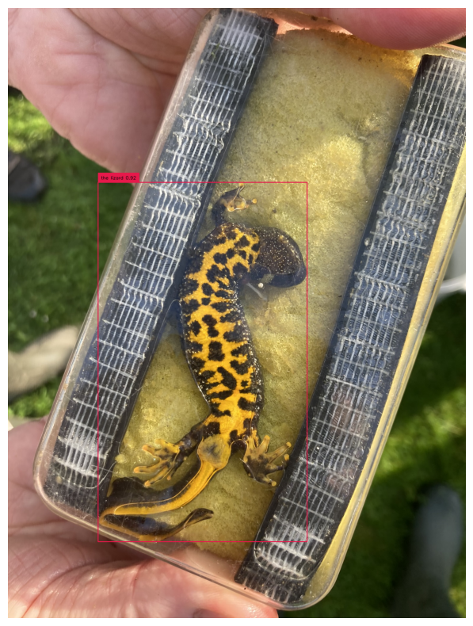
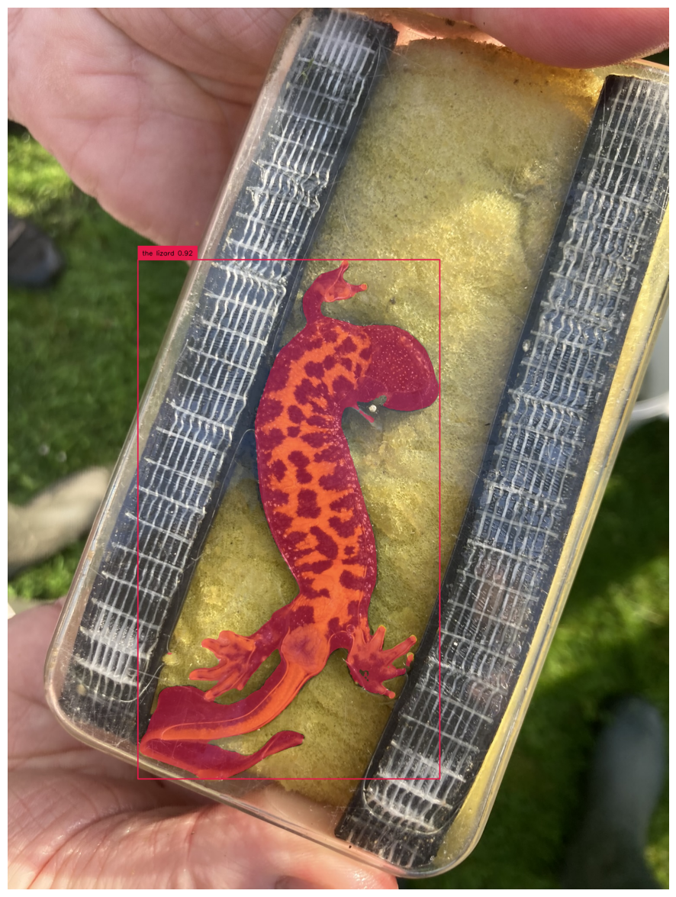
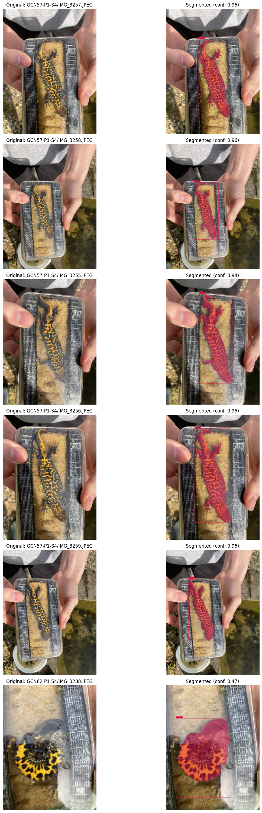
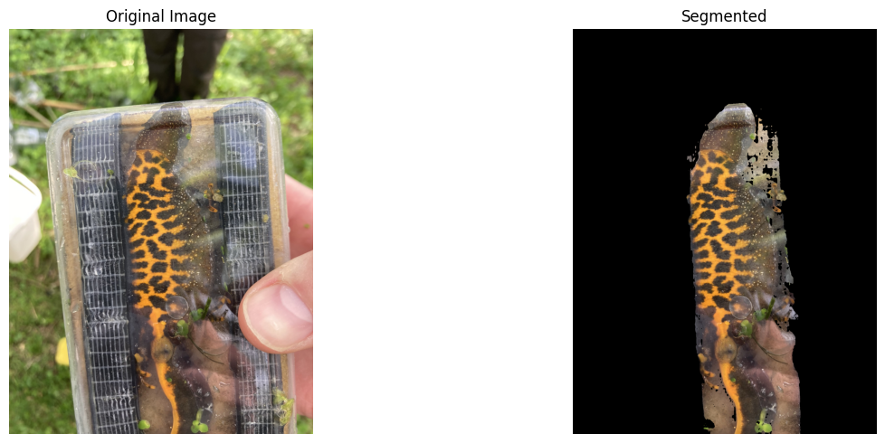

import os
if not os.path.exists("./data/barhill-newts-all"):
os.system("kaggle datasets download -d mshahoyi/barhill-newts-all --unzip -p ./data/barhill-newts-all")Newt Segmentation
This notebook is used to segment the newts in the Barhill dataset using the Grounded-SAM-2 model.
try:
import supervision
os.chdir("gsam2")
except:
os.system('git clone https://github.com/IDEA-Research/Grounded-SAM-2 gsam2')
os.chdir("gsam2")
os.system('pip install -q -e . -e grounding_dino')
os.system('pip install -q supervision')/kaggle/working/gcn-reid/nbs/gsam2import pandas as pd
import numpy as np
import matplotlib.pyplot as plt
import pycocotools.mask as mask_util
from PIL import Image
import argparse
import os
import cv2
import json
import torch
import pandas as pd
import pathlib
import shutil
from datetime import datetime
import subprocess
import tempfile
import numpy as np
from tqdm import tqdm
import matplotlib.pyplot as plt
import supervision as sv
import pycocotools.mask as mask_util
from pathlib import Path
from supervision.draw.color import ColorPalette
from utils.supervision_utils import CUSTOM_COLOR_MAP
from PIL import Image
import matplotlib.pyplot as plt
from sam2.build_sam import build_sam2
from sam2.sam2_image_predictor import SAM2ImagePredictor
from transformers import AutoProcessor, AutoModelForZeroShotObjectDetection
import pandas as pdGROUNDING_MODEL = "IDEA-Research/grounding-dino-base"
SAM2_CHECKPOINT = "./checkpoints/sam2.1_hiera_large.pt"
SAM2_MODEL_CONFIG = "configs/sam2.1/sam2.1_hiera_l.yaml"
DEVICE = "cuda" if torch.cuda.is_available() else "cpu"
OUTPUT_DIR = Path("outputs/test_sam2.1")
DUMP_JSON_RESULTS = True# create output directory
OUTPUT_DIR.mkdir(parents=True, exist_ok=True)
# environment settings
# use bfloat16
torch.autocast(device_type=DEVICE, dtype=torch.bfloat16).__enter__()
if torch.cuda.get_device_properties(0).major >= 8:
# turn on tfloat32 for Ampere GPUs (https://pytorch.org/docs/stable/notes/cuda.html#tensorfloat-32-tf32-on-ampere-devices)
torch.backends.cuda.matmul.allow_tf32 = True
torch.backends.cudnn.allow_tf32 = Trueos.chdir("checkpoints")
os.system("bash download_ckpts.sh")
os.chdir("..")/kaggle/working/gcn-reid/nbs/gsam2/checkpoints
Downloading sam2.1_hiera_tiny.pt checkpoint...
--2025-05-23 18:48:00-- https://dl.fbaipublicfiles.com/segment_anything_2/092824/sam2.1_hiera_tiny.pt
Resolving dl.fbaipublicfiles.com (dl.fbaipublicfiles.com)... 13.227.219.59, 13.227.219.10, 13.227.219.70, ...
Connecting to dl.fbaipublicfiles.com (dl.fbaipublicfiles.com)|13.227.219.59|:443... connected.
HTTP request sent, awaiting response... 200 OK
Length: 156008466 (149M) [application/vnd.snesdev-page-table]
Saving to: ‘sam2.1_hiera_tiny.pt.6’
sam2.1_hiera_tiny.p 0%[ ] 0 --.-KB/s huggingface/tokenizers: The current process just got forked, after parallelism has already been used. Disabling parallelism to avoid deadlocks...
To disable this warning, you can either:
- Avoid using `tokenizers` before the fork if possible
- Explicitly set the environment variable TOKENIZERS_PARALLELISM=(true | false)sam2.1_hiera_tiny.p 100%[===================>] 148.78M 254MB/s in 0.6s
2025-05-23 18:48:01 (254 MB/s) - ‘sam2.1_hiera_tiny.pt.6’ saved [156008466/156008466]
Downloading sam2.1_hiera_small.pt checkpoint...
--2025-05-23 18:48:01-- https://dl.fbaipublicfiles.com/segment_anything_2/092824/sam2.1_hiera_small.pt
Resolving dl.fbaipublicfiles.com (dl.fbaipublicfiles.com)... 13.227.219.59, 13.227.219.70, 13.227.219.10, ...
Connecting to dl.fbaipublicfiles.com (dl.fbaipublicfiles.com)|13.227.219.59|:443... connected.
HTTP request sent, awaiting response... 200 OK
Length: 184416285 (176M) [application/vnd.snesdev-page-table]
Saving to: ‘sam2.1_hiera_small.pt.6’
sam2.1_hiera_small. 100%[===================>] 175.87M 210MB/s in 0.8s
2025-05-23 18:48:02 (210 MB/s) - ‘sam2.1_hiera_small.pt.6’ saved [184416285/184416285]
Downloading sam2.1_hiera_base_plus.pt checkpoint...
--2025-05-23 18:48:02-- https://dl.fbaipublicfiles.com/segment_anything_2/092824/sam2.1_hiera_base_plus.pt
Resolving dl.fbaipublicfiles.com (dl.fbaipublicfiles.com)... 13.227.219.33, 13.227.219.59, 13.227.219.10, ...
Connecting to dl.fbaipublicfiles.com (dl.fbaipublicfiles.com)|13.227.219.33|:443... connected.
HTTP request sent, awaiting response... 200 OK
Length: 323606802 (309M) [application/vnd.snesdev-page-table]
Saving to: ‘sam2.1_hiera_base_plus.pt.6’
sam2.1_hiera_base_p 100%[===================>] 308.62M 284MB/s in 1.1s
2025-05-23 18:48:03 (284 MB/s) - ‘sam2.1_hiera_base_plus.pt.6’ saved [323606802/323606802]
Downloading sam2.1_hiera_large.pt checkpoint...
--2025-05-23 18:48:03-- https://dl.fbaipublicfiles.com/segment_anything_2/092824/sam2.1_hiera_large.pt
Resolving dl.fbaipublicfiles.com (dl.fbaipublicfiles.com)... 13.227.219.10, 13.227.219.70, 13.227.219.33, ...
Connecting to dl.fbaipublicfiles.com (dl.fbaipublicfiles.com)|13.227.219.10|:443... connected.
HTTP request sent, awaiting response... 200 OK
Length: 898083611 (856M) [application/vnd.snesdev-page-table]
Saving to: ‘sam2.1_hiera_large.pt.6’
sam2.1_hiera_large. 100%[===================>] 856.48M 291MB/s in 2.9s
2025-05-23 18:48:06 (291 MB/s) - ‘sam2.1_hiera_large.pt.6’ saved [898083611/898083611]
All checkpoints are downloaded successfully.
/kaggle/working/gcn-reid/nbs/gsam2# build SAM2 image predictor
sam2_checkpoint = SAM2_CHECKPOINT
model_cfg = SAM2_MODEL_CONFIG
sam2_model = build_sam2(model_cfg, sam2_checkpoint, device=DEVICE)
sam2_predictor = SAM2ImagePredictor(sam2_model)# build grounding dino from huggingface
model_id = GROUNDING_MODEL
processor = AutoProcessor.from_pretrained(model_id)
grounding_model = AutoModelForZeroShotObjectDetection.from_pretrained(model_id).to(DEVICE)# Go back to parent directory to access data
os.chdir("..")/kaggle/working/gcn-reid/nbsds_dir = pathlib.Path("./data/barhill-newts-all")
df = pd.read_csv(ds_dir / "metadata.csv")
image = ds_dir / df.iloc[130].file_path
# setup the input image and text prompt for SAM 2 and Grounding DINO
# VERY important: text queries need to be lowercased + end with a dot
text = "newt amphibian reptile."
img_path = image
text, img_path('the lizard.', PosixPath('data/barhill/GCNs/GCN10-P1-S2/IMG_2367.JPEG'))image = Image.open(img_path)
image
sam2_predictor.set_image(np.array(image.convert("RGB")))
inputs = processor(images=image, text=text, return_tensors="pt").to(DEVICE)with torch.no_grad():
outputs = grounding_model(**inputs)results = processor.post_process_grounded_object_detection(
outputs,
inputs.input_ids,
box_threshold=0.4,
text_threshold=0.3,
target_sizes=[image.size[::-1]]
)
"""
Results is a list of dict with the following structure:
[
{
'scores': tensor([0.7969, 0.6469, 0.6002, 0.4220], device='cuda:0'),
'labels': ['car', 'tire', 'tire', 'tire'],
'boxes': tensor([[ 89.3244, 278.6940, 1710.3505, 851.5143],
[1392.4701, 554.4064, 1628.6133, 777.5872],
[ 436.1182, 621.8940, 676.5255, 851.6897],
[1236.0990, 688.3547, 1400.2427, 753.1256]], device='cuda:0')
}
]
"""
results[{'scores': tensor([0.9208], device='cuda:0'),
'boxes': tensor([[ 302.1228, 585.2393, 1003.5174, 1791.4868]], device='cuda:0'),
'text_labels': ['the lizard'],
'labels': ['the lizard']}]# get the box prompt for SAM 2
input_boxes = results[0]["boxes"].cpu().numpy()
masks, scores, logits = sam2_predictor.predict(
point_coords=None,
point_labels=None,
box=input_boxes,
multimask_output=False,
)img = np.array(image)
img.shape(2048, 1536, 3)"""
Post-process the output of the model to get the masks, scores, and logits for visualization
"""
# convert the shape to (n, H, W)
if masks.ndim == 4:
masks = masks.squeeze(1)
confidences = results[0]["scores"].cpu().numpy().tolist()
class_names = results[0]["labels"]
class_ids = np.array(list(range(len(class_names))))
labels = [
f"{class_name} {confidence:.2f}"
for class_name, confidence
in zip(class_names, confidences)
]
confidences, class_names, class_ids, labels([0.9207897186279297], ['the lizard'], array([0]), ['the lizard 0.92'])"""
Visualize image with supervision useful API
"""
img = cv2.imread(img_path)
detections = sv.Detections(
xyxy=input_boxes, # (n, 4)
mask=masks.astype(bool), # (n, h, w)
class_id=class_ids
)
"""
Note that if you want to use default color map,
you can set color=ColorPalette.DEFAULT
"""
# --- Annotate Boxes ---
# Note that if you want to use default color map,
# you can set color=sv.ColorPalette.DEFAULT
# If CUSTOM_COLOR_MAP is a list of hex strings:
box_annotator = sv.BoxAnnotator(color=sv.ColorPalette.from_hex(CUSTOM_COLOR_MAP))
annotated_frame_boxes = box_annotator.annotate(scene=img.copy(), detections=detections)
# --- Annotate Labels ---
# If CUSTOM_COLOR_MAP is a list of hex strings:
label_annotator = sv.LabelAnnotator(color=sv.ColorPalette.from_hex(CUSTOM_COLOR_MAP), text_color=sv.Color.BLACK) # Specify text color if needed
# Create labels if not already defined (example)
# labels = [f"{class_names[i]}: {scores[i]:0.2f}" for i in range(len(class_names))]
annotated_frame_labels = label_annotator.annotate(scene=annotated_frame_boxes.copy(), detections=detections, labels=labels)
# --- Save intermediate image (optional) ---
cv2.imwrite(os.path.join(OUTPUT_DIR, "groundingdino_annotated_image.jpg"), annotated_frame_labels)
# --- Visualize intermediate image (boxes + labels) INLINE ---
print("Displaying image with boxes and labels:")
plt.figure(figsize=(10, 10)) # Adjust size as needed
plt.imshow(cv2.cvtColor(annotated_frame_labels, cv2.COLOR_BGR2RGB))
plt.axis('off')
plt.show()Displaying image with boxes and labels:
# --- Annotate Masks ---
# If CUSTOM_COLOR_MAP is a list of hex strings:
mask_annotator = sv.MaskAnnotator(color=sv.ColorPalette.from_hex(CUSTOM_COLOR_MAP))
# NOTE: mask_annotator modifies the 'scene' in place if you pass the same array
# It's safer to annotate on a fresh copy if you want to keep the previous step clean
# However, the supervision docs often show chaining like this. Let's assume chaining:
annotated_frame_final = mask_annotator.annotate(scene=annotated_frame_labels.copy(), detections=detections) # Use copy to avoid modifying annotated_frame_labels
# --- Visualize final image (boxes + labels + masks) INLINE ---
print("\nDisplaying final image with boxes, labels, and masks:")
plt.figure(figsize=(15, 15)) # Adjust size as needed
plt.imshow(cv2.cvtColor(annotated_frame_final, cv2.COLOR_BGR2RGB))
plt.axis('off')
plt.show()
Displaying final image with boxes, labels, and masks:
Segment the DS
# Create output directory for visualization images - as sibling to data folder
vis_output_dir = pathlib.Path("./data/segmentation_visualizations")
vis_output_dir.mkdir(exist_ok=True)Loaded metadata with 1253 rowsdf[~df.is_video].head(10) 0%| | 0/207 [00:00<?, ?it/s]Processed data/barhill/GCNs/GCN57-P1-S4/IMG_3257.JPEG -> RLE mask saved, visualization at data/segmentation_visualizations/GCN57-P1-S4/IMG_3257.JPEG_segmented.jpg
Processed data/barhill/GCNs/GCN57-P1-S4/IMG_3258.JPEG -> RLE mask saved, visualization at data/segmentation_visualizations/GCN57-P1-S4/IMG_3258.JPEG_segmented.jpg
Processed data/barhill/GCNs/GCN57-P1-S4/IMG_3255.JPEG -> RLE mask saved, visualization at data/segmentation_visualizations/GCN57-P1-S4/IMG_3255.JPEG_segmented.jpg
Processed data/barhill/GCNs/GCN57-P1-S4/IMG_3256.JPEG -> RLE mask saved, visualization at data/segmentation_visualizations/GCN57-P1-S4/IMG_3256.JPEG_segmented.jpg 0%| | 1/207 [00:10<35:05, 10.22s/it]Processed data/barhill/GCNs/GCN57-P1-S4/IMG_3259.JPEG -> RLE mask saved, visualization at data/segmentation_visualizations/GCN57-P1-S4/IMG_3259.JPEG_segmented.jpg
Processed data/barhill/GCNs/GCN62-P1-S4/IMG_3288.JPEG -> RLE mask saved, visualization at data/segmentation_visualizations/GCN62-P1-S4/IMG_3288.JPEG_segmented.jpg
Processed data/barhill/GCNs/GCN62-P1-S4/IMG_3290.JPEG -> RLE mask saved, visualization at data/segmentation_visualizations/GCN62-P1-S4/IMG_3290.JPEG_segmented.jpg
Processed data/barhill/GCNs/GCN62-P1-S4/IMG_3289.JPEG -> RLE mask saved, visualization at data/segmentation_visualizations/GCN62-P1-S4/IMG_3289.JPEG_segmented.jpg
Processed data/barhill/GCNs/GCN62-P1-S4/IMG_3287.JPEG -> RLE mask saved, visualization at data/segmentation_visualizations/GCN62-P1-S4/IMG_3287.JPEG_segmented.jpg 1%| | 2/207 [00:20<35:10, 10.29s/it]Processed data/barhill/GCNs/GCN62-P1-S4/IMG_3291.JPEG -> RLE mask saved, visualization at data/segmentation_visualizations/GCN62-P1-S4/IMG_3291.JPEG_segmented.jpg
Processed data/barhill/GCNs/GCN22-P4-S4/IMG_3040.JPEG -> RLE mask saved, visualization at data/segmentation_visualizations/GCN22-P4-S4/IMG_3040.JPEG_segmented.jpg
Processed data/barhill/GCNs/GCN22-P4-S4/IMG_3041.JPEG -> RLE mask saved, visualization at data/segmentation_visualizations/GCN22-P4-S4/IMG_3041.JPEG_segmented.jpg
Processed data/barhill/GCNs/GCN22-P4-S4/IMG_3038.JPEG -> RLE mask saved, visualization at data/segmentation_visualizations/GCN22-P4-S4/IMG_3038.JPEG_segmented.jpg
Processed data/barhill/GCNs/GCN22-P4-S4/IMG_3039.JPEG -> RLE mask saved, visualization at data/segmentation_visualizations/GCN22-P4-S4/IMG_3039.JPEG_segmented.jpg 1%|▏ | 3/207 [00:30<34:52, 10.26s/it]Processed data/barhill/GCNs/GCN22-P4-S4/IMG_3036.JPEG -> RLE mask saved, visualization at data/segmentation_visualizations/GCN22-P4-S4/IMG_3036.JPEG_segmented.jpg
Processed data/barhill/GCNs/GCN1-P1-S8/IMG_3754.JPEG -> RLE mask saved, visualization at data/segmentation_visualizations/GCN1-P1-S8/IMG_3754.JPEG_segmented.jpg
Processed data/barhill/GCNs/GCN1-P1-S8/IMG_3746.JPEG -> RLE mask saved, visualization at data/segmentation_visualizations/GCN1-P1-S8/IMG_3746.JPEG_segmented.jpg
Processed data/barhill/GCNs/GCN1-P1-S8/IMG_3752.JPEG -> RLE mask saved, visualization at data/segmentation_visualizations/GCN1-P1-S8/IMG_3752.JPEG_segmented.jpg
Processed data/barhill/GCNs/GCN1-P1-S8/IMG_3744.JPEG -> RLE mask saved, visualization at data/segmentation_visualizations/GCN1-P1-S8/IMG_3744.JPEG_segmented.jpg 2%|▏ | 4/207 [00:40<34:13, 10.12s/it]Processed data/barhill/GCNs/GCN1-P1-S8/IMG_3747.JPEG -> RLE mask saved, visualization at data/segmentation_visualizations/GCN1-P1-S8/IMG_3747.JPEG_segmented.jpg
Processed data/barhill/GCNs/GCN31-P3-S4/IMG_3093.JPEG -> RLE mask saved, visualization at data/segmentation_visualizations/GCN31-P3-S4/IMG_3093.JPEG_segmented.jpg
Processed data/barhill/GCNs/GCN31-P3-S4/IMG_3096.JPEG -> RLE mask saved, visualization at data/segmentation_visualizations/GCN31-P3-S4/IMG_3096.JPEG_segmented.jpg
Processed data/barhill/GCNs/GCN31-P3-S4/IMG_3094.JPEG -> RLE mask saved, visualization at data/segmentation_visualizations/GCN31-P3-S4/IMG_3094.JPEG_segmented.jpg
Processed data/barhill/GCNs/GCN31-P3-S4/IMG_3097.JPEG -> RLE mask saved, visualization at data/segmentation_visualizations/GCN31-P3-S4/IMG_3097.JPEG_segmented.jpg 2%|▏ | 5/207 [00:50<33:39, 10.00s/it]Processed data/barhill/GCNs/GCN31-P3-S4/IMG_3095.JPEG -> RLE mask saved, visualization at data/segmentation_visualizations/GCN31-P3-S4/IMG_3095.JPEG_segmented.jpg
Processed data/barhill/GCNs/GCN75-P5-S4/IMG_3369.JPEG -> RLE mask saved, visualization at data/segmentation_visualizations/GCN75-P5-S4/IMG_3369.JPEG_segmented.jpg
Processed data/barhill/GCNs/GCN75-P5-S4/IMG_3371.JPEG -> RLE mask saved, visualization at data/segmentation_visualizations/GCN75-P5-S4/IMG_3371.JPEG_segmented.jpg
Processed data/barhill/GCNs/GCN75-P5-S4/IMG_3370.JPEG -> RLE mask saved, visualization at data/segmentation_visualizations/GCN75-P5-S4/IMG_3370.JPEG_segmented.jpg
Processed data/barhill/GCNs/GCN75-P5-S4/IMG_3368.JPEG -> RLE mask saved, visualization at data/segmentation_visualizations/GCN75-P5-S4/IMG_3368.JPEG_segmented.jpg 3%|▎ | 6/207 [01:00<33:14, 9.92s/it]Processed data/barhill/GCNs/GCN75-P5-S4/IMG_3372.JPEG -> RLE mask saved, visualization at data/segmentation_visualizations/GCN75-P5-S4/IMG_3372.JPEG_segmented.jpg
Processed data/barhill/GCNs/GCN23-P4-S2/IMG_2460.JPEG -> RLE mask saved, visualization at data/segmentation_visualizations/GCN23-P4-S2/IMG_2460.JPEG_segmented.jpg
Processed data/barhill/GCNs/GCN23-P4-S2/IMG_2459.JPEG -> RLE mask saved, visualization at data/segmentation_visualizations/GCN23-P4-S2/IMG_2459.JPEG_segmented.jpg
Processed data/barhill/GCNs/GCN23-P4-S2/IMG_2458.JPEG -> RLE mask saved, visualization at data/segmentation_visualizations/GCN23-P4-S2/IMG_2458.JPEG_segmented.jpg
Processed data/barhill/GCNs/GCN23-P4-S2/IMG_2456.JPEG -> RLE mask saved, visualization at data/segmentation_visualizations/GCN23-P4-S2/IMG_2456.JPEG_segmented.jpg 3%|▎ | 7/207 [01:09<32:50, 9.85s/it]Processed data/barhill/GCNs/GCN23-P4-S2/IMG_2455.JPEG -> RLE mask saved, visualization at data/segmentation_visualizations/GCN23-P4-S2/IMG_2455.JPEG_segmented.jpg
Processed data/barhill/GCNs/GCN12-P7-S6/IMG_3660.JPEG -> RLE mask saved, visualization at data/segmentation_visualizations/GCN12-P7-S6/IMG_3660.JPEG_segmented.jpg
Processed data/barhill/GCNs/GCN12-P7-S6/IMG_3658.JPEG -> RLE mask saved, visualization at data/segmentation_visualizations/GCN12-P7-S6/IMG_3658.JPEG_segmented.jpg
Processed data/barhill/GCNs/GCN12-P7-S6/IMG_3657.JPEG -> RLE mask saved, visualization at data/segmentation_visualizations/GCN12-P7-S6/IMG_3657.JPEG_segmented.jpg 4%|▍ | 8/207 [01:17<30:32, 9.21s/it]Processed data/barhill/GCNs/GCN12-P7-S6/IMG_3659.JPEG -> RLE mask saved, visualization at data/segmentation_visualizations/GCN12-P7-S6/IMG_3659.JPEG_segmented.jpg
Processed data/barhill/GCNs/GCN14-P3-S3/IMG_2862.JPEG -> RLE mask saved, visualization at data/segmentation_visualizations/GCN14-P3-S3/IMG_2862.JPEG_segmented.jpg
Processed data/barhill/GCNs/GCN14-P3-S3/IMG_2864.JPEG -> RLE mask saved, visualization at data/segmentation_visualizations/GCN14-P3-S3/IMG_2864.JPEG_segmented.jpg
Processed data/barhill/GCNs/GCN14-P3-S3/IMG_2859.JPEG -> RLE mask saved, visualization at data/segmentation_visualizations/GCN14-P3-S3/IMG_2859.JPEG_segmented.jpg
No detections for data/barhill/GCNs/GCN14-P3-S3/IMG_2863.JPEG, skipping 4%|▍ | 9/207 [01:26<29:54, 9.06s/it]Processed data/barhill/GCNs/GCN14-P3-S3/IMG_2858.JPEG -> RLE mask saved, visualization at data/segmentation_visualizations/GCN14-P3-S3/IMG_2858.JPEG_segmented.jpg
Processed data/barhill/GCNs/GCN13-P7-S6/IMG_3663.JPEG -> RLE mask saved, visualization at data/segmentation_visualizations/GCN13-P7-S6/IMG_3663.JPEG_segmented.jpg
Processed data/barhill/GCNs/GCN13-P7-S6/IMG_3664.JPEG -> RLE mask saved, visualization at data/segmentation_visualizations/GCN13-P7-S6/IMG_3664.JPEG_segmented.jpg
No detections for data/barhill/GCNs/GCN13-P7-S6/IMG_3665.JPEG, skipping 5%|▍ | 10/207 [01:33<27:29, 8.37s/it]Processed data/barhill/GCNs/GCN13-P7-S6/IMG_3662.JPEG -> RLE mask saved, visualization at data/segmentation_visualizations/GCN13-P7-S6/IMG_3662.JPEG_segmented.jpg
Processed data/barhill/GCNs/GCN53-P2-S2/IMG_2658.JPEG -> RLE mask saved, visualization at data/segmentation_visualizations/GCN53-P2-S2/IMG_2658.JPEG_segmented.jpg
Processed data/barhill/GCNs/GCN53-P2-S2/IMG_2660.JPEG -> RLE mask saved, visualization at data/segmentation_visualizations/GCN53-P2-S2/IMG_2660.JPEG_segmented.jpg
Processed data/barhill/GCNs/GCN53-P2-S2/IMG_2656.JPEG -> RLE mask saved, visualization at data/segmentation_visualizations/GCN53-P2-S2/IMG_2656.JPEG_segmented.jpg
Processed data/barhill/GCNs/GCN53-P2-S2/IMG_2659.JPEG -> RLE mask saved, visualization at data/segmentation_visualizations/GCN53-P2-S2/IMG_2659.JPEG_segmented.jpg 5%|▌ | 11/207 [01:43<28:51, 8.84s/it]Processed data/barhill/GCNs/GCN53-P2-S2/IMG_2655.JPEG -> RLE mask saved, visualization at data/segmentation_visualizations/GCN53-P2-S2/IMG_2655.JPEG_segmented.jpg
Processed data/barhill/GCNs/GCN17-P2-S3/IMG_2882.JPEG -> RLE mask saved, visualization at data/segmentation_visualizations/GCN17-P2-S3/IMG_2882.JPEG_segmented.jpg
Processed data/barhill/GCNs/GCN17-P2-S3/IMG_2883.JPEG -> RLE mask saved, visualization at data/segmentation_visualizations/GCN17-P2-S3/IMG_2883.JPEG_segmented.jpg
Processed data/barhill/GCNs/GCN17-P2-S3/IMG_2880.JPEG -> RLE mask saved, visualization at data/segmentation_visualizations/GCN17-P2-S3/IMG_2880.JPEG_segmented.jpg
Processed data/barhill/GCNs/GCN17-P2-S3/IMG_2884.JPEG -> RLE mask saved, visualization at data/segmentation_visualizations/GCN17-P2-S3/IMG_2884.JPEG_segmented.jpg 6%|▌ | 12/207 [01:53<29:47, 9.17s/it]Processed data/barhill/GCNs/GCN17-P2-S3/IMG_2881.JPEG -> RLE mask saved, visualization at data/segmentation_visualizations/GCN17-P2-S3/IMG_2881.JPEG_segmented.jpg
Processed data/barhill/GCNs/GCN28-P3-S4/IMG_3079.JPEG -> RLE mask saved, visualization at data/segmentation_visualizations/GCN28-P3-S4/IMG_3079.JPEG_segmented.jpg
Processed data/barhill/GCNs/GCN28-P3-S4/IMG_3077.JPEG -> RLE mask saved, visualization at data/segmentation_visualizations/GCN28-P3-S4/IMG_3077.JPEG_segmented.jpg
Processed data/barhill/GCNs/GCN28-P3-S4/IMG_3075.JPEG -> RLE mask saved, visualization at data/segmentation_visualizations/GCN28-P3-S4/IMG_3075.JPEG_segmented.jpg
Processed data/barhill/GCNs/GCN28-P3-S4/IMG_3076.JPEG -> RLE mask saved, visualization at data/segmentation_visualizations/GCN28-P3-S4/IMG_3076.JPEG_segmented.jpg 6%|▋ | 13/207 [02:03<30:22, 9.40s/it]Processed data/barhill/GCNs/GCN28-P3-S4/IMG_3078.JPEG -> RLE mask saved, visualization at data/segmentation_visualizations/GCN28-P3-S4/IMG_3078.JPEG_segmented.jpg
Processed data/barhill/GCNs/GCN12-P1-S2/IMG_2380.JPEG -> RLE mask saved, visualization at data/segmentation_visualizations/GCN12-P1-S2/IMG_2380.JPEG_segmented.jpg
Processed data/barhill/GCNs/GCN12-P1-S2/IMG_2384.JPEG -> RLE mask saved, visualization at data/segmentation_visualizations/GCN12-P1-S2/IMG_2384.JPEG_segmented.jpg
Processed data/barhill/GCNs/GCN12-P1-S2/IMG_2379.JPEG -> RLE mask saved, visualization at data/segmentation_visualizations/GCN12-P1-S2/IMG_2379.JPEG_segmented.jpg
Processed data/barhill/GCNs/GCN12-P1-S2/IMG_2383.JPEG -> RLE mask saved, visualization at data/segmentation_visualizations/GCN12-P1-S2/IMG_2383.JPEG_segmented.jpg 7%|▋ | 14/207 [02:12<30:42, 9.54s/it]Processed data/barhill/GCNs/GCN12-P1-S2/IMG_2382.JPEG -> RLE mask saved, visualization at data/segmentation_visualizations/GCN12-P1-S2/IMG_2382.JPEG_segmented.jpg
Processed data/barhill/GCNs/GCN1-P1-S6/IMG_3579.JPEG -> RLE mask saved, visualization at data/segmentation_visualizations/GCN1-P1-S6/IMG_3579.JPEG_segmented.jpg
Processed data/barhill/GCNs/GCN1-P1-S6/IMG_3580.JPEG -> RLE mask saved, visualization at data/segmentation_visualizations/GCN1-P1-S6/IMG_3580.JPEG_segmented.jpg
Processed data/barhill/GCNs/GCN1-P1-S6/IMG_3581.JPEG -> RLE mask saved, visualization at data/segmentation_visualizations/GCN1-P1-S6/IMG_3581.JPEG_segmented.jpg
Processed data/barhill/GCNs/GCN1-P1-S6/IMG_3578.JPEG -> RLE mask saved, visualization at data/segmentation_visualizations/GCN1-P1-S6/IMG_3578.JPEG_segmented.jpg 7%|▋ | 15/207 [02:22<30:46, 9.62s/it]Processed data/barhill/GCNs/GCN1-P1-S6/IMG_3577.JPEG -> RLE mask saved, visualization at data/segmentation_visualizations/GCN1-P1-S6/IMG_3577.JPEG_segmented.jpg
Processed data/barhill/GCNs/GCN36-P3-S4/IMG_3126.JPEG -> RLE mask saved, visualization at data/segmentation_visualizations/GCN36-P3-S4/IMG_3126.JPEG_segmented.jpg
Processed data/barhill/GCNs/GCN36-P3-S4/IMG_3128.JPEG -> RLE mask saved, visualization at data/segmentation_visualizations/GCN36-P3-S4/IMG_3128.JPEG_segmented.jpg
Processed data/barhill/GCNs/GCN36-P3-S4/IMG_3124.JPEG -> RLE mask saved, visualization at data/segmentation_visualizations/GCN36-P3-S4/IMG_3124.JPEG_segmented.jpg
Processed data/barhill/GCNs/GCN36-P3-S4/IMG_3129.JPEG -> RLE mask saved, visualization at data/segmentation_visualizations/GCN36-P3-S4/IMG_3129.JPEG_segmented.jpg 8%|▊ | 16/207 [02:32<30:48, 9.68s/it]Processed data/barhill/GCNs/GCN36-P3-S4/IMG_3127.JPEG -> RLE mask saved, visualization at data/segmentation_visualizations/GCN36-P3-S4/IMG_3127.JPEG_segmented.jpg
Processed data/barhill/GCNs/GCN41-P3-S4/IMG_3156.JPEG -> RLE mask saved, visualization at data/segmentation_visualizations/GCN41-P3-S4/IMG_3156.JPEG_segmented.jpg
Processed data/barhill/GCNs/GCN41-P3-S4/IMG_3158.JPEG -> RLE mask saved, visualization at data/segmentation_visualizations/GCN41-P3-S4/IMG_3158.JPEG_segmented.jpg
Processed data/barhill/GCNs/GCN41-P3-S4/IMG_3157.JPEG -> RLE mask saved, visualization at data/segmentation_visualizations/GCN41-P3-S4/IMG_3157.JPEG_segmented.jpg
Processed data/barhill/GCNs/GCN41-P3-S4/IMG_3155.JPEG -> RLE mask saved, visualization at data/segmentation_visualizations/GCN41-P3-S4/IMG_3155.JPEG_segmented.jpg 8%|▊ | 17/207 [02:42<30:45, 9.71s/it]Processed data/barhill/GCNs/GCN41-P3-S4/IMG_3159.JPEG -> RLE mask saved, visualization at data/segmentation_visualizations/GCN41-P3-S4/IMG_3159.JPEG_segmented.jpg
Processed data/barhill/GCNs/GCN7-P1-S2/IMG_2352.JPEG -> RLE mask saved, visualization at data/segmentation_visualizations/GCN7-P1-S2/IMG_2352.JPEG_segmented.jpg
Processed data/barhill/GCNs/GCN7-P1-S2/IMG_2348.JPEG -> RLE mask saved, visualization at data/segmentation_visualizations/GCN7-P1-S2/IMG_2348.JPEG_segmented.jpg
Processed data/barhill/GCNs/GCN7-P1-S2/IMG_2350.JPEG -> RLE mask saved, visualization at data/segmentation_visualizations/GCN7-P1-S2/IMG_2350.JPEG_segmented.jpg
Processed data/barhill/GCNs/GCN7-P1-S2/IMG_2351.JPEG -> RLE mask saved, visualization at data/segmentation_visualizations/GCN7-P1-S2/IMG_2351.JPEG_segmented.jpg 9%|▊ | 18/207 [02:52<30:41, 9.74s/it]Processed data/barhill/GCNs/GCN7-P1-S2/IMG_2349.JPEG -> RLE mask saved, visualization at data/segmentation_visualizations/GCN7-P1-S2/IMG_2349.JPEG_segmented.jpg
Processed data/barhill/GCNs/GCN63-P1-S4/IMG_3297.JPEG -> RLE mask saved, visualization at data/segmentation_visualizations/GCN63-P1-S4/IMG_3297.JPEG_segmented.jpg
Processed data/barhill/GCNs/GCN63-P1-S4/IMG_3293.JPEG -> RLE mask saved, visualization at data/segmentation_visualizations/GCN63-P1-S4/IMG_3293.JPEG_segmented.jpg
Processed data/barhill/GCNs/GCN63-P1-S4/IMG_3298.JPEG -> RLE mask saved, visualization at data/segmentation_visualizations/GCN63-P1-S4/IMG_3298.JPEG_segmented.jpg
Processed data/barhill/GCNs/GCN63-P1-S4/IMG_3296.JPEG -> RLE mask saved, visualization at data/segmentation_visualizations/GCN63-P1-S4/IMG_3296.JPEG_segmented.jpg 9%|▉ | 19/207 [03:02<30:36, 9.77s/it]Processed data/barhill/GCNs/GCN63-P1-S4/IMG_3294.JPEG -> RLE mask saved, visualization at data/segmentation_visualizations/GCN63-P1-S4/IMG_3294.JPEG_segmented.jpg
Processed data/barhill/GCNs/GCN17-P7-S6/IMG_3685.JPEG -> RLE mask saved, visualization at data/segmentation_visualizations/GCN17-P7-S6/IMG_3685.JPEG_segmented.jpg
Processed data/barhill/GCNs/GCN17-P7-S6/IMG_3686.JPEG -> RLE mask saved, visualization at data/segmentation_visualizations/GCN17-P7-S6/IMG_3686.JPEG_segmented.jpg
Processed data/barhill/GCNs/GCN17-P7-S6/IMG_3687.JPEG -> RLE mask saved, visualization at data/segmentation_visualizations/GCN17-P7-S6/IMG_3687.JPEG_segmented.jpg
Processed data/barhill/GCNs/GCN17-P7-S6/IMG_3689.JPEG -> RLE mask saved, visualization at data/segmentation_visualizations/GCN17-P7-S6/IMG_3689.JPEG_segmented.jpg 10%|▉ | 20/207 [03:11<30:31, 9.79s/it]Processed data/barhill/GCNs/GCN17-P7-S6/IMG_3688.JPEG -> RLE mask saved, visualization at data/segmentation_visualizations/GCN17-P7-S6/IMG_3688.JPEG_segmented.jpg
Processed data/barhill/GCNs/GCN8-P4-S4/IMG_2945.JPEG -> RLE mask saved, visualization at data/segmentation_visualizations/GCN8-P4-S4/IMG_2945.JPEG_segmented.jpg
Processed data/barhill/GCNs/GCN8-P4-S4/IMG_2946.JPEG -> RLE mask saved, visualization at data/segmentation_visualizations/GCN8-P4-S4/IMG_2946.JPEG_segmented.jpg
Processed data/barhill/GCNs/GCN8-P4-S4/IMG_2944.JPEG -> RLE mask saved, visualization at data/segmentation_visualizations/GCN8-P4-S4/IMG_2944.JPEG_segmented.jpg
Processed data/barhill/GCNs/GCN8-P4-S4/IMG_2947.JPEG -> RLE mask saved, visualization at data/segmentation_visualizations/GCN8-P4-S4/IMG_2947.JPEG_segmented.jpg 10%|█ | 21/207 [03:21<30:28, 9.83s/it]Processed data/barhill/GCNs/GCN8-P4-S4/IMG_2943.JPEG -> RLE mask saved, visualization at data/segmentation_visualizations/GCN8-P4-S4/IMG_2943.JPEG_segmented.jpg
Processed data/barhill/GCNs/GCN34-P3-S2/IMG_2531.JPEG -> RLE mask saved, visualization at data/segmentation_visualizations/GCN34-P3-S2/IMG_2531.JPEG_segmented.jpg
Processed data/barhill/GCNs/GCN34-P3-S2/IMG_2530.JPEG -> RLE mask saved, visualization at data/segmentation_visualizations/GCN34-P3-S2/IMG_2530.JPEG_segmented.jpg
Processed data/barhill/GCNs/GCN34-P3-S2/IMG_2534.JPEG -> RLE mask saved, visualization at data/segmentation_visualizations/GCN34-P3-S2/IMG_2534.JPEG_segmented.jpg
Processed data/barhill/GCNs/GCN34-P3-S2/IMG_2532.JPEG -> RLE mask saved, visualization at data/segmentation_visualizations/GCN34-P3-S2/IMG_2532.JPEG_segmented.jpg 11%|█ | 22/207 [03:31<30:22, 9.85s/it]Processed data/barhill/GCNs/GCN34-P3-S2/IMG_2533.JPEG -> RLE mask saved, visualization at data/segmentation_visualizations/GCN34-P3-S2/IMG_2533.JPEG_segmented.jpg
Processed data/barhill/GCNs/GCN50-P2-S4/IMG_3210.JPEG -> RLE mask saved, visualization at data/segmentation_visualizations/GCN50-P2-S4/IMG_3210.JPEG_segmented.jpg
Processed data/barhill/GCNs/GCN50-P2-S4/IMG_3212.JPEG -> RLE mask saved, visualization at data/segmentation_visualizations/GCN50-P2-S4/IMG_3212.JPEG_segmented.jpg
Processed data/barhill/GCNs/GCN50-P2-S4/IMG_3213.JPEG -> RLE mask saved, visualization at data/segmentation_visualizations/GCN50-P2-S4/IMG_3213.JPEG_segmented.jpg 11%|█ | 23/207 [03:39<28:25, 9.27s/it]Processed data/barhill/GCNs/GCN50-P2-S4/IMG_3211.JPEG -> RLE mask saved, visualization at data/segmentation_visualizations/GCN50-P2-S4/IMG_3211.JPEG_segmented.jpg
Processed data/barhill/GCNs/GCN9-P4-S4/IMG_2952.JPEG -> RLE mask saved, visualization at data/segmentation_visualizations/GCN9-P4-S4/IMG_2952.JPEG_segmented.jpg
Processed data/barhill/GCNs/GCN9-P4-S4/IMG_2953.JPEG -> RLE mask saved, visualization at data/segmentation_visualizations/GCN9-P4-S4/IMG_2953.JPEG_segmented.jpg
Processed data/barhill/GCNs/GCN9-P4-S4/IMG_2951.JPEG -> RLE mask saved, visualization at data/segmentation_visualizations/GCN9-P4-S4/IMG_2951.JPEG_segmented.jpg
Processed data/barhill/GCNs/GCN9-P4-S4/IMG_2950.JPEG -> RLE mask saved, visualization at data/segmentation_visualizations/GCN9-P4-S4/IMG_2950.JPEG_segmented.jpg 12%|█▏ | 24/207 [03:49<28:54, 9.48s/it]Processed data/barhill/GCNs/GCN9-P4-S4/IMG_2949.JPEG -> RLE mask saved, visualization at data/segmentation_visualizations/GCN9-P4-S4/IMG_2949.JPEG_segmented.jpg
Processed data/barhill/GCNs/GCN5-P4-S4/IMG_2928.JPEG -> RLE mask saved, visualization at data/segmentation_visualizations/GCN5-P4-S4/IMG_2928.JPEG_segmented.jpg
Processed data/barhill/GCNs/GCN5-P4-S4/IMG_2927.JPEG -> RLE mask saved, visualization at data/segmentation_visualizations/GCN5-P4-S4/IMG_2927.JPEG_segmented.jpg
Processed data/barhill/GCNs/GCN5-P4-S4/IMG_2929.JPEG -> RLE mask saved, visualization at data/segmentation_visualizations/GCN5-P4-S4/IMG_2929.JPEG_segmented.jpg
Processed data/barhill/GCNs/GCN5-P4-S4/IMG_2926.JPEG -> RLE mask saved, visualization at data/segmentation_visualizations/GCN5-P4-S4/IMG_2926.JPEG_segmented.jpg 12%|█▏ | 25/207 [03:59<29:10, 9.62s/it]Processed data/barhill/GCNs/GCN5-P4-S4/IMG_2925.JPEG -> RLE mask saved, visualization at data/segmentation_visualizations/GCN5-P4-S4/IMG_2925.JPEG_segmented.jpg
Processed data/barhill/GCNs/GCN44-P2-S4/IMG_3174.JPEG -> RLE mask saved, visualization at data/segmentation_visualizations/GCN44-P2-S4/IMG_3174.JPEG_segmented.jpg
Processed data/barhill/GCNs/GCN44-P2-S4/IMG_3177.JPEG -> RLE mask saved, visualization at data/segmentation_visualizations/GCN44-P2-S4/IMG_3177.JPEG_segmented.jpg
Processed data/barhill/GCNs/GCN44-P2-S4/IMG_3178.JPEG -> RLE mask saved, visualization at data/segmentation_visualizations/GCN44-P2-S4/IMG_3178.JPEG_segmented.jpg
Processed data/barhill/GCNs/GCN44-P2-S4/IMG_3175.JPEG -> RLE mask saved, visualization at data/segmentation_visualizations/GCN44-P2-S4/IMG_3175.JPEG_segmented.jpg 13%|█▎ | 26/207 [04:09<29:11, 9.68s/it]Processed data/barhill/GCNs/GCN44-P2-S4/IMG_3176.JPEG -> RLE mask saved, visualization at data/segmentation_visualizations/GCN44-P2-S4/IMG_3176.JPEG_segmented.jpg
Processed data/barhill/GCNs/GCN59-P5-S2/IMG_2698.JPEG -> RLE mask saved, visualization at data/segmentation_visualizations/GCN59-P5-S2/IMG_2698.JPEG_segmented.jpg
Processed data/barhill/GCNs/GCN59-P5-S2/IMG_2699.JPEG -> RLE mask saved, visualization at data/segmentation_visualizations/GCN59-P5-S2/IMG_2699.JPEG_segmented.jpg
Processed data/barhill/GCNs/GCN59-P5-S2/IMG_2700.JPEG -> RLE mask saved, visualization at data/segmentation_visualizations/GCN59-P5-S2/IMG_2700.JPEG_segmented.jpg
Processed data/barhill/GCNs/GCN59-P5-S2/IMG_2701.JPEG -> RLE mask saved, visualization at data/segmentation_visualizations/GCN59-P5-S2/IMG_2701.JPEG_segmented.jpg 13%|█▎ | 27/207 [04:19<29:09, 9.72s/it]Processed data/barhill/GCNs/GCN59-P5-S2/IMG_2703.JPEG -> RLE mask saved, visualization at data/segmentation_visualizations/GCN59-P5-S2/IMG_2703.JPEG_segmented.jpg
Processed data/barhill/GCNs/GCN13-P2-S3/IMG_2852.JPEG -> RLE mask saved, visualization at data/segmentation_visualizations/GCN13-P2-S3/IMG_2852.JPEG_segmented.jpg
Processed data/barhill/GCNs/GCN13-P2-S3/IMG_2851.JPEG -> RLE mask saved, visualization at data/segmentation_visualizations/GCN13-P2-S3/IMG_2851.JPEG_segmented.jpg
Processed data/barhill/GCNs/GCN13-P2-S3/IMG_2854.JPEG -> RLE mask saved, visualization at data/segmentation_visualizations/GCN13-P2-S3/IMG_2854.JPEG_segmented.jpg
Processed data/barhill/GCNs/GCN13-P2-S3/IMG_2850.JPEG -> RLE mask saved, visualization at data/segmentation_visualizations/GCN13-P2-S3/IMG_2850.JPEG_segmented.jpg 14%|█▎ | 28/207 [04:29<29:08, 9.77s/it]Processed data/barhill/GCNs/GCN13-P2-S3/IMG_2853.JPEG -> RLE mask saved, visualization at data/segmentation_visualizations/GCN13-P2-S3/IMG_2853.JPEG_segmented.jpg
Processed data/barhill/GCNs/GCN7-P3-S6/IMG_3615.JPEG -> RLE mask saved, visualization at data/segmentation_visualizations/GCN7-P3-S6/IMG_3615.JPEG_segmented.jpg
Processed data/barhill/GCNs/GCN7-P3-S6/IMG_3618.JPEG -> RLE mask saved, visualization at data/segmentation_visualizations/GCN7-P3-S6/IMG_3618.JPEG_segmented.jpg
Processed data/barhill/GCNs/GCN7-P3-S6/IMG_3617.JPEG -> RLE mask saved, visualization at data/segmentation_visualizations/GCN7-P3-S6/IMG_3617.JPEG_segmented.jpg
Processed data/barhill/GCNs/GCN7-P3-S6/IMG_3616.JPEG -> RLE mask saved, visualization at data/segmentation_visualizations/GCN7-P3-S6/IMG_3616.JPEG_segmented.jpg 14%|█▍ | 29/207 [04:38<28:59, 9.77s/it]Processed data/barhill/GCNs/GCN7-P3-S6/IMG_3619.JPEG -> RLE mask saved, visualization at data/segmentation_visualizations/GCN7-P3-S6/IMG_3619.JPEG_segmented.jpg
Processed data/barhill/GCNs/GCN25-P4-S4/IMG_3057.JPEG -> RLE mask saved, visualization at data/segmentation_visualizations/GCN25-P4-S4/IMG_3057.JPEG_segmented.jpg
Processed data/barhill/GCNs/GCN25-P4-S4/IMG_3060.JPEG -> RLE mask saved, visualization at data/segmentation_visualizations/GCN25-P4-S4/IMG_3060.JPEG_segmented.jpg
Processed data/barhill/GCNs/GCN25-P4-S4/IMG_3058.JPEG -> RLE mask saved, visualization at data/segmentation_visualizations/GCN25-P4-S4/IMG_3058.JPEG_segmented.jpg
Processed data/barhill/GCNs/GCN25-P4-S4/IMG_3056.JPEG -> RLE mask saved, visualization at data/segmentation_visualizations/GCN25-P4-S4/IMG_3056.JPEG_segmented.jpg 14%|█▍ | 30/207 [04:48<28:52, 9.79s/it]Processed data/barhill/GCNs/GCN25-P4-S4/IMG_3059.JPEG -> RLE mask saved, visualization at data/segmentation_visualizations/GCN25-P4-S4/IMG_3059.JPEG_segmented.jpg
Processed data/barhill/GCNs/GCN2-P4-S3/IMG_2769.JPEG -> RLE mask saved, visualization at data/segmentation_visualizations/GCN2-P4-S3/IMG_2769.JPEG_segmented.jpg
Processed data/barhill/GCNs/GCN2-P4-S3/IMG_2776.JPEG -> RLE mask saved, visualization at data/segmentation_visualizations/GCN2-P4-S3/IMG_2776.JPEG_segmented.jpg
No detections for data/barhill/GCNs/GCN2-P4-S3/IMG_2771.JPEG, skipping
Processed data/barhill/GCNs/GCN2-P4-S3/IMG_2770.JPEG -> RLE mask saved, visualization at data/segmentation_visualizations/GCN2-P4-S3/IMG_2770.JPEG_segmented.jpg 15%|█▍ | 31/207 [04:57<27:57, 9.53s/it]Processed data/barhill/GCNs/GCN2-P4-S3/IMG_2775.JPEG -> RLE mask saved, visualization at data/segmentation_visualizations/GCN2-P4-S3/IMG_2775.JPEG_segmented.jpg
Processed data/barhill/GCNs/GCN65-P1-S4/IMG_3307.JPEG -> RLE mask saved, visualization at data/segmentation_visualizations/GCN65-P1-S4/IMG_3307.JPEG_segmented.jpg
Processed data/barhill/GCNs/GCN65-P1-S4/IMG_3311.JPEG -> RLE mask saved, visualization at data/segmentation_visualizations/GCN65-P1-S4/IMG_3311.JPEG_segmented.jpg
Processed data/barhill/GCNs/GCN65-P1-S4/IMG_3308.JPEG -> RLE mask saved, visualization at data/segmentation_visualizations/GCN65-P1-S4/IMG_3308.JPEG_segmented.jpg
Processed data/barhill/GCNs/GCN65-P1-S4/IMG_3306.JPEG -> RLE mask saved, visualization at data/segmentation_visualizations/GCN65-P1-S4/IMG_3306.JPEG_segmented.jpg 15%|█▌ | 32/207 [05:07<28:06, 9.64s/it]Processed data/barhill/GCNs/GCN65-P1-S4/IMG_3310.JPEG -> RLE mask saved, visualization at data/segmentation_visualizations/GCN65-P1-S4/IMG_3310.JPEG_segmented.jpg
Processed data/barhill/GCNs/GCN20-P4-S4/IMG_3025.JPEG -> RLE mask saved, visualization at data/segmentation_visualizations/GCN20-P4-S4/IMG_3025.JPEG_segmented.jpg
Processed data/barhill/GCNs/GCN20-P4-S4/IMG_3023.JPEG -> RLE mask saved, visualization at data/segmentation_visualizations/GCN20-P4-S4/IMG_3023.JPEG_segmented.jpg
Processed data/barhill/GCNs/GCN20-P4-S4/IMG_3028.JPEG -> RLE mask saved, visualization at data/segmentation_visualizations/GCN20-P4-S4/IMG_3028.JPEG_segmented.jpg
Processed data/barhill/GCNs/GCN20-P4-S4/IMG_3026.JPEG -> RLE mask saved, visualization at data/segmentation_visualizations/GCN20-P4-S4/IMG_3026.JPEG_segmented.jpg 16%|█▌ | 33/207 [05:17<28:38, 9.88s/it]Processed data/barhill/GCNs/GCN20-P4-S4/IMG_3027.JPEG -> RLE mask saved, visualization at data/segmentation_visualizations/GCN20-P4-S4/IMG_3027.JPEG_segmented.jpg
Processed data/barhill/GCNs/GCN12-P4-S4/IMG_2968.JPEG -> RLE mask saved, visualization at data/segmentation_visualizations/GCN12-P4-S4/IMG_2968.JPEG_segmented.jpg
Processed data/barhill/GCNs/GCN12-P4-S4/IMG_2971.JPEG -> RLE mask saved, visualization at data/segmentation_visualizations/GCN12-P4-S4/IMG_2971.JPEG_segmented.jpg
Processed data/barhill/GCNs/GCN12-P4-S4/IMG_2969.JPEG -> RLE mask saved, visualization at data/segmentation_visualizations/GCN12-P4-S4/IMG_2969.JPEG_segmented.jpg
Processed data/barhill/GCNs/GCN12-P4-S4/IMG_2972.JPEG -> RLE mask saved, visualization at data/segmentation_visualizations/GCN12-P4-S4/IMG_2972.JPEG_segmented.jpg 16%|█▋ | 34/207 [05:27<28:27, 9.87s/it]Processed data/barhill/GCNs/GCN12-P4-S4/IMG_2970.JPEG -> RLE mask saved, visualization at data/segmentation_visualizations/GCN12-P4-S4/IMG_2970.JPEG_segmented.jpg
Processed data/barhill/GCNs/GCN32-P4-S2/IMG_2515.JPEG -> RLE mask saved, visualization at data/segmentation_visualizations/GCN32-P4-S2/IMG_2515.JPEG_segmented.jpg
Processed data/barhill/GCNs/GCN32-P4-S2/IMG_2519.JPEG -> RLE mask saved, visualization at data/segmentation_visualizations/GCN32-P4-S2/IMG_2519.JPEG_segmented.jpg
Processed data/barhill/GCNs/GCN32-P4-S2/IMG_2517.JPEG -> RLE mask saved, visualization at data/segmentation_visualizations/GCN32-P4-S2/IMG_2517.JPEG_segmented.jpg
Processed data/barhill/GCNs/GCN32-P4-S2/IMG_2520.JPEG -> RLE mask saved, visualization at data/segmentation_visualizations/GCN32-P4-S2/IMG_2520.JPEG_segmented.jpg 17%|█▋ | 35/207 [05:37<28:31, 9.95s/it]Processed data/barhill/GCNs/GCN32-P4-S2/IMG_2516.JPEG -> RLE mask saved, visualization at data/segmentation_visualizations/GCN32-P4-S2/IMG_2516.JPEG_segmented.jpg
Processed data/barhill/GCNs/GCN19-P4-S4/IMG_3021.JPEG -> RLE mask saved, visualization at data/segmentation_visualizations/GCN19-P4-S4/IMG_3021.JPEG_segmented.jpg
Processed data/barhill/GCNs/GCN19-P4-S4/IMG_3018.JPEG -> RLE mask saved, visualization at data/segmentation_visualizations/GCN19-P4-S4/IMG_3018.JPEG_segmented.jpg
Processed data/barhill/GCNs/GCN19-P4-S4/IMG_3019.JPEG -> RLE mask saved, visualization at data/segmentation_visualizations/GCN19-P4-S4/IMG_3019.JPEG_segmented.jpg
Processed data/barhill/GCNs/GCN19-P4-S4/IMG_3020.JPEG -> RLE mask saved, visualization at data/segmentation_visualizations/GCN19-P4-S4/IMG_3020.JPEG_segmented.jpg 17%|█▋ | 36/207 [05:48<29:12, 10.25s/it]Processed data/barhill/GCNs/GCN19-P4-S4/IMG_3017.JPEG -> RLE mask saved, visualization at data/segmentation_visualizations/GCN19-P4-S4/IMG_3017.JPEG_segmented.jpg
Processed data/barhill/GCNs/GCN18-P1-S2/IMG_2422.JPEG -> RLE mask saved, visualization at data/segmentation_visualizations/GCN18-P1-S2/IMG_2422.JPEG_segmented.jpg
Processed data/barhill/GCNs/GCN18-P1-S2/IMG_2419.JPEG -> RLE mask saved, visualization at data/segmentation_visualizations/GCN18-P1-S2/IMG_2419.JPEG_segmented.jpg
Processed data/barhill/GCNs/GCN18-P1-S2/IMG_2420.JPEG -> RLE mask saved, visualization at data/segmentation_visualizations/GCN18-P1-S2/IMG_2420.JPEG_segmented.jpg
Processed data/barhill/GCNs/GCN18-P1-S2/IMG_2423.JPEG -> RLE mask saved, visualization at data/segmentation_visualizations/GCN18-P1-S2/IMG_2423.JPEG_segmented.jpg 18%|█▊ | 37/207 [06:01<31:08, 10.99s/it]Processed data/barhill/GCNs/GCN18-P1-S2/IMG_2424.JPEG -> RLE mask saved, visualization at data/segmentation_visualizations/GCN18-P1-S2/IMG_2424.JPEG_segmented.jpg
Processed data/barhill/GCNs/GCN11-P1-S2/IMG_2375.JPEG -> RLE mask saved, visualization at data/segmentation_visualizations/GCN11-P1-S2/IMG_2375.JPEG_segmented.jpg
Processed data/barhill/GCNs/GCN11-P1-S2/IMG_2377.JPEG -> RLE mask saved, visualization at data/segmentation_visualizations/GCN11-P1-S2/IMG_2377.JPEG_segmented.jpg
Processed data/barhill/GCNs/GCN11-P1-S2/IMG_2376.JPEG -> RLE mask saved, visualization at data/segmentation_visualizations/GCN11-P1-S2/IMG_2376.JPEG_segmented.jpg
Processed data/barhill/GCNs/GCN11-P1-S2/IMG_2374.JPEG -> RLE mask saved, visualization at data/segmentation_visualizations/GCN11-P1-S2/IMG_2374.JPEG_segmented.jpg 18%|█▊ | 38/207 [06:13<31:33, 11.20s/it]Processed data/barhill/GCNs/GCN11-P1-S2/IMG_2373.JPEG -> RLE mask saved, visualization at data/segmentation_visualizations/GCN11-P1-S2/IMG_2373.JPEG_segmented.jpg
Processed data/barhill/GCNs/GCN71-P1-S4/IMG_3346.JPEG -> RLE mask saved, visualization at data/segmentation_visualizations/GCN71-P1-S4/IMG_3346.JPEG_segmented.jpg
Processed data/barhill/GCNs/GCN71-P1-S4/IMG_3343.JPEG -> RLE mask saved, visualization at data/segmentation_visualizations/GCN71-P1-S4/IMG_3343.JPEG_segmented.jpg
Processed data/barhill/GCNs/GCN71-P1-S4/IMG_3344.JPEG -> RLE mask saved, visualization at data/segmentation_visualizations/GCN71-P1-S4/IMG_3344.JPEG_segmented.jpg
Processed data/barhill/GCNs/GCN71-P1-S4/IMG_3348.JPEG -> RLE mask saved, visualization at data/segmentation_visualizations/GCN71-P1-S4/IMG_3348.JPEG_segmented.jpg 19%|█▉ | 39/207 [06:24<31:03, 11.09s/it]Processed data/barhill/GCNs/GCN71-P1-S4/IMG_3347.JPEG -> RLE mask saved, visualization at data/segmentation_visualizations/GCN71-P1-S4/IMG_3347.JPEG_segmented.jpg
Processed data/barhill/GCNs/GCN20-P7-S8/IMG_3939.JPEG -> RLE mask saved, visualization at data/segmentation_visualizations/GCN20-P7-S8/IMG_3939.JPEG_segmented.jpg
Processed data/barhill/GCNs/GCN20-P7-S8/IMG_3935.JPEG -> RLE mask saved, visualization at data/segmentation_visualizations/GCN20-P7-S8/IMG_3935.JPEG_segmented.jpg
Processed data/barhill/GCNs/GCN20-P7-S8/IMG_3936.JPEG -> RLE mask saved, visualization at data/segmentation_visualizations/GCN20-P7-S8/IMG_3936.JPEG_segmented.jpg
Processed data/barhill/GCNs/GCN20-P7-S8/IMG_3941.JPEG -> RLE mask saved, visualization at data/segmentation_visualizations/GCN20-P7-S8/IMG_3941.JPEG_segmented.jpg 19%|█▉ | 40/207 [06:34<30:02, 10.79s/it]Processed data/barhill/GCNs/GCN20-P7-S8/IMG_3947.JPEG -> RLE mask saved, visualization at data/segmentation_visualizations/GCN20-P7-S8/IMG_3947.JPEG_segmented.jpg
No detections for data/barhill/GCNs/GCN60-P1-S4/IMG_3275.JPEG, skipping
Processed data/barhill/GCNs/GCN60-P1-S4/IMG_3277.JPEG -> RLE mask saved, visualization at data/segmentation_visualizations/GCN60-P1-S4/IMG_3277.JPEG_segmented.jpg
Processed data/barhill/GCNs/GCN60-P1-S4/IMG_3278.JPEG -> RLE mask saved, visualization at data/segmentation_visualizations/GCN60-P1-S4/IMG_3278.JPEG_segmented.jpg
Processed data/barhill/GCNs/GCN60-P1-S4/IMG_3276.JPEG -> RLE mask saved, visualization at data/segmentation_visualizations/GCN60-P1-S4/IMG_3276.JPEG_segmented.jpg 20%|█▉ | 41/207 [06:43<28:15, 10.22s/it]Processed data/barhill/GCNs/GCN60-P1-S4/IMG_3279.JPEG -> RLE mask saved, visualization at data/segmentation_visualizations/GCN60-P1-S4/IMG_3279.JPEG_segmented.jpg
Processed data/barhill/GCNs/GCN64-P6-S2/IMG_2735.JPEG -> RLE mask saved, visualization at data/segmentation_visualizations/GCN64-P6-S2/IMG_2735.JPEG_segmented.jpg
Processed data/barhill/GCNs/GCN64-P6-S2/IMG_2731.JPEG -> RLE mask saved, visualization at data/segmentation_visualizations/GCN64-P6-S2/IMG_2731.JPEG_segmented.jpg
Processed data/barhill/GCNs/GCN64-P6-S2/IMG_2737.JPEG -> RLE mask saved, visualization at data/segmentation_visualizations/GCN64-P6-S2/IMG_2737.JPEG_segmented.jpg
Processed data/barhill/GCNs/GCN64-P6-S2/IMG_2732.JPEG -> RLE mask saved, visualization at data/segmentation_visualizations/GCN64-P6-S2/IMG_2732.JPEG_segmented.jpg 20%|██ | 42/207 [06:53<27:53, 10.15s/it]Processed data/barhill/GCNs/GCN64-P6-S2/IMG_2736.JPEG -> RLE mask saved, visualization at data/segmentation_visualizations/GCN64-P6-S2/IMG_2736.JPEG_segmented.jpg
Processed data/barhill/GCNs/GCN24-P4-S4/IMG_3050.JPEG -> RLE mask saved, visualization at data/segmentation_visualizations/GCN24-P4-S4/IMG_3050.JPEG_segmented.jpg
Processed data/barhill/GCNs/GCN24-P4-S4/IMG_3053.JPEG -> RLE mask saved, visualization at data/segmentation_visualizations/GCN24-P4-S4/IMG_3053.JPEG_segmented.jpg
Processed data/barhill/GCNs/GCN24-P4-S4/IMG_3052.JPEG -> RLE mask saved, visualization at data/segmentation_visualizations/GCN24-P4-S4/IMG_3052.JPEG_segmented.jpg
Processed data/barhill/GCNs/GCN24-P4-S4/IMG_3051.JPEG -> RLE mask saved, visualization at data/segmentation_visualizations/GCN24-P4-S4/IMG_3051.JPEG_segmented.jpg 21%|██ | 43/207 [07:02<27:30, 10.07s/it]Processed data/barhill/GCNs/GCN24-P4-S4/IMG_3054.JPEG -> RLE mask saved, visualization at data/segmentation_visualizations/GCN24-P4-S4/IMG_3054.JPEG_segmented.jpg
Processed data/barhill/GCNs/GCN56-P2-S4/IMG_3248 - Copy.JPEG -> RLE mask saved, visualization at data/segmentation_visualizations/GCN56-P2-S4/IMG_3248 - Copy.JPEG_segmented.jpg
No detections for data/barhill/GCNs/GCN56-P2-S4/IMG_3251.JPEG, skipping
Processed data/barhill/GCNs/GCN56-P2-S4/IMG_3249.JPEG -> RLE mask saved, visualization at data/segmentation_visualizations/GCN56-P2-S4/IMG_3249.JPEG_segmented.jpg
Processed data/barhill/GCNs/GCN56-P2-S4/IMG_3250.JPEG -> RLE mask saved, visualization at data/segmentation_visualizations/GCN56-P2-S4/IMG_3250.JPEG_segmented.jpg 21%|██▏ | 44/207 [07:11<26:21, 9.70s/it]Processed data/barhill/GCNs/GCN56-P2-S4/IMG_3247.JPEG -> RLE mask saved, visualization at data/segmentation_visualizations/GCN56-P2-S4/IMG_3247.JPEG_segmented.jpg
Processed data/barhill/GCNs/GCN37-P3-S4/IMG_3132.JPEG -> RLE mask saved, visualization at data/segmentation_visualizations/GCN37-P3-S4/IMG_3132.JPEG_segmented.jpg
Processed data/barhill/GCNs/GCN37-P3-S4/IMG_3135.JPEG -> RLE mask saved, visualization at data/segmentation_visualizations/GCN37-P3-S4/IMG_3135.JPEG_segmented.jpg
Processed data/barhill/GCNs/GCN37-P3-S4/IMG_3133.JPEG -> RLE mask saved, visualization at data/segmentation_visualizations/GCN37-P3-S4/IMG_3133.JPEG_segmented.jpg
Processed data/barhill/GCNs/GCN37-P3-S4/IMG_3134.JPEG -> RLE mask saved, visualization at data/segmentation_visualizations/GCN37-P3-S4/IMG_3134.JPEG_segmented.jpg 22%|██▏ | 45/207 [07:20<25:30, 9.45s/it]No detections for data/barhill/GCNs/GCN37-P3-S4/IMG_3131.JPEG, skipping
Processed data/barhill/GCNs/GCN35-P3-S2/IMG_2541.JPEG -> RLE mask saved, visualization at data/segmentation_visualizations/GCN35-P3-S2/IMG_2541.JPEG_segmented.jpg
Processed data/barhill/GCNs/GCN35-P3-S2/IMG_2539.JPEG -> RLE mask saved, visualization at data/segmentation_visualizations/GCN35-P3-S2/IMG_2539.JPEG_segmented.jpg
No detections for data/barhill/GCNs/GCN35-P3-S2/IMG_2538.JPEG, skipping
Processed data/barhill/GCNs/GCN35-P3-S2/IMG_2542.JPEG -> RLE mask saved, visualization at data/segmentation_visualizations/GCN35-P3-S2/IMG_2542.JPEG_segmented.jpg 22%|██▏ | 46/207 [07:29<24:49, 9.25s/it]Processed data/barhill/GCNs/GCN35-P3-S2/IMG_2540.JPEG -> RLE mask saved, visualization at data/segmentation_visualizations/GCN35-P3-S2/IMG_2540.JPEG_segmented.jpg
Processed data/barhill/GCNs/GCN25-P4-S2/IMG_2469.JPEG -> RLE mask saved, visualization at data/segmentation_visualizations/GCN25-P4-S2/IMG_2469.JPEG_segmented.jpg
Processed data/barhill/GCNs/GCN25-P4-S2/IMG_2468.JPEG -> RLE mask saved, visualization at data/segmentation_visualizations/GCN25-P4-S2/IMG_2468.JPEG_segmented.jpg
Processed data/barhill/GCNs/GCN25-P4-S2/IMG_2471.JPEG -> RLE mask saved, visualization at data/segmentation_visualizations/GCN25-P4-S2/IMG_2471.JPEG_segmented.jpg
Processed data/barhill/GCNs/GCN25-P4-S2/IMG_2470.JPEG -> RLE mask saved, visualization at data/segmentation_visualizations/GCN25-P4-S2/IMG_2470.JPEG_segmented.jpg 23%|██▎ | 47/207 [07:39<25:10, 9.44s/it]Processed data/barhill/GCNs/GCN25-P4-S2/IMG_2472.JPEG -> RLE mask saved, visualization at data/segmentation_visualizations/GCN25-P4-S2/IMG_2472.JPEG_segmented.jpg
Processed data/barhill/GCNs/GCN9-P7-S6/IMG_3643.JPEG -> RLE mask saved, visualization at data/segmentation_visualizations/GCN9-P7-S6/IMG_3643.JPEG_segmented.jpg
No detections for data/barhill/GCNs/GCN9-P7-S6/IMG_3640.JPEG, skipping
Processed data/barhill/GCNs/GCN9-P7-S6/IMG_3641.JPEG -> RLE mask saved, visualization at data/segmentation_visualizations/GCN9-P7-S6/IMG_3641.JPEG_segmented.jpg
Processed data/barhill/GCNs/GCN9-P7-S6/IMG_3644.JPEG -> RLE mask saved, visualization at data/segmentation_visualizations/GCN9-P7-S6/IMG_3644.JPEG_segmented.jpg 23%|██▎ | 48/207 [07:48<24:30, 9.25s/it]Processed data/barhill/GCNs/GCN9-P7-S6/IMG_3642.JPEG -> RLE mask saved, visualization at data/segmentation_visualizations/GCN9-P7-S6/IMG_3642.JPEG_segmented.jpg
Processed data/barhill/GCNs/GCN15-P7-S6/IMG_3675.JPEG -> RLE mask saved, visualization at data/segmentation_visualizations/GCN15-P7-S6/IMG_3675.JPEG_segmented.jpg
Processed data/barhill/GCNs/GCN15-P7-S6/IMG_3673.JPEG -> RLE mask saved, visualization at data/segmentation_visualizations/GCN15-P7-S6/IMG_3673.JPEG_segmented.jpg
Processed data/barhill/GCNs/GCN15-P7-S6/IMG_3677.JPEG -> RLE mask saved, visualization at data/segmentation_visualizations/GCN15-P7-S6/IMG_3677.JPEG_segmented.jpg
Processed data/barhill/GCNs/GCN15-P7-S6/IMG_3674.JPEG -> RLE mask saved, visualization at data/segmentation_visualizations/GCN15-P7-S6/IMG_3674.JPEG_segmented.jpg 24%|██▎ | 49/207 [07:58<24:56, 9.47s/it]Processed data/barhill/GCNs/GCN15-P7-S6/IMG_3676.JPEG -> RLE mask saved, visualization at data/segmentation_visualizations/GCN15-P7-S6/IMG_3676.JPEG_segmented.jpg
Processed data/barhill/GCNs/GCN45-P2-S4/IMG_3183.JPEG -> RLE mask saved, visualization at data/segmentation_visualizations/GCN45-P2-S4/IMG_3183.JPEG_segmented.jpg
Processed data/barhill/GCNs/GCN45-P2-S4/IMG_3180.JPEG -> RLE mask saved, visualization at data/segmentation_visualizations/GCN45-P2-S4/IMG_3180.JPEG_segmented.jpg
Processed data/barhill/GCNs/GCN45-P2-S4/IMG_3181.JPEG -> RLE mask saved, visualization at data/segmentation_visualizations/GCN45-P2-S4/IMG_3181.JPEG_segmented.jpg
Processed data/barhill/GCNs/GCN45-P2-S4/IMG_3184.JPEG -> RLE mask saved, visualization at data/segmentation_visualizations/GCN45-P2-S4/IMG_3184.JPEG_segmented.jpg 24%|██▍ | 50/207 [08:07<25:06, 9.59s/it]Processed data/barhill/GCNs/GCN45-P2-S4/IMG_3182.JPEG -> RLE mask saved, visualization at data/segmentation_visualizations/GCN45-P2-S4/IMG_3182.JPEG_segmented.jpg
Processed data/barhill/GCNs/GCN31-P4-S2/IMG_2507.JPEG -> RLE mask saved, visualization at data/segmentation_visualizations/GCN31-P4-S2/IMG_2507.JPEG_segmented.jpg
Processed data/barhill/GCNs/GCN31-P4-S2/IMG_2509.JPEG -> RLE mask saved, visualization at data/segmentation_visualizations/GCN31-P4-S2/IMG_2509.JPEG_segmented.jpg
Processed data/barhill/GCNs/GCN31-P4-S2/IMG_2511.JPEG -> RLE mask saved, visualization at data/segmentation_visualizations/GCN31-P4-S2/IMG_2511.JPEG_segmented.jpg
Processed data/barhill/GCNs/GCN31-P4-S2/IMG_2512.JPEG -> RLE mask saved, visualization at data/segmentation_visualizations/GCN31-P4-S2/IMG_2512.JPEG_segmented.jpg 25%|██▍ | 51/207 [08:17<25:09, 9.68s/it]Processed data/barhill/GCNs/GCN31-P4-S2/IMG_2510.JPEG -> RLE mask saved, visualization at data/segmentation_visualizations/GCN31-P4-S2/IMG_2510.JPEG_segmented.jpg
Processed data/barhill/GCNs/GCN36-P3-S2/IMG_2545.JPEG -> RLE mask saved, visualization at data/segmentation_visualizations/GCN36-P3-S2/IMG_2545.JPEG_segmented.jpg
Processed data/barhill/GCNs/GCN36-P3-S2/IMG_2546.JPEG -> RLE mask saved, visualization at data/segmentation_visualizations/GCN36-P3-S2/IMG_2546.JPEG_segmented.jpg
Processed data/barhill/GCNs/GCN36-P3-S2/IMG_2547.JPEG -> RLE mask saved, visualization at data/segmentation_visualizations/GCN36-P3-S2/IMG_2547.JPEG_segmented.jpg
Processed data/barhill/GCNs/GCN36-P3-S2/IMG_2548.JPEG -> RLE mask saved, visualization at data/segmentation_visualizations/GCN36-P3-S2/IMG_2548.JPEG_segmented.jpg 25%|██▌ | 52/207 [08:27<25:09, 9.74s/it]Processed data/barhill/GCNs/GCN36-P3-S2/IMG_2544.JPEG -> RLE mask saved, visualization at data/segmentation_visualizations/GCN36-P3-S2/IMG_2544.JPEG_segmented.jpg
Processed data/barhill/GCNs/GCN42-P2-S4/IMG_3162.JPEG -> RLE mask saved, visualization at data/segmentation_visualizations/GCN42-P2-S4/IMG_3162.JPEG_segmented.jpg
Processed data/barhill/GCNs/GCN42-P2-S4/IMG_3166.JPEG -> RLE mask saved, visualization at data/segmentation_visualizations/GCN42-P2-S4/IMG_3166.JPEG_segmented.jpg
Processed data/barhill/GCNs/GCN42-P2-S4/IMG_3164.JPEG -> RLE mask saved, visualization at data/segmentation_visualizations/GCN42-P2-S4/IMG_3164.JPEG_segmented.jpg
Processed data/barhill/GCNs/GCN42-P2-S4/IMG_3163.JPEG -> RLE mask saved, visualization at data/segmentation_visualizations/GCN42-P2-S4/IMG_3163.JPEG_segmented.jpg 26%|██▌ | 53/207 [08:37<25:08, 9.79s/it]Processed data/barhill/GCNs/GCN42-P2-S4/IMG_3165.JPEG -> RLE mask saved, visualization at data/segmentation_visualizations/GCN42-P2-S4/IMG_3165.JPEG_segmented.jpg
Processed data/barhill/GCNs/GCN28-P4-S2/IMG_2491.JPEG -> RLE mask saved, visualization at data/segmentation_visualizations/GCN28-P4-S2/IMG_2491.JPEG_segmented.jpg
Processed data/barhill/GCNs/GCN28-P4-S2/IMG_2487.JPEG -> RLE mask saved, visualization at data/segmentation_visualizations/GCN28-P4-S2/IMG_2487.JPEG_segmented.jpg
Processed data/barhill/GCNs/GCN28-P4-S2/IMG_2490.JPEG -> RLE mask saved, visualization at data/segmentation_visualizations/GCN28-P4-S2/IMG_2490.JPEG_segmented.jpg
Processed data/barhill/GCNs/GCN28-P4-S2/IMG_2488.JPEG -> RLE mask saved, visualization at data/segmentation_visualizations/GCN28-P4-S2/IMG_2488.JPEG_segmented.jpg 26%|██▌ | 54/207 [08:47<25:03, 9.83s/it]Processed data/barhill/GCNs/GCN28-P4-S2/IMG_2492.JPEG -> RLE mask saved, visualization at data/segmentation_visualizations/GCN28-P4-S2/IMG_2492.JPEG_segmented.jpg
Processed data/barhill/GCNs/GCN52-P2-S4/IMG_3226.JPEG -> RLE mask saved, visualization at data/segmentation_visualizations/GCN52-P2-S4/IMG_3226.JPEG_segmented.jpg
Processed data/barhill/GCNs/GCN52-P2-S4/IMG_3223.JPEG -> RLE mask saved, visualization at data/segmentation_visualizations/GCN52-P2-S4/IMG_3223.JPEG_segmented.jpg
Processed data/barhill/GCNs/GCN52-P2-S4/IMG_3233.JPEG -> RLE mask saved, visualization at data/segmentation_visualizations/GCN52-P2-S4/IMG_3233.JPEG_segmented.jpg
Processed data/barhill/GCNs/GCN52-P2-S4/IMG_3229.JPEG -> RLE mask saved, visualization at data/segmentation_visualizations/GCN52-P2-S4/IMG_3229.JPEG_segmented.jpg 27%|██▋ | 55/207 [08:57<24:56, 9.84s/it]Processed data/barhill/GCNs/GCN52-P2-S4/IMG_3225.JPEG -> RLE mask saved, visualization at data/segmentation_visualizations/GCN52-P2-S4/IMG_3225.JPEG_segmented.jpg
Processed data/barhill/GCNs/GCN22-P4-S2/IMG_2451.JPEG -> RLE mask saved, visualization at data/segmentation_visualizations/GCN22-P4-S2/IMG_2451.JPEG_segmented.jpg
Processed data/barhill/GCNs/GCN22-P4-S2/IMG_2449.JPEG -> RLE mask saved, visualization at data/segmentation_visualizations/GCN22-P4-S2/IMG_2449.JPEG_segmented.jpg
Processed data/barhill/GCNs/GCN22-P4-S2/IMG_2452.JPEG -> RLE mask saved, visualization at data/segmentation_visualizations/GCN22-P4-S2/IMG_2452.JPEG_segmented.jpg
Processed data/barhill/GCNs/GCN22-P4-S2/IMG_2450.JPEG -> RLE mask saved, visualization at data/segmentation_visualizations/GCN22-P4-S2/IMG_2450.JPEG_segmented.jpg 27%|██▋ | 56/207 [09:07<24:47, 9.85s/it]Processed data/barhill/GCNs/GCN22-P4-S2/IMG_2453.JPEG -> RLE mask saved, visualization at data/segmentation_visualizations/GCN22-P4-S2/IMG_2453.JPEG_segmented.jpg
Processed data/barhill/GCNs/GCN41-P3-S2/IMG_2577.JPEG -> RLE mask saved, visualization at data/segmentation_visualizations/GCN41-P3-S2/IMG_2577.JPEG_segmented.jpg
Processed data/barhill/GCNs/GCN41-P3-S2/IMG_2579.JPEG -> RLE mask saved, visualization at data/segmentation_visualizations/GCN41-P3-S2/IMG_2579.JPEG_segmented.jpg
Processed data/barhill/GCNs/GCN41-P3-S2/IMG_2580.JPEG -> RLE mask saved, visualization at data/segmentation_visualizations/GCN41-P3-S2/IMG_2580.JPEG_segmented.jpg
Processed data/barhill/GCNs/GCN41-P3-S2/IMG_2578.JPEG -> RLE mask saved, visualization at data/segmentation_visualizations/GCN41-P3-S2/IMG_2578.JPEG_segmented.jpg 28%|██▊ | 57/207 [09:17<24:38, 9.85s/it]Processed data/barhill/GCNs/GCN41-P3-S2/IMG_2575.JPEG -> RLE mask saved, visualization at data/segmentation_visualizations/GCN41-P3-S2/IMG_2575.JPEG_segmented.jpg
Processed data/barhill/GCNs/GCN63-P6-S2/IMG_2728.JPEG -> RLE mask saved, visualization at data/segmentation_visualizations/GCN63-P6-S2/IMG_2728.JPEG_segmented.jpg
Processed data/barhill/GCNs/GCN63-P6-S2/IMG_2729.JPEG -> RLE mask saved, visualization at data/segmentation_visualizations/GCN63-P6-S2/IMG_2729.JPEG_segmented.jpg
Processed data/barhill/GCNs/GCN63-P6-S2/IMG_2725.JPEG -> RLE mask saved, visualization at data/segmentation_visualizations/GCN63-P6-S2/IMG_2725.JPEG_segmented.jpg
Processed data/barhill/GCNs/GCN63-P6-S2/IMG_2726.JPEG -> RLE mask saved, visualization at data/segmentation_visualizations/GCN63-P6-S2/IMG_2726.JPEG_segmented.jpg 28%|██▊ | 58/207 [09:27<24:31, 9.88s/it]Processed data/barhill/GCNs/GCN63-P6-S2/IMG_2727.JPEG -> RLE mask saved, visualization at data/segmentation_visualizations/GCN63-P6-S2/IMG_2727.JPEG_segmented.jpg
Processed data/barhill/GCNs/GCN1-P7-S3/IMG_2767.JPEG -> RLE mask saved, visualization at data/segmentation_visualizations/GCN1-P7-S3/IMG_2767.JPEG_segmented.jpg
Processed data/barhill/GCNs/GCN1-P7-S3/IMG_2763.JPEG -> RLE mask saved, visualization at data/segmentation_visualizations/GCN1-P7-S3/IMG_2763.JPEG_segmented.jpg
Processed data/barhill/GCNs/GCN1-P7-S3/IMG_2766.JPEG -> RLE mask saved, visualization at data/segmentation_visualizations/GCN1-P7-S3/IMG_2766.JPEG_segmented.jpg
Processed data/barhill/GCNs/GCN1-P7-S3/IMG_2764.JPEG -> RLE mask saved, visualization at data/segmentation_visualizations/GCN1-P7-S3/IMG_2764.JPEG_segmented.jpg 29%|██▊ | 59/207 [09:36<24:22, 9.88s/it]Processed data/barhill/GCNs/GCN1-P7-S3/IMG_2768.JPEG -> RLE mask saved, visualization at data/segmentation_visualizations/GCN1-P7-S3/IMG_2768.JPEG_segmented.jpg
Processed data/barhill/GCNs/GCN69-P1-S4/IMG_3334.JPEG -> RLE mask saved, visualization at data/segmentation_visualizations/GCN69-P1-S4/IMG_3334.JPEG_segmented.jpg
Processed data/barhill/GCNs/GCN69-P1-S4/IMG_3331.JPEG -> RLE mask saved, visualization at data/segmentation_visualizations/GCN69-P1-S4/IMG_3331.JPEG_segmented.jpg 29%|██▉ | 60/207 [09:42<21:21, 8.72s/it]Processed data/barhill/GCNs/GCN69-P1-S4/IMG_3332.JPEG -> RLE mask saved, visualization at data/segmentation_visualizations/GCN69-P1-S4/IMG_3332.JPEG_segmented.jpg
Processed data/barhill/GCNs/GCN59-P1-S4/IMG_3271.JPEG -> RLE mask saved, visualization at data/segmentation_visualizations/GCN59-P1-S4/IMG_3271.JPEG_segmented.jpg
Processed data/barhill/GCNs/GCN59-P1-S4/IMG_3272.JPEG -> RLE mask saved, visualization at data/segmentation_visualizations/GCN59-P1-S4/IMG_3272.JPEG_segmented.jpg
Processed data/barhill/GCNs/GCN59-P1-S4/IMG_3273.JPEG -> RLE mask saved, visualization at data/segmentation_visualizations/GCN59-P1-S4/IMG_3273.JPEG_segmented.jpg
Processed data/barhill/GCNs/GCN59-P1-S4/IMG_3269.JPEG -> RLE mask saved, visualization at data/segmentation_visualizations/GCN59-P1-S4/IMG_3269.JPEG_segmented.jpg 29%|██▉ | 61/207 [09:52<22:03, 9.06s/it]Processed data/barhill/GCNs/GCN59-P1-S4/IMG_3270.JPEG -> RLE mask saved, visualization at data/segmentation_visualizations/GCN59-P1-S4/IMG_3270.JPEG_segmented.jpg
Processed data/barhill/GCNs/GCN19-P1-S2/IMG_2430.JPEG -> RLE mask saved, visualization at data/segmentation_visualizations/GCN19-P1-S2/IMG_2430.JPEG_segmented.jpg
Processed data/barhill/GCNs/GCN19-P1-S2/IMG_2428.JPEG -> RLE mask saved, visualization at data/segmentation_visualizations/GCN19-P1-S2/IMG_2428.JPEG_segmented.jpg
Processed data/barhill/GCNs/GCN19-P1-S2/IMG_2427.JPEG -> RLE mask saved, visualization at data/segmentation_visualizations/GCN19-P1-S2/IMG_2427.JPEG_segmented.jpg
Processed data/barhill/GCNs/GCN19-P1-S2/IMG_2429.JPEG -> RLE mask saved, visualization at data/segmentation_visualizations/GCN19-P1-S2/IMG_2429.JPEG_segmented.jpg 30%|██▉ | 62/207 [10:02<22:29, 9.31s/it]Processed data/barhill/GCNs/GCN19-P1-S2/IMG_2426.JPEG -> RLE mask saved, visualization at data/segmentation_visualizations/GCN19-P1-S2/IMG_2426.JPEG_segmented.jpg
Processed data/barhill/GCNs/GCN24-P4-S2/IMG_2462.JPEG -> RLE mask saved, visualization at data/segmentation_visualizations/GCN24-P4-S2/IMG_2462.JPEG_segmented.jpg
Processed data/barhill/GCNs/GCN24-P4-S2/IMG_2465.JPEG -> RLE mask saved, visualization at data/segmentation_visualizations/GCN24-P4-S2/IMG_2465.JPEG_segmented.jpg
Processed data/barhill/GCNs/GCN24-P4-S2/IMG_2464.JPEG -> RLE mask saved, visualization at data/segmentation_visualizations/GCN24-P4-S2/IMG_2464.JPEG_segmented.jpg
Processed data/barhill/GCNs/GCN24-P4-S2/IMG_2463.JPEG -> RLE mask saved, visualization at data/segmentation_visualizations/GCN24-P4-S2/IMG_2463.JPEG_segmented.jpg 30%|███ | 63/207 [10:12<22:47, 9.50s/it]Processed data/barhill/GCNs/GCN24-P4-S2/IMG_2466.JPEG -> RLE mask saved, visualization at data/segmentation_visualizations/GCN24-P4-S2/IMG_2466.JPEG_segmented.jpg
Processed data/barhill/GCNs/GCN9-P1-S2/IMG_2361.JPEG -> RLE mask saved, visualization at data/segmentation_visualizations/GCN9-P1-S2/IMG_2361.JPEG_segmented.jpg
Processed data/barhill/GCNs/GCN9-P1-S2/IMG_2363.JPEG -> RLE mask saved, visualization at data/segmentation_visualizations/GCN9-P1-S2/IMG_2363.JPEG_segmented.jpg
Processed data/barhill/GCNs/GCN9-P1-S2/IMG_2360.JPEG -> RLE mask saved, visualization at data/segmentation_visualizations/GCN9-P1-S2/IMG_2360.JPEG_segmented.jpg
Processed data/barhill/GCNs/GCN9-P1-S2/IMG_2362.JPEG -> RLE mask saved, visualization at data/segmentation_visualizations/GCN9-P1-S2/IMG_2362.JPEG_segmented.jpg 31%|███ | 64/207 [10:22<22:54, 9.61s/it]Processed data/barhill/GCNs/GCN9-P1-S2/IMG_2364.JPEG -> RLE mask saved, visualization at data/segmentation_visualizations/GCN9-P1-S2/IMG_2364.JPEG_segmented.jpg
Processed data/barhill/GCNs/GCN48-P2-S2/IMG_2627.JPEG -> RLE mask saved, visualization at data/segmentation_visualizations/GCN48-P2-S2/IMG_2627.JPEG_segmented.jpg
Processed data/barhill/GCNs/GCN48-P2-S2/IMG_2623.JPEG -> RLE mask saved, visualization at data/segmentation_visualizations/GCN48-P2-S2/IMG_2623.JPEG_segmented.jpg
Processed data/barhill/GCNs/GCN48-P2-S2/IMG_2626.JPEG -> RLE mask saved, visualization at data/segmentation_visualizations/GCN48-P2-S2/IMG_2626.JPEG_segmented.jpg
Processed data/barhill/GCNs/GCN48-P2-S2/IMG_2624.JPEG -> RLE mask saved, visualization at data/segmentation_visualizations/GCN48-P2-S2/IMG_2624.JPEG_segmented.jpg 31%|███▏ | 65/207 [10:32<22:54, 9.68s/it]Processed data/barhill/GCNs/GCN48-P2-S2/IMG_2625.JPEG -> RLE mask saved, visualization at data/segmentation_visualizations/GCN48-P2-S2/IMG_2625.JPEG_segmented.jpg
Processed data/barhill/GCNs/GCN3-P2-S8/IMG_3787.JPEG -> RLE mask saved, visualization at data/segmentation_visualizations/GCN3-P2-S8/IMG_3787.JPEG_segmented.jpg
Processed data/barhill/GCNs/GCN3-P2-S8/IMG_3782.JPEG -> RLE mask saved, visualization at data/segmentation_visualizations/GCN3-P2-S8/IMG_3782.JPEG_segmented.jpg
Processed data/barhill/GCNs/GCN3-P2-S8/IMG_3778.JPEG -> RLE mask saved, visualization at data/segmentation_visualizations/GCN3-P2-S8/IMG_3778.JPEG_segmented.jpg
Processed data/barhill/GCNs/GCN3-P2-S8/IMG_3776.JPEG -> RLE mask saved, visualization at data/segmentation_visualizations/GCN3-P2-S8/IMG_3776.JPEG_segmented.jpg 32%|███▏ | 66/207 [10:42<22:50, 9.72s/it]Processed data/barhill/GCNs/GCN3-P2-S8/IMG_3777.JPEG -> RLE mask saved, visualization at data/segmentation_visualizations/GCN3-P2-S8/IMG_3777.JPEG_segmented.jpg
Processed data/barhill/GCNs/GCN68-P1-S4/IMG_3325.JPEG -> RLE mask saved, visualization at data/segmentation_visualizations/GCN68-P1-S4/IMG_3325.JPEG_segmented.jpg
Processed data/barhill/GCNs/GCN68-P1-S4/IMG_3329.JPEG -> RLE mask saved, visualization at data/segmentation_visualizations/GCN68-P1-S4/IMG_3329.JPEG_segmented.jpg
Processed data/barhill/GCNs/GCN68-P1-S4/IMG_3326.JPEG -> RLE mask saved, visualization at data/segmentation_visualizations/GCN68-P1-S4/IMG_3326.JPEG_segmented.jpg
Processed data/barhill/GCNs/GCN68-P1-S4/IMG_3327.JPEG -> RLE mask saved, visualization at data/segmentation_visualizations/GCN68-P1-S4/IMG_3327.JPEG_segmented.jpg 32%|███▏ | 67/207 [10:52<22:50, 9.79s/it]Processed data/barhill/GCNs/GCN68-P1-S4/IMG_3328.JPEG -> RLE mask saved, visualization at data/segmentation_visualizations/GCN68-P1-S4/IMG_3328.JPEG_segmented.jpg
Processed data/barhill/GCNs/GCN10-P4-S4/IMG_2960.JPEG -> RLE mask saved, visualization at data/segmentation_visualizations/GCN10-P4-S4/IMG_2960.JPEG_segmented.jpg
Processed data/barhill/GCNs/GCN10-P4-S4/IMG_2955.JPEG -> RLE mask saved, visualization at data/segmentation_visualizations/GCN10-P4-S4/IMG_2955.JPEG_segmented.jpg
Processed data/barhill/GCNs/GCN10-P4-S4/IMG_2957.JPEG -> RLE mask saved, visualization at data/segmentation_visualizations/GCN10-P4-S4/IMG_2957.JPEG_segmented.jpg
Processed data/barhill/GCNs/GCN10-P4-S4/IMG_2956.JPEG -> RLE mask saved, visualization at data/segmentation_visualizations/GCN10-P4-S4/IMG_2956.JPEG_segmented.jpg 33%|███▎ | 68/207 [11:02<22:45, 9.82s/it]Processed data/barhill/GCNs/GCN10-P4-S4/IMG_2958.JPEG -> RLE mask saved, visualization at data/segmentation_visualizations/GCN10-P4-S4/IMG_2958.JPEG_segmented.jpg
No detections for data/barhill/GCNs/GCN67-P1-S4/IMG_3319.JPEG, skipping
Processed data/barhill/GCNs/GCN67-P1-S4/IMG_3322.JPEG -> RLE mask saved, visualization at data/segmentation_visualizations/GCN67-P1-S4/IMG_3322.JPEG_segmented.jpg
Processed data/barhill/GCNs/GCN67-P1-S4/IMG_3323.JPEG -> RLE mask saved, visualization at data/segmentation_visualizations/GCN67-P1-S4/IMG_3323.JPEG_segmented.jpg
Processed data/barhill/GCNs/GCN67-P1-S4/IMG_3320.JPEG -> RLE mask saved, visualization at data/segmentation_visualizations/GCN67-P1-S4/IMG_3320.JPEG_segmented.jpg 33%|███▎ | 69/207 [11:10<21:54, 9.53s/it]Processed data/barhill/GCNs/GCN67-P1-S4/IMG_3321.JPEG -> RLE mask saved, visualization at data/segmentation_visualizations/GCN67-P1-S4/IMG_3321.JPEG_segmented.jpg
Processed data/barhill/GCNs/GCN4-P4-S3/IMG_2784.JPEG -> RLE mask saved, visualization at data/segmentation_visualizations/GCN4-P4-S3/IMG_2784.JPEG_segmented.jpg
Processed data/barhill/GCNs/GCN4-P4-S3/IMG_2781.JPEG -> RLE mask saved, visualization at data/segmentation_visualizations/GCN4-P4-S3/IMG_2781.JPEG_segmented.jpg
Processed data/barhill/GCNs/GCN4-P4-S3/IMG_2782.JPEG -> RLE mask saved, visualization at data/segmentation_visualizations/GCN4-P4-S3/IMG_2782.JPEG_segmented.jpg
Processed data/barhill/GCNs/GCN4-P4-S3/IMG_2785.JPEG -> RLE mask saved, visualization at data/segmentation_visualizations/GCN4-P4-S3/IMG_2785.JPEG_segmented.jpg 34%|███▍ | 70/207 [11:20<22:00, 9.64s/it]Processed data/barhill/GCNs/GCN4-P4-S3/IMG_2786.JPEG -> RLE mask saved, visualization at data/segmentation_visualizations/GCN4-P4-S3/IMG_2786.JPEG_segmented.jpg
No detections for data/barhill/GCNs/GCN4-P1-S1/IMG_2293.JPEG, skipping
Processed data/barhill/GCNs/GCN4-P1-S1/IMG_2291.JPEG -> RLE mask saved, visualization at data/segmentation_visualizations/GCN4-P1-S1/IMG_2291.JPEG_segmented.jpg
Processed data/barhill/GCNs/GCN4-P1-S1/IMG_2289.JPEG -> RLE mask saved, visualization at data/segmentation_visualizations/GCN4-P1-S1/IMG_2289.JPEG_segmented.jpg
Processed data/barhill/GCNs/GCN4-P1-S1/IMG_2290.JPEG -> RLE mask saved, visualization at data/segmentation_visualizations/GCN4-P1-S1/IMG_2290.JPEG_segmented.jpg 34%|███▍ | 71/207 [11:29<21:18, 9.40s/it]Processed data/barhill/GCNs/GCN4-P1-S1/IMG_2294.JPEG -> RLE mask saved, visualization at data/segmentation_visualizations/GCN4-P1-S1/IMG_2294.JPEG_segmented.jpg
Processed data/barhill/GCNs/GCN73-P1-S4/IMG_3356.JPEG -> RLE mask saved, visualization at data/segmentation_visualizations/GCN73-P1-S4/IMG_3356.JPEG_segmented.jpg
Processed data/barhill/GCNs/GCN73-P1-S4/IMG_3359.JPEG -> RLE mask saved, visualization at data/segmentation_visualizations/GCN73-P1-S4/IMG_3359.JPEG_segmented.jpg
Processed data/barhill/GCNs/GCN73-P1-S4/IMG_3358.JPEG -> RLE mask saved, visualization at data/segmentation_visualizations/GCN73-P1-S4/IMG_3358.JPEG_segmented.jpg 35%|███▍ | 72/207 [11:37<20:09, 8.96s/it]Processed data/barhill/GCNs/GCN73-P1-S4/IMG_3357.JPEG -> RLE mask saved, visualization at data/segmentation_visualizations/GCN73-P1-S4/IMG_3357.JPEG_segmented.jpg
Processed data/barhill/GCNs/GCN5-P3-S1/IMG_2299.JPEG -> RLE mask saved, visualization at data/segmentation_visualizations/GCN5-P3-S1/IMG_2299.JPEG_segmented.jpg
Processed data/barhill/GCNs/GCN5-P3-S1/IMG_2303.JPEG -> RLE mask saved, visualization at data/segmentation_visualizations/GCN5-P3-S1/IMG_2303.JPEG_segmented.jpg
Processed data/barhill/GCNs/GCN5-P3-S1/IMG_2300.JPEG -> RLE mask saved, visualization at data/segmentation_visualizations/GCN5-P3-S1/IMG_2300.JPEG_segmented.jpg
Processed data/barhill/GCNs/GCN5-P3-S1/IMG_2302.JPEG -> RLE mask saved, visualization at data/segmentation_visualizations/GCN5-P3-S1/IMG_2302.JPEG_segmented.jpg 35%|███▌ | 73/207 [11:47<20:39, 9.25s/it]Processed data/barhill/GCNs/GCN5-P3-S1/IMG_2301.JPEG -> RLE mask saved, visualization at data/segmentation_visualizations/GCN5-P3-S1/IMG_2301.JPEG_segmented.jpg
Processed data/barhill/GCNs/GCN74-P5-S4/IMG_3362.JPEG -> RLE mask saved, visualization at data/segmentation_visualizations/GCN74-P5-S4/IMG_3362.JPEG_segmented.jpg
Processed data/barhill/GCNs/GCN74-P5-S4/IMG_3363.JPEG -> RLE mask saved, visualization at data/segmentation_visualizations/GCN74-P5-S4/IMG_3363.JPEG_segmented.jpg
Processed data/barhill/GCNs/GCN74-P5-S4/IMG_3365.JPEG -> RLE mask saved, visualization at data/segmentation_visualizations/GCN74-P5-S4/IMG_3365.JPEG_segmented.jpg
Processed data/barhill/GCNs/GCN74-P5-S4/IMG_3364.JPEG -> RLE mask saved, visualization at data/segmentation_visualizations/GCN74-P5-S4/IMG_3364.JPEG_segmented.jpg 36%|███▌ | 74/207 [11:57<20:56, 9.44s/it]Processed data/barhill/GCNs/GCN74-P5-S4/IMG_3366.JPEG -> RLE mask saved, visualization at data/segmentation_visualizations/GCN74-P5-S4/IMG_3366.JPEG_segmented.jpg
Processed data/barhill/GCNs/GCN17-P1-S2/IMG_2416.JPEG -> RLE mask saved, visualization at data/segmentation_visualizations/GCN17-P1-S2/IMG_2416.JPEG_segmented.jpg
Processed data/barhill/GCNs/GCN17-P1-S2/IMG_2414.JPEG -> RLE mask saved, visualization at data/segmentation_visualizations/GCN17-P1-S2/IMG_2414.JPEG_segmented.jpg
Processed data/barhill/GCNs/GCN17-P1-S2/IMG_2413.JPEG -> RLE mask saved, visualization at data/segmentation_visualizations/GCN17-P1-S2/IMG_2413.JPEG_segmented.jpg
Processed data/barhill/GCNs/GCN17-P1-S2/IMG_2415.JPEG -> RLE mask saved, visualization at data/segmentation_visualizations/GCN17-P1-S2/IMG_2415.JPEG_segmented.jpg 36%|███▌ | 75/207 [12:07<21:01, 9.56s/it]Processed data/barhill/GCNs/GCN17-P1-S2/IMG_2417.JPEG -> RLE mask saved, visualization at data/segmentation_visualizations/GCN17-P1-S2/IMG_2417.JPEG_segmented.jpg
Processed data/barhill/GCNs/GCN26-P3-S4/IMG_3066.JPEG -> RLE mask saved, visualization at data/segmentation_visualizations/GCN26-P3-S4/IMG_3066.JPEG_segmented.jpg
Processed data/barhill/GCNs/GCN26-P3-S4/IMG_3067.JPEG -> RLE mask saved, visualization at data/segmentation_visualizations/GCN26-P3-S4/IMG_3067.JPEG_segmented.jpg
Processed data/barhill/GCNs/GCN26-P3-S4/IMG_3064.JPEG -> RLE mask saved, visualization at data/segmentation_visualizations/GCN26-P3-S4/IMG_3064.JPEG_segmented.jpg
Processed data/barhill/GCNs/GCN26-P3-S4/IMG_3065.JPEG -> RLE mask saved, visualization at data/segmentation_visualizations/GCN26-P3-S4/IMG_3065.JPEG_segmented.jpg 37%|███▋ | 76/207 [12:17<21:02, 9.63s/it]Processed data/barhill/GCNs/GCN26-P3-S4/IMG_3063.JPEG -> RLE mask saved, visualization at data/segmentation_visualizations/GCN26-P3-S4/IMG_3063.JPEG_segmented.jpg
Processed data/barhill/GCNs/GCN2-P3-S5/IMG_3562.JPEG -> RLE mask saved, visualization at data/segmentation_visualizations/GCN2-P3-S5/IMG_3562.JPEG_segmented.jpg
Processed data/barhill/GCNs/GCN2-P3-S5/IMG_3561.JPEG -> RLE mask saved, visualization at data/segmentation_visualizations/GCN2-P3-S5/IMG_3561.JPEG_segmented.jpg
Processed data/barhill/GCNs/GCN2-P3-S5/IMG_3563.JPEG -> RLE mask saved, visualization at data/segmentation_visualizations/GCN2-P3-S5/IMG_3563.JPEG_segmented.jpg
Processed data/barhill/GCNs/GCN2-P3-S5/IMG_3564.JPEG -> RLE mask saved, visualization at data/segmentation_visualizations/GCN2-P3-S5/IMG_3564.JPEG_segmented.jpg 37%|███▋ | 77/207 [12:26<21:01, 9.70s/it]Processed data/barhill/GCNs/GCN2-P3-S5/IMG_3566.JPEG -> RLE mask saved, visualization at data/segmentation_visualizations/GCN2-P3-S5/IMG_3566.JPEG_segmented.jpg
Processed data/barhill/GCNs/GCN11-P4-S4/IMG_2963.JPEG -> RLE mask saved, visualization at data/segmentation_visualizations/GCN11-P4-S4/IMG_2963.JPEG_segmented.jpg
Processed data/barhill/GCNs/GCN11-P4-S4/IMG_2965.JPEG -> RLE mask saved, visualization at data/segmentation_visualizations/GCN11-P4-S4/IMG_2965.JPEG_segmented.jpg
Processed data/barhill/GCNs/GCN11-P4-S4/IMG_2964.JPEG -> RLE mask saved, visualization at data/segmentation_visualizations/GCN11-P4-S4/IMG_2964.JPEG_segmented.jpg
Processed data/barhill/GCNs/GCN11-P4-S4/IMG_2966.JPEG -> RLE mask saved, visualization at data/segmentation_visualizations/GCN11-P4-S4/IMG_2966.JPEG_segmented.jpg 38%|███▊ | 78/207 [12:36<20:59, 9.77s/it]Processed data/barhill/GCNs/GCN11-P4-S4/IMG_2962.JPEG -> RLE mask saved, visualization at data/segmentation_visualizations/GCN11-P4-S4/IMG_2962.JPEG_segmented.jpg
Processed data/barhill/GCNs/GCN10-P2-S3/IMG_2831.JPEG -> RLE mask saved, visualization at data/segmentation_visualizations/GCN10-P2-S3/IMG_2831.JPEG_segmented.jpg
Processed data/barhill/GCNs/GCN10-P2-S3/IMG_2830.JPEG -> RLE mask saved, visualization at data/segmentation_visualizations/GCN10-P2-S3/IMG_2830.JPEG_segmented.jpg
No detections for data/barhill/GCNs/GCN10-P2-S3/IMG_2834.JPEG, skipping
Processed data/barhill/GCNs/GCN10-P2-S3/IMG_2832.JPEG -> RLE mask saved, visualization at data/segmentation_visualizations/GCN10-P2-S3/IMG_2832.JPEG_segmented.jpg 38%|███▊ | 79/207 [12:45<20:10, 9.46s/it]Processed data/barhill/GCNs/GCN10-P2-S3/IMG_2833.JPEG -> RLE mask saved, visualization at data/segmentation_visualizations/GCN10-P2-S3/IMG_2833.JPEG_segmented.jpg
Processed data/barhill/GCNs/GCN1-P2-S1/IMG_2238.JPEG -> RLE mask saved, visualization at data/segmentation_visualizations/GCN1-P2-S1/IMG_2238.JPEG_segmented.jpg
Processed data/barhill/GCNs/GCN1-P2-S1/IMG_2236.JPEG -> RLE mask saved, visualization at data/segmentation_visualizations/GCN1-P2-S1/IMG_2236.JPEG_segmented.jpg
Processed data/barhill/GCNs/GCN1-P2-S1/IMG_2234.JPEG -> RLE mask saved, visualization at data/segmentation_visualizations/GCN1-P2-S1/IMG_2234.JPEG_segmented.jpg
Processed data/barhill/GCNs/GCN1-P2-S1/IMG_2235.JPEG -> RLE mask saved, visualization at data/segmentation_visualizations/GCN1-P2-S1/IMG_2235.JPEG_segmented.jpg 39%|███▊ | 80/207 [12:55<20:17, 9.59s/it]Processed data/barhill/GCNs/GCN1-P2-S1/IMG_2237.JPEG -> RLE mask saved, visualization at data/segmentation_visualizations/GCN1-P2-S1/IMG_2237.JPEG_segmented.jpg
Processed data/barhill/GCNs/GCN7-P7-S6/IMG_3629.JPEG -> RLE mask saved, visualization at data/segmentation_visualizations/GCN7-P7-S6/IMG_3629.JPEG_segmented.jpg
Processed data/barhill/GCNs/GCN7-P7-S6/IMG_3632.JPEG -> RLE mask saved, visualization at data/segmentation_visualizations/GCN7-P7-S6/IMG_3632.JPEG_segmented.jpg
Processed data/barhill/GCNs/GCN7-P7-S6/IMG_3631.JPEG -> RLE mask saved, visualization at data/segmentation_visualizations/GCN7-P7-S6/IMG_3631.JPEG_segmented.jpg
Processed data/barhill/GCNs/GCN7-P7-S6/IMG_3628.JPEG -> RLE mask saved, visualization at data/segmentation_visualizations/GCN7-P7-S6/IMG_3628.JPEG_segmented.jpg 39%|███▉ | 81/207 [13:05<20:18, 9.67s/it]Processed data/barhill/GCNs/GCN7-P7-S6/IMG_3630.JPEG -> RLE mask saved, visualization at data/segmentation_visualizations/GCN7-P7-S6/IMG_3630.JPEG_segmented.jpg
Processed data/barhill/GCNs/GCN3-P4-S3/IMG_2790.JPEG -> RLE mask saved, visualization at data/segmentation_visualizations/GCN3-P4-S3/IMG_2790.JPEG_segmented.jpg
Processed data/barhill/GCNs/GCN3-P4-S3/IMG_2792.JPEG -> RLE mask saved, visualization at data/segmentation_visualizations/GCN3-P4-S3/IMG_2792.JPEG_segmented.jpg
Processed data/barhill/GCNs/GCN3-P4-S3/IMG_2791.JPEG -> RLE mask saved, visualization at data/segmentation_visualizations/GCN3-P4-S3/IMG_2791.JPEG_segmented.jpg
Processed data/barhill/GCNs/GCN3-P4-S3/IMG_2789.JPEG -> RLE mask saved, visualization at data/segmentation_visualizations/GCN3-P4-S3/IMG_2789.JPEG_segmented.jpg 40%|███▉ | 82/207 [13:15<20:18, 9.75s/it]Processed data/barhill/GCNs/GCN3-P4-S3/IMG_2793.JPEG -> RLE mask saved, visualization at data/segmentation_visualizations/GCN3-P4-S3/IMG_2793.JPEG_segmented.jpg
Processed data/barhill/GCNs/GCN77-P6-S4/IMG_3387.JPEG -> RLE mask saved, visualization at data/segmentation_visualizations/GCN77-P6-S4/IMG_3387.JPEG_segmented.jpg
Processed data/barhill/GCNs/GCN77-P6-S4/IMG_3385.JPEG -> RLE mask saved, visualization at data/segmentation_visualizations/GCN77-P6-S4/IMG_3385.JPEG_segmented.jpg
Processed data/barhill/GCNs/GCN77-P6-S4/IMG_3386.JPEG -> RLE mask saved, visualization at data/segmentation_visualizations/GCN77-P6-S4/IMG_3386.JPEG_segmented.jpg
Processed data/barhill/GCNs/GCN77-P6-S4/IMG_3383.JPEG -> RLE mask saved, visualization at data/segmentation_visualizations/GCN77-P6-S4/IMG_3383.JPEG_segmented.jpg 40%|████ | 83/207 [13:25<20:12, 9.78s/it]Processed data/barhill/GCNs/GCN77-P6-S4/IMG_3384.JPEG -> RLE mask saved, visualization at data/segmentation_visualizations/GCN77-P6-S4/IMG_3384.JPEG_segmented.jpg
Processed data/barhill/GCNs/GCN51-P2-S4/IMG_3219.JPEG -> RLE mask saved, visualization at data/segmentation_visualizations/GCN51-P2-S4/IMG_3219.JPEG_segmented.jpg
Processed data/barhill/GCNs/GCN51-P2-S4/IMG_3218.JPEG -> RLE mask saved, visualization at data/segmentation_visualizations/GCN51-P2-S4/IMG_3218.JPEG_segmented.jpg
Processed data/barhill/GCNs/GCN51-P2-S4/IMG_3217.JPEG -> RLE mask saved, visualization at data/segmentation_visualizations/GCN51-P2-S4/IMG_3217.JPEG_segmented.jpg
Processed data/barhill/GCNs/GCN51-P2-S4/IMG_3216.JPEG -> RLE mask saved, visualization at data/segmentation_visualizations/GCN51-P2-S4/IMG_3216.JPEG_segmented.jpg 41%|████ | 84/207 [13:34<20:06, 9.81s/it]Processed data/barhill/GCNs/GCN51-P2-S4/IMG_3220.JPEG -> RLE mask saved, visualization at data/segmentation_visualizations/GCN51-P2-S4/IMG_3220.JPEG_segmented.jpg
Processed data/barhill/GCNs/GCN16-P4-S4/IMG_2998.JPEG -> RLE mask saved, visualization at data/segmentation_visualizations/GCN16-P4-S4/IMG_2998.JPEG_segmented.jpg
Processed data/barhill/GCNs/GCN16-P4-S4/IMG_2993.JPEG -> RLE mask saved, visualization at data/segmentation_visualizations/GCN16-P4-S4/IMG_2993.JPEG_segmented.jpg
Processed data/barhill/GCNs/GCN16-P4-S4/IMG_2995.JPEG -> RLE mask saved, visualization at data/segmentation_visualizations/GCN16-P4-S4/IMG_2995.JPEG_segmented.jpg
Processed data/barhill/GCNs/GCN16-P4-S4/IMG_2994.JPEG -> RLE mask saved, visualization at data/segmentation_visualizations/GCN16-P4-S4/IMG_2994.JPEG_segmented.jpg 41%|████ | 85/207 [13:44<19:58, 9.82s/it]Processed data/barhill/GCNs/GCN16-P4-S4/IMG_2997.JPEG -> RLE mask saved, visualization at data/segmentation_visualizations/GCN16-P4-S4/IMG_2997.JPEG_segmented.jpg
Processed data/barhill/GCNs/GCN14-P1-S2/IMG_2392.JPEG -> RLE mask saved, visualization at data/segmentation_visualizations/GCN14-P1-S2/IMG_2392.JPEG_segmented.jpg
Processed data/barhill/GCNs/GCN14-P1-S2/IMG_2394.JPEG -> RLE mask saved, visualization at data/segmentation_visualizations/GCN14-P1-S2/IMG_2394.JPEG_segmented.jpg
Processed data/barhill/GCNs/GCN14-P1-S2/IMG_2393.JPEG -> RLE mask saved, visualization at data/segmentation_visualizations/GCN14-P1-S2/IMG_2393.JPEG_segmented.jpg
Processed data/barhill/GCNs/GCN14-P1-S2/IMG_2391.JPEG -> RLE mask saved, visualization at data/segmentation_visualizations/GCN14-P1-S2/IMG_2391.JPEG_segmented.jpg 42%|████▏ | 86/207 [13:54<19:50, 9.84s/it]Processed data/barhill/GCNs/GCN14-P1-S2/IMG_2396.JPEG -> RLE mask saved, visualization at data/segmentation_visualizations/GCN14-P1-S2/IMG_2396.JPEG_segmented.jpg
Processed data/barhill/GCNs/GCN55-P2-S2/IMG_2673.JPEG -> RLE mask saved, visualization at data/segmentation_visualizations/GCN55-P2-S2/IMG_2673.JPEG_segmented.jpg
Processed data/barhill/GCNs/GCN55-P2-S2/IMG_2674.JPEG -> RLE mask saved, visualization at data/segmentation_visualizations/GCN55-P2-S2/IMG_2674.JPEG_segmented.jpg
Processed data/barhill/GCNs/GCN55-P2-S2/IMG_2676.JPEG -> RLE mask saved, visualization at data/segmentation_visualizations/GCN55-P2-S2/IMG_2676.JPEG_segmented.jpg
Processed data/barhill/GCNs/GCN55-P2-S2/IMG_2677.JPEG -> RLE mask saved, visualization at data/segmentation_visualizations/GCN55-P2-S2/IMG_2677.JPEG_segmented.jpg 42%|████▏ | 87/207 [14:04<19:42, 9.86s/it]Processed data/barhill/GCNs/GCN55-P2-S2/IMG_2675.JPEG -> RLE mask saved, visualization at data/segmentation_visualizations/GCN55-P2-S2/IMG_2675.JPEG_segmented.jpg
Processed data/barhill/GCNs/GCN40-P3-S2/IMG_2571.JPEG -> RLE mask saved, visualization at data/segmentation_visualizations/GCN40-P3-S2/IMG_2571.JPEG_segmented.jpg
Processed data/barhill/GCNs/GCN40-P3-S2/IMG_2573.JPEG -> RLE mask saved, visualization at data/segmentation_visualizations/GCN40-P3-S2/IMG_2573.JPEG_segmented.jpg
Processed data/barhill/GCNs/GCN40-P3-S2/IMG_2570.JPEG -> RLE mask saved, visualization at data/segmentation_visualizations/GCN40-P3-S2/IMG_2570.JPEG_segmented.jpg
Processed data/barhill/GCNs/GCN40-P3-S2/IMG_2569.JPEG -> RLE mask saved, visualization at data/segmentation_visualizations/GCN40-P3-S2/IMG_2569.JPEG_segmented.jpg 43%|████▎ | 88/207 [14:14<19:33, 9.87s/it]Processed data/barhill/GCNs/GCN40-P3-S2/IMG_2572.JPEG -> RLE mask saved, visualization at data/segmentation_visualizations/GCN40-P3-S2/IMG_2572.JPEG_segmented.jpg
Processed data/barhill/GCNs/GCN3-P2-S5/IMG_3571.JPEG -> RLE mask saved, visualization at data/segmentation_visualizations/GCN3-P2-S5/IMG_3571.JPEG_segmented.jpg
Processed data/barhill/GCNs/GCN3-P2-S5/IMG_3570.JPEG -> RLE mask saved, visualization at data/segmentation_visualizations/GCN3-P2-S5/IMG_3570.JPEG_segmented.jpg
Processed data/barhill/GCNs/GCN3-P2-S5/IMG_3568.JPEG -> RLE mask saved, visualization at data/segmentation_visualizations/GCN3-P2-S5/IMG_3568.JPEG_segmented.jpg
No detections for data/barhill/GCNs/GCN3-P2-S5/IMG_3569.JPEG, skipping 43%|████▎ | 89/207 [14:23<18:46, 9.55s/it]Processed data/barhill/GCNs/GCN3-P2-S5/IMG_3572.JPEG -> RLE mask saved, visualization at data/segmentation_visualizations/GCN3-P2-S5/IMG_3572.JPEG_segmented.jpg
Processed data/barhill/GCNs/GCN51-P2-S2/IMG_2646.JPEG -> RLE mask saved, visualization at data/segmentation_visualizations/GCN51-P2-S2/IMG_2646.JPEG_segmented.jpg
Processed data/barhill/GCNs/GCN51-P2-S2/IMG_2644.JPEG -> RLE mask saved, visualization at data/segmentation_visualizations/GCN51-P2-S2/IMG_2644.JPEG_segmented.jpg
Processed data/barhill/GCNs/GCN51-P2-S2/IMG_2643.JPEG -> RLE mask saved, visualization at data/segmentation_visualizations/GCN51-P2-S2/IMG_2643.JPEG_segmented.jpg
Processed data/barhill/GCNs/GCN51-P2-S2/IMG_2645.JPEG -> RLE mask saved, visualization at data/segmentation_visualizations/GCN51-P2-S2/IMG_2645.JPEG_segmented.jpg 43%|████▎ | 90/207 [14:33<18:51, 9.67s/it]Processed data/barhill/GCNs/GCN51-P2-S2/IMG_2647.JPEG -> RLE mask saved, visualization at data/segmentation_visualizations/GCN51-P2-S2/IMG_2647.JPEG_segmented.jpg
Processed data/barhill/GCNs/GCN30-P4-S2/IMG_2502.JPEG -> RLE mask saved, visualization at data/segmentation_visualizations/GCN30-P4-S2/IMG_2502.JPEG_segmented.jpg
Processed data/barhill/GCNs/GCN30-P4-S2/IMG_2501.JPEG -> RLE mask saved, visualization at data/segmentation_visualizations/GCN30-P4-S2/IMG_2501.JPEG_segmented.jpg
Processed data/barhill/GCNs/GCN30-P4-S2/IMG_2503.JPEG -> RLE mask saved, visualization at data/segmentation_visualizations/GCN30-P4-S2/IMG_2503.JPEG_segmented.jpg 44%|████▍ | 91/207 [14:41<17:41, 9.15s/it]Processed data/barhill/GCNs/GCN30-P4-S2/IMG_2505.JPEG -> RLE mask saved, visualization at data/segmentation_visualizations/GCN30-P4-S2/IMG_2505.JPEG_segmented.jpg
Processed data/barhill/GCNs/GCN16-P1-S2/IMG_2408.JPEG -> RLE mask saved, visualization at data/segmentation_visualizations/GCN16-P1-S2/IMG_2408.JPEG_segmented.jpg
Processed data/barhill/GCNs/GCN16-P1-S2/IMG_2407.JPEG -> RLE mask saved, visualization at data/segmentation_visualizations/GCN16-P1-S2/IMG_2407.JPEG_segmented.jpg
Processed data/barhill/GCNs/GCN16-P1-S2/IMG_2406.JPEG -> RLE mask saved, visualization at data/segmentation_visualizations/GCN16-P1-S2/IMG_2406.JPEG_segmented.jpg
Processed data/barhill/GCNs/GCN16-P1-S2/IMG_2410.JPEG -> RLE mask saved, visualization at data/segmentation_visualizations/GCN16-P1-S2/IMG_2410.JPEG_segmented.jpg 44%|████▍ | 92/207 [14:50<17:55, 9.35s/it]Processed data/barhill/GCNs/GCN16-P1-S2/IMG_2409.JPEG -> RLE mask saved, visualization at data/segmentation_visualizations/GCN16-P1-S2/IMG_2409.JPEG_segmented.jpg
Processed data/barhill/GCNs/GCN4-P4-S4/IMG_2922.JPEG -> RLE mask saved, visualization at data/segmentation_visualizations/GCN4-P4-S4/IMG_2922.JPEG_segmented.jpg
Processed data/barhill/GCNs/GCN4-P4-S4/IMG_2921.JPEG -> RLE mask saved, visualization at data/segmentation_visualizations/GCN4-P4-S4/IMG_2921.JPEG_segmented.jpg
Processed data/barhill/GCNs/GCN4-P4-S4/IMG_2923.JPEG -> RLE mask saved, visualization at data/segmentation_visualizations/GCN4-P4-S4/IMG_2923.JPEG_segmented.jpg
Processed data/barhill/GCNs/GCN4-P4-S4/IMG_2920.JPEG -> RLE mask saved, visualization at data/segmentation_visualizations/GCN4-P4-S4/IMG_2920.JPEG_segmented.jpg 45%|████▍ | 93/207 [15:00<18:04, 9.51s/it]Processed data/barhill/GCNs/GCN4-P4-S4/IMG_2919.JPEG -> RLE mask saved, visualization at data/segmentation_visualizations/GCN4-P4-S4/IMG_2919.JPEG_segmented.jpg
Processed data/barhill/GCNs/GCN10-P7-S6/IMG_3648.JPEG -> RLE mask saved, visualization at data/segmentation_visualizations/GCN10-P7-S6/IMG_3648.JPEG_segmented.jpg
Processed data/barhill/GCNs/GCN10-P7-S6/IMG_3649.JPEG -> RLE mask saved, visualization at data/segmentation_visualizations/GCN10-P7-S6/IMG_3649.JPEG_segmented.jpg
Processed data/barhill/GCNs/GCN10-P7-S6/IMG_3646.JPEG -> RLE mask saved, visualization at data/segmentation_visualizations/GCN10-P7-S6/IMG_3646.JPEG_segmented.jpg 45%|████▌ | 94/207 [15:08<16:58, 9.01s/it]Processed data/barhill/GCNs/GCN10-P7-S6/IMG_3647.JPEG -> RLE mask saved, visualization at data/segmentation_visualizations/GCN10-P7-S6/IMG_3647.JPEG_segmented.jpg
Processed data/barhill/GCNs/GCN56-P2-S2/IMG_2680.JPEG -> RLE mask saved, visualization at data/segmentation_visualizations/GCN56-P2-S2/IMG_2680.JPEG_segmented.jpg
Processed data/barhill/GCNs/GCN56-P2-S2/IMG_2681.JPEG -> RLE mask saved, visualization at data/segmentation_visualizations/GCN56-P2-S2/IMG_2681.JPEG_segmented.jpg
Processed data/barhill/GCNs/GCN56-P2-S2/IMG_2682.JPEG -> RLE mask saved, visualization at data/segmentation_visualizations/GCN56-P2-S2/IMG_2682.JPEG_segmented.jpg
Processed data/barhill/GCNs/GCN56-P2-S2/IMG_2679.JPEG -> RLE mask saved, visualization at data/segmentation_visualizations/GCN56-P2-S2/IMG_2679.JPEG_segmented.jpg 46%|████▌ | 95/207 [15:18<17:17, 9.26s/it]Processed data/barhill/GCNs/GCN56-P2-S2/IMG_2683.JPEG -> RLE mask saved, visualization at data/segmentation_visualizations/GCN56-P2-S2/IMG_2683.JPEG_segmented.jpg
No detections for data/barhill/GCNs/GCN21-P4-S2/IMG_2440.JPEG, skipping
Processed data/barhill/GCNs/GCN21-P4-S2/IMG_2443.JPEG -> RLE mask saved, visualization at data/segmentation_visualizations/GCN21-P4-S2/IMG_2443.JPEG_segmented.jpg
No detections for data/barhill/GCNs/GCN21-P4-S2/IMG_2439.JPEG, skipping
Processed data/barhill/GCNs/GCN21-P4-S2/IMG_2442.JPEG -> RLE mask saved, visualization at data/segmentation_visualizations/GCN21-P4-S2/IMG_2442.JPEG_segmented.jpg 46%|████▋ | 96/207 [15:26<16:15, 8.79s/it]Processed data/barhill/GCNs/GCN21-P4-S2/IMG_2444.JPEG -> RLE mask saved, visualization at data/segmentation_visualizations/GCN21-P4-S2/IMG_2444.JPEG_segmented.jpg
Processed data/barhill/GCNs/GCN3-P4-S4/IMG_2916.JPEG -> RLE mask saved, visualization at data/segmentation_visualizations/GCN3-P4-S4/IMG_2916.JPEG_segmented.jpg
Processed data/barhill/GCNs/GCN3-P4-S4/IMG_2913.JPEG -> RLE mask saved, visualization at data/segmentation_visualizations/GCN3-P4-S4/IMG_2913.JPEG_segmented.jpg
Processed data/barhill/GCNs/GCN3-P4-S4/IMG_2909.JPEG -> RLE mask saved, visualization at data/segmentation_visualizations/GCN3-P4-S4/IMG_2909.JPEG_segmented.jpg
Processed data/barhill/GCNs/GCN3-P4-S4/IMG_2911.JPEG -> RLE mask saved, visualization at data/segmentation_visualizations/GCN3-P4-S4/IMG_2911.JPEG_segmented.jpg 47%|████▋ | 97/207 [15:36<16:44, 9.13s/it]Processed data/barhill/GCNs/GCN3-P4-S4/IMG_2910.JPEG -> RLE mask saved, visualization at data/segmentation_visualizations/GCN3-P4-S4/IMG_2910.JPEG_segmented.jpg
Processed data/barhill/GCNs/GCN7-P4-S3/IMG_2812.JPEG -> RLE mask saved, visualization at data/segmentation_visualizations/GCN7-P4-S3/IMG_2812.JPEG_segmented.jpg
Processed data/barhill/GCNs/GCN7-P4-S3/IMG_2808.JPEG -> RLE mask saved, visualization at data/segmentation_visualizations/GCN7-P4-S3/IMG_2808.JPEG_segmented.jpg
Processed data/barhill/GCNs/GCN7-P4-S3/IMG_2813.JPEG -> RLE mask saved, visualization at data/segmentation_visualizations/GCN7-P4-S3/IMG_2813.JPEG_segmented.jpg
Processed data/barhill/GCNs/GCN7-P4-S3/IMG_2810.JPEG -> RLE mask saved, visualization at data/segmentation_visualizations/GCN7-P4-S3/IMG_2810.JPEG_segmented.jpg 47%|████▋ | 98/207 [15:46<16:59, 9.36s/it]Processed data/barhill/GCNs/GCN7-P4-S3/IMG_2809.JPEG -> RLE mask saved, visualization at data/segmentation_visualizations/GCN7-P4-S3/IMG_2809.JPEG_segmented.jpg
Processed data/barhill/GCNs/GCN1-P4-S5/IMG_3557.JPEG -> RLE mask saved, visualization at data/segmentation_visualizations/GCN1-P4-S5/IMG_3557.JPEG_segmented.jpg
Processed data/barhill/GCNs/GCN1-P4-S5/IMG_3552.JPEG -> RLE mask saved, visualization at data/segmentation_visualizations/GCN1-P4-S5/IMG_3552.JPEG_segmented.jpg
Processed data/barhill/GCNs/GCN1-P4-S5/IMG_3554.JPEG -> RLE mask saved, visualization at data/segmentation_visualizations/GCN1-P4-S5/IMG_3554.JPEG_segmented.jpg
Processed data/barhill/GCNs/GCN1-P4-S5/IMG_3556.JPEG -> RLE mask saved, visualization at data/segmentation_visualizations/GCN1-P4-S5/IMG_3556.JPEG_segmented.jpg 48%|████▊ | 99/207 [15:56<17:14, 9.57s/it]Processed data/barhill/GCNs/GCN1-P4-S5/IMG_3553.JPEG -> RLE mask saved, visualization at data/segmentation_visualizations/GCN1-P4-S5/IMG_3553.JPEG_segmented.jpg
Processed data/barhill/GCNs/GCN3-P1-S1/IMG_2281.JPEG -> RLE mask saved, visualization at data/segmentation_visualizations/GCN3-P1-S1/IMG_2281.JPEG_segmented.jpg
Processed data/barhill/GCNs/GCN3-P1-S1/IMG_2285.JPEG -> RLE mask saved, visualization at data/segmentation_visualizations/GCN3-P1-S1/IMG_2285.JPEG_segmented.jpg
Processed data/barhill/GCNs/GCN3-P1-S1/IMG_2282.JPEG -> RLE mask saved, visualization at data/segmentation_visualizations/GCN3-P1-S1/IMG_2282.JPEG_segmented.jpg
Processed data/barhill/GCNs/GCN3-P1-S1/IMG_2283.JPEG -> RLE mask saved, visualization at data/segmentation_visualizations/GCN3-P1-S1/IMG_2283.JPEG_segmented.jpg 48%|████▊ | 100/207 [16:06<17:16, 9.69s/it]Processed data/barhill/GCNs/GCN3-P1-S1/IMG_2284.JPEG -> RLE mask saved, visualization at data/segmentation_visualizations/GCN3-P1-S1/IMG_2284.JPEG_segmented.jpg
Processed data/barhill/GCNs/GCN72-P1-S4/IMG_3352.JPEG -> RLE mask saved, visualization at data/segmentation_visualizations/GCN72-P1-S4/IMG_3352.JPEG_segmented.jpg
Processed data/barhill/GCNs/GCN72-P1-S4/IMG_3350.JPEG -> RLE mask saved, visualization at data/segmentation_visualizations/GCN72-P1-S4/IMG_3350.JPEG_segmented.jpg
Processed data/barhill/GCNs/GCN72-P1-S4/IMG_3354.JPEG -> RLE mask saved, visualization at data/segmentation_visualizations/GCN72-P1-S4/IMG_3354.JPEG_segmented.jpg
Processed data/barhill/GCNs/GCN72-P1-S4/IMG_3351.JPEG -> RLE mask saved, visualization at data/segmentation_visualizations/GCN72-P1-S4/IMG_3351.JPEG_segmented.jpg 49%|████▉ | 101/207 [16:16<17:15, 9.77s/it]Processed data/barhill/GCNs/GCN72-P1-S4/IMG_3353.JPEG -> RLE mask saved, visualization at data/segmentation_visualizations/GCN72-P1-S4/IMG_3353.JPEG_segmented.jpg
Processed data/barhill/GCNs/GCN39-P3-S4/IMG_3146.JPEG -> RLE mask saved, visualization at data/segmentation_visualizations/GCN39-P3-S4/IMG_3146.JPEG_segmented.jpg
Processed data/barhill/GCNs/GCN39-P3-S4/IMG_3143.JPEG -> RLE mask saved, visualization at data/segmentation_visualizations/GCN39-P3-S4/IMG_3143.JPEG_segmented.jpg
Processed data/barhill/GCNs/GCN39-P3-S4/IMG_3144.JPEG -> RLE mask saved, visualization at data/segmentation_visualizations/GCN39-P3-S4/IMG_3144.JPEG_segmented.jpg
Processed data/barhill/GCNs/GCN39-P3-S4/IMG_3145.JPEG -> RLE mask saved, visualization at data/segmentation_visualizations/GCN39-P3-S4/IMG_3145.JPEG_segmented.jpg 49%|████▉ | 102/207 [16:25<17:05, 9.77s/it]Processed data/barhill/GCNs/GCN39-P3-S4/IMG_3147.JPEG -> RLE mask saved, visualization at data/segmentation_visualizations/GCN39-P3-S4/IMG_3147.JPEG_segmented.jpg
Processed data/barhill/GCNs/GCN17-P4-S4/IMG_3003.JPEG -> RLE mask saved, visualization at data/segmentation_visualizations/GCN17-P4-S4/IMG_3003.JPEG_segmented.jpg
Processed data/barhill/GCNs/GCN17-P4-S4/IMG_3006.JPEG -> RLE mask saved, visualization at data/segmentation_visualizations/GCN17-P4-S4/IMG_3006.JPEG_segmented.jpg
Processed data/barhill/GCNs/GCN17-P4-S4/IMG_3002.JPEG -> RLE mask saved, visualization at data/segmentation_visualizations/GCN17-P4-S4/IMG_3002.JPEG_segmented.jpg
Processed data/barhill/GCNs/GCN17-P4-S4/IMG_3004.JPEG -> RLE mask saved, visualization at data/segmentation_visualizations/GCN17-P4-S4/IMG_3004.JPEG_segmented.jpg 50%|████▉ | 103/207 [16:35<16:58, 9.79s/it]Processed data/barhill/GCNs/GCN17-P4-S4/IMG_3005.JPEG -> RLE mask saved, visualization at data/segmentation_visualizations/GCN17-P4-S4/IMG_3005.JPEG_segmented.jpg
Processed data/barhill/GCNs/GCN16-P7-S8/IMG_3906.JPEG -> RLE mask saved, visualization at data/segmentation_visualizations/GCN16-P7-S8/IMG_3906.JPEG_segmented.jpg
Processed data/barhill/GCNs/GCN16-P7-S8/IMG_3914.JPEG -> RLE mask saved, visualization at data/segmentation_visualizations/GCN16-P7-S8/IMG_3914.JPEG_segmented.jpg
Processed data/barhill/GCNs/GCN16-P7-S8/IMG_3907.JPEG -> RLE mask saved, visualization at data/segmentation_visualizations/GCN16-P7-S8/IMG_3907.JPEG_segmented.jpg
Processed data/barhill/GCNs/GCN16-P7-S8/IMG_3911.JPEG -> RLE mask saved, visualization at data/segmentation_visualizations/GCN16-P7-S8/IMG_3911.JPEG_segmented.jpg 50%|█████ | 104/207 [16:45<16:57, 9.88s/it]Processed data/barhill/GCNs/GCN16-P7-S8/IMG_3915.JPEG -> RLE mask saved, visualization at data/segmentation_visualizations/GCN16-P7-S8/IMG_3915.JPEG_segmented.jpg
Processed data/barhill/GCNs/GCN15-P1-S2/IMG_2402.JPEG -> RLE mask saved, visualization at data/segmentation_visualizations/GCN15-P1-S2/IMG_2402.JPEG_segmented.jpg
Processed data/barhill/GCNs/GCN15-P1-S2/IMG_2403.JPEG -> RLE mask saved, visualization at data/segmentation_visualizations/GCN15-P1-S2/IMG_2403.JPEG_segmented.jpg
Processed data/barhill/GCNs/GCN15-P1-S2/IMG_2399.JPEG -> RLE mask saved, visualization at data/segmentation_visualizations/GCN15-P1-S2/IMG_2399.JPEG_segmented.jpg
Processed data/barhill/GCNs/GCN15-P1-S2/IMG_2401.JPEG -> RLE mask saved, visualization at data/segmentation_visualizations/GCN15-P1-S2/IMG_2401.JPEG_segmented.jpg 51%|█████ | 105/207 [16:55<16:52, 9.93s/it]Processed data/barhill/GCNs/GCN15-P1-S2/IMG_2400.JPEG -> RLE mask saved, visualization at data/segmentation_visualizations/GCN15-P1-S2/IMG_2400.JPEG_segmented.jpg
Processed data/barhill/GCNs/GCN13-P7-S8/IMG_3860.JPEG -> RLE mask saved, visualization at data/segmentation_visualizations/GCN13-P7-S8/IMG_3860.JPEG_segmented.jpg
Processed data/barhill/GCNs/GCN13-P7-S8/IMG_3878.JPEG -> RLE mask saved, visualization at data/segmentation_visualizations/GCN13-P7-S8/IMG_3878.JPEG_segmented.jpg
Processed data/barhill/GCNs/GCN13-P7-S8/IMG_3884.JPEG -> RLE mask saved, visualization at data/segmentation_visualizations/GCN13-P7-S8/IMG_3884.JPEG_segmented.jpg
Processed data/barhill/GCNs/GCN13-P7-S8/IMG_3876.JPEG -> RLE mask saved, visualization at data/segmentation_visualizations/GCN13-P7-S8/IMG_3876.JPEG_segmented.jpg 51%|█████ | 106/207 [17:05<16:45, 9.95s/it]Processed data/barhill/GCNs/GCN13-P7-S8/IMG_3881.JPEG -> RLE mask saved, visualization at data/segmentation_visualizations/GCN13-P7-S8/IMG_3881.JPEG_segmented.jpg
Processed data/barhill/GCNs/GCN53-P2-S4/IMG_3226.JPEG -> RLE mask saved, visualization at data/segmentation_visualizations/GCN53-P2-S4/IMG_3226.JPEG_segmented.jpg
Processed data/barhill/GCNs/GCN53-P2-S4/IMG_3223.JPEG -> RLE mask saved, visualization at data/segmentation_visualizations/GCN53-P2-S4/IMG_3223.JPEG_segmented.jpg
Processed data/barhill/GCNs/GCN53-P2-S4/IMG_3233.JPEG -> RLE mask saved, visualization at data/segmentation_visualizations/GCN53-P2-S4/IMG_3233.JPEG_segmented.jpg
Processed data/barhill/GCNs/GCN53-P2-S4/IMG_3229.JPEG -> RLE mask saved, visualization at data/segmentation_visualizations/GCN53-P2-S4/IMG_3229.JPEG_segmented.jpg 52%|█████▏ | 107/207 [17:15<16:37, 9.97s/it]Processed data/barhill/GCNs/GCN53-P2-S4/IMG_3225.JPEG -> RLE mask saved, visualization at data/segmentation_visualizations/GCN53-P2-S4/IMG_3225.JPEG_segmented.jpg
Processed data/barhill/GCNs/GCN27-P3-S4/IMG_3070.JPEG -> RLE mask saved, visualization at data/segmentation_visualizations/GCN27-P3-S4/IMG_3070.JPEG_segmented.jpg
Processed data/barhill/GCNs/GCN27-P3-S4/IMG_3069.JPEG -> RLE mask saved, visualization at data/segmentation_visualizations/GCN27-P3-S4/IMG_3069.JPEG_segmented.jpg
Processed data/barhill/GCNs/GCN27-P3-S4/IMG_3073.JPEG -> RLE mask saved, visualization at data/segmentation_visualizations/GCN27-P3-S4/IMG_3073.JPEG_segmented.jpg
Processed data/barhill/GCNs/GCN27-P3-S4/IMG_3071.JPEG -> RLE mask saved, visualization at data/segmentation_visualizations/GCN27-P3-S4/IMG_3071.JPEG_segmented.jpg 52%|█████▏ | 108/207 [17:25<16:28, 9.98s/it]Processed data/barhill/GCNs/GCN27-P3-S4/IMG_3072.JPEG -> RLE mask saved, visualization at data/segmentation_visualizations/GCN27-P3-S4/IMG_3072.JPEG_segmented.jpg
Processed data/barhill/GCNs/GCN46-P2-S2/IMG_2614.JPEG -> RLE mask saved, visualization at data/segmentation_visualizations/GCN46-P2-S2/IMG_2614.JPEG_segmented.jpg
Processed data/barhill/GCNs/GCN46-P2-S2/IMG_2615.JPEG -> RLE mask saved, visualization at data/segmentation_visualizations/GCN46-P2-S2/IMG_2615.JPEG_segmented.jpg
Processed data/barhill/GCNs/GCN46-P2-S2/IMG_2613.JPEG -> RLE mask saved, visualization at data/segmentation_visualizations/GCN46-P2-S2/IMG_2613.JPEG_segmented.jpg
Processed data/barhill/GCNs/GCN46-P2-S2/IMG_2612.JPEG -> RLE mask saved, visualization at data/segmentation_visualizations/GCN46-P2-S2/IMG_2612.JPEG_segmented.jpg 53%|█████▎ | 109/207 [17:35<16:14, 9.95s/it]Processed data/barhill/GCNs/GCN46-P2-S2/IMG_2611.JPEG -> RLE mask saved, visualization at data/segmentation_visualizations/GCN46-P2-S2/IMG_2611.JPEG_segmented.jpg
Processed data/barhill/GCNs/GCN40-P3-S4/IMG_3151.JPEG -> RLE mask saved, visualization at data/segmentation_visualizations/GCN40-P3-S4/IMG_3151.JPEG_segmented.jpg
Processed data/barhill/GCNs/GCN40-P3-S4/IMG_3152.JPEG -> RLE mask saved, visualization at data/segmentation_visualizations/GCN40-P3-S4/IMG_3152.JPEG_segmented.jpg
Processed data/barhill/GCNs/GCN40-P3-S4/IMG_3149.JPEG -> RLE mask saved, visualization at data/segmentation_visualizations/GCN40-P3-S4/IMG_3149.JPEG_segmented.jpg
Processed data/barhill/GCNs/GCN40-P3-S4/IMG_3153.JPEG -> RLE mask saved, visualization at data/segmentation_visualizations/GCN40-P3-S4/IMG_3153.JPEG_segmented.jpg 53%|█████▎ | 110/207 [17:45<16:03, 9.93s/it]Processed data/barhill/GCNs/GCN40-P3-S4/IMG_3150.JPEG -> RLE mask saved, visualization at data/segmentation_visualizations/GCN40-P3-S4/IMG_3150.JPEG_segmented.jpg
Processed data/barhill/GCNs/GCN61-P5-S2/IMG_2714.JPEG -> RLE mask saved, visualization at data/segmentation_visualizations/GCN61-P5-S2/IMG_2714.JPEG_segmented.jpg
Processed data/barhill/GCNs/GCN61-P5-S2/IMG_2716.JPEG -> RLE mask saved, visualization at data/segmentation_visualizations/GCN61-P5-S2/IMG_2716.JPEG_segmented.jpg
Processed data/barhill/GCNs/GCN61-P5-S2/IMG_2715.JPEG -> RLE mask saved, visualization at data/segmentation_visualizations/GCN61-P5-S2/IMG_2715.JPEG_segmented.jpg
Processed data/barhill/GCNs/GCN61-P5-S2/IMG_2713.JPEG -> RLE mask saved, visualization at data/segmentation_visualizations/GCN61-P5-S2/IMG_2713.JPEG_segmented.jpg 54%|█████▎ | 111/207 [17:55<15:51, 9.91s/it]Processed data/barhill/GCNs/GCN61-P5-S2/IMG_2712.JPEG -> RLE mask saved, visualization at data/segmentation_visualizations/GCN61-P5-S2/IMG_2712.JPEG_segmented.jpg
Processed data/barhill/GCNs/GCN47-P2-S2/IMG_2618.JPEG -> RLE mask saved, visualization at data/segmentation_visualizations/GCN47-P2-S2/IMG_2618.JPEG_segmented.jpg
Processed data/barhill/GCNs/GCN47-P2-S2/IMG_2617.JPEG -> RLE mask saved, visualization at data/segmentation_visualizations/GCN47-P2-S2/IMG_2617.JPEG_segmented.jpg
Processed data/barhill/GCNs/GCN47-P2-S2/IMG_2620.JPEG -> RLE mask saved, visualization at data/segmentation_visualizations/GCN47-P2-S2/IMG_2620.JPEG_segmented.jpg
Processed data/barhill/GCNs/GCN47-P2-S2/IMG_2621.JPEG -> RLE mask saved, visualization at data/segmentation_visualizations/GCN47-P2-S2/IMG_2621.JPEG_segmented.jpg 54%|█████▍ | 112/207 [18:05<15:42, 9.92s/it]Processed data/barhill/GCNs/GCN47-P2-S2/IMG_2619.JPEG -> RLE mask saved, visualization at data/segmentation_visualizations/GCN47-P2-S2/IMG_2619.JPEG_segmented.jpg
Processed data/barhill/GCNs/GCN6-P1-S2/IMG_2343.JPEG -> RLE mask saved, visualization at data/segmentation_visualizations/GCN6-P1-S2/IMG_2343.JPEG_segmented.jpg
Processed data/barhill/GCNs/GCN6-P1-S2/IMG_2344.JPEG -> RLE mask saved, visualization at data/segmentation_visualizations/GCN6-P1-S2/IMG_2344.JPEG_segmented.jpg
Processed data/barhill/GCNs/GCN6-P1-S2/IMG_2341.JPEG -> RLE mask saved, visualization at data/segmentation_visualizations/GCN6-P1-S2/IMG_2341.JPEG_segmented.jpg
Processed data/barhill/GCNs/GCN6-P1-S2/IMG_2342.JPEG -> RLE mask saved, visualization at data/segmentation_visualizations/GCN6-P1-S2/IMG_2342.JPEG_segmented.jpg 55%|█████▍ | 113/207 [18:15<15:31, 9.91s/it]Processed data/barhill/GCNs/GCN6-P1-S2/IMG_2346.JPEG -> RLE mask saved, visualization at data/segmentation_visualizations/GCN6-P1-S2/IMG_2346.JPEG_segmented.jpg
Processed data/barhill/GCNs/GCN21-P7-S8/IMG_3956.JPEG -> RLE mask saved, visualization at data/segmentation_visualizations/GCN21-P7-S8/IMG_3956.JPEG_segmented.jpg
Processed data/barhill/GCNs/GCN21-P7-S8/IMG_3959.JPEG -> RLE mask saved, visualization at data/segmentation_visualizations/GCN21-P7-S8/IMG_3959.JPEG_segmented.jpg
Processed data/barhill/GCNs/GCN21-P7-S8/IMG_3953.JPEG -> RLE mask saved, visualization at data/segmentation_visualizations/GCN21-P7-S8/IMG_3953.JPEG_segmented.jpg
Processed data/barhill/GCNs/GCN21-P7-S8/IMG_3949.JPEG -> RLE mask saved, visualization at data/segmentation_visualizations/GCN21-P7-S8/IMG_3949.JPEG_segmented.jpg 55%|█████▌ | 114/207 [18:25<15:18, 9.88s/it]Processed data/barhill/GCNs/GCN21-P7-S8/IMG_3950.JPEG -> RLE mask saved, visualization at data/segmentation_visualizations/GCN21-P7-S8/IMG_3950.JPEG_segmented.jpg
Processed data/barhill/GCNs/GCN34-P3-S4/IMG_3115.JPEG -> RLE mask saved, visualization at data/segmentation_visualizations/GCN34-P3-S4/IMG_3115.JPEG_segmented.jpg
Processed data/barhill/GCNs/GCN34-P3-S4/IMG_3111.JPEG -> RLE mask saved, visualization at data/segmentation_visualizations/GCN34-P3-S4/IMG_3111.JPEG_segmented.jpg
Processed data/barhill/GCNs/GCN34-P3-S4/IMG_3112.JPEG -> RLE mask saved, visualization at data/segmentation_visualizations/GCN34-P3-S4/IMG_3112.JPEG_segmented.jpg
Processed data/barhill/GCNs/GCN34-P3-S4/IMG_3114.JPEG -> RLE mask saved, visualization at data/segmentation_visualizations/GCN34-P3-S4/IMG_3114.JPEG_segmented.jpg 56%|█████▌ | 115/207 [18:34<15:08, 9.88s/it]Processed data/barhill/GCNs/GCN34-P3-S4/IMG_3113.JPEG -> RLE mask saved, visualization at data/segmentation_visualizations/GCN34-P3-S4/IMG_3113.JPEG_segmented.jpg
Processed data/barhill/GCNs/GCN15-P3-S3/IMG_2870.JPEG -> RLE mask saved, visualization at data/segmentation_visualizations/GCN15-P3-S3/IMG_2870.JPEG_segmented.jpg
Processed data/barhill/GCNs/GCN15-P3-S3/IMG_2869.JPEG -> RLE mask saved, visualization at data/segmentation_visualizations/GCN15-P3-S3/IMG_2869.JPEG_segmented.jpg
Processed data/barhill/GCNs/GCN15-P3-S3/IMG_2872.JPEG -> RLE mask saved, visualization at data/segmentation_visualizations/GCN15-P3-S3/IMG_2872.JPEG_segmented.jpg
Processed data/barhill/GCNs/GCN15-P3-S3/IMG_2868.JPEG -> RLE mask saved, visualization at data/segmentation_visualizations/GCN15-P3-S3/IMG_2868.JPEG_segmented.jpg 56%|█████▌ | 116/207 [18:44<15:00, 9.89s/it]Processed data/barhill/GCNs/GCN15-P3-S3/IMG_2871.JPEG -> RLE mask saved, visualization at data/segmentation_visualizations/GCN15-P3-S3/IMG_2871.JPEG_segmented.jpg
No detections for data/barhill/GCNs/GCN55-P2-S4/IMG_3245.JPEG, skipping
Processed data/barhill/GCNs/GCN55-P2-S4/IMG_3243.JPEG -> RLE mask saved, visualization at data/segmentation_visualizations/GCN55-P2-S4/IMG_3243.JPEG_segmented.jpg
Processed data/barhill/GCNs/GCN55-P2-S4/IMG_3244.JPEG -> RLE mask saved, visualization at data/segmentation_visualizations/GCN55-P2-S4/IMG_3244.JPEG_segmented.jpg
Processed data/barhill/GCNs/GCN55-P2-S4/IMG_3242.JPEG -> RLE mask saved, visualization at data/segmentation_visualizations/GCN55-P2-S4/IMG_3242.JPEG_segmented.jpg 57%|█████▋ | 117/207 [18:53<14:19, 9.55s/it]Processed data/barhill/GCNs/GCN55-P2-S4/IMG_3241.JPEG -> RLE mask saved, visualization at data/segmentation_visualizations/GCN55-P2-S4/IMG_3241.JPEG_segmented.jpg
Processed data/barhill/GCNs/GCN20-Ditch-S6/IMG_3709.JPEG -> RLE mask saved, visualization at data/segmentation_visualizations/GCN20-Ditch-S6/IMG_3709.JPEG_segmented.jpg
Processed data/barhill/GCNs/GCN20-Ditch-S6/IMG_3711.JPEG -> RLE mask saved, visualization at data/segmentation_visualizations/GCN20-Ditch-S6/IMG_3711.JPEG_segmented.jpg
Processed data/barhill/GCNs/GCN20-Ditch-S6/IMG_3712.JPEG -> RLE mask saved, visualization at data/segmentation_visualizations/GCN20-Ditch-S6/IMG_3712.JPEG_segmented.jpg
Processed data/barhill/GCNs/GCN20-Ditch-S6/IMG_3710.JPEG -> RLE mask saved, visualization at data/segmentation_visualizations/GCN20-Ditch-S6/IMG_3710.JPEG_segmented.jpg 57%|█████▋ | 118/207 [19:03<14:17, 9.63s/it]Processed data/barhill/GCNs/GCN20-Ditch-S6/IMG_3713.JPEG -> RLE mask saved, visualization at data/segmentation_visualizations/GCN20-Ditch-S6/IMG_3713.JPEG_segmented.jpg
Processed data/barhill/GCNs/GCN27-P4-S2/IMG_2483.JPEG -> RLE mask saved, visualization at data/segmentation_visualizations/GCN27-P4-S2/IMG_2483.JPEG_segmented.jpg
Processed data/barhill/GCNs/GCN27-P4-S2/IMG_2480.JPEG -> RLE mask saved, visualization at data/segmentation_visualizations/GCN27-P4-S2/IMG_2480.JPEG_segmented.jpg
Processed data/barhill/GCNs/GCN27-P4-S2/IMG_2484.JPEG -> RLE mask saved, visualization at data/segmentation_visualizations/GCN27-P4-S2/IMG_2484.JPEG_segmented.jpg
Processed data/barhill/GCNs/GCN27-P4-S2/IMG_2482.JPEG -> RLE mask saved, visualization at data/segmentation_visualizations/GCN27-P4-S2/IMG_2482.JPEG_segmented.jpg 57%|█████▋ | 119/207 [19:13<14:13, 9.70s/it]Processed data/barhill/GCNs/GCN27-P4-S2/IMG_2481.JPEG -> RLE mask saved, visualization at data/segmentation_visualizations/GCN27-P4-S2/IMG_2481.JPEG_segmented.jpg
Processed data/barhill/GCNs/GCN2-P4-S4/IMG_2907.JPEG -> RLE mask saved, visualization at data/segmentation_visualizations/GCN2-P4-S4/IMG_2907.JPEG_segmented.jpg
Processed data/barhill/GCNs/GCN2-P4-S4/IMG_2905.JPEG -> RLE mask saved, visualization at data/segmentation_visualizations/GCN2-P4-S4/IMG_2905.JPEG_segmented.jpg
Processed data/barhill/GCNs/GCN2-P4-S4/IMG_2904.JPEG -> RLE mask saved, visualization at data/segmentation_visualizations/GCN2-P4-S4/IMG_2904.JPEG_segmented.jpg
Processed data/barhill/GCNs/GCN2-P4-S4/IMG_2902.JPEG -> RLE mask saved, visualization at data/segmentation_visualizations/GCN2-P4-S4/IMG_2902.JPEG_segmented.jpg 58%|█████▊ | 120/207 [19:23<14:08, 9.75s/it]Processed data/barhill/GCNs/GCN2-P4-S4/IMG_2903.JPEG -> RLE mask saved, visualization at data/segmentation_visualizations/GCN2-P4-S4/IMG_2903.JPEG_segmented.jpg
Processed data/barhill/GCNs/GCN49-P2-S4/IMG_3206.JPEG -> RLE mask saved, visualization at data/segmentation_visualizations/GCN49-P2-S4/IMG_3206.JPEG_segmented.jpg
Processed data/barhill/GCNs/GCN49-P2-S4/IMG_3208.JPEG -> RLE mask saved, visualization at data/segmentation_visualizations/GCN49-P2-S4/IMG_3208.JPEG_segmented.jpg 58%|█████▊ | 121/207 [19:29<12:19, 8.60s/it]Processed data/barhill/GCNs/GCN49-P2-S4/IMG_3207.JPEG -> RLE mask saved, visualization at data/segmentation_visualizations/GCN49-P2-S4/IMG_3207.JPEG_segmented.jpg
Processed data/barhill/GCNs/GCN2-P1-S2/IMG_2314.JPEG -> RLE mask saved, visualization at data/segmentation_visualizations/GCN2-P1-S2/IMG_2314.JPEG_segmented.jpg
Processed data/barhill/GCNs/GCN2-P1-S2/IMG_2319.JPEG -> RLE mask saved, visualization at data/segmentation_visualizations/GCN2-P1-S2/IMG_2319.JPEG_segmented.jpg
Processed data/barhill/GCNs/GCN2-P1-S2/IMG_2316.JPEG -> RLE mask saved, visualization at data/segmentation_visualizations/GCN2-P1-S2/IMG_2316.JPEG_segmented.jpg
Processed data/barhill/GCNs/GCN2-P1-S2/IMG_2315.JPEG -> RLE mask saved, visualization at data/segmentation_visualizations/GCN2-P1-S2/IMG_2315.JPEG_segmented.jpg 59%|█████▉ | 122/207 [19:39<12:44, 9.00s/it]Processed data/barhill/GCNs/GCN2-P1-S2/IMG_2318.JPEG -> RLE mask saved, visualization at data/segmentation_visualizations/GCN2-P1-S2/IMG_2318.JPEG_segmented.jpg
Processed data/barhill/GCNs/GCN66-P1-S4/IMG_3313.JPEG -> RLE mask saved, visualization at data/segmentation_visualizations/GCN66-P1-S4/IMG_3313.JPEG_segmented.jpg
Processed data/barhill/GCNs/GCN66-P1-S4/IMG_3316.JPEG -> RLE mask saved, visualization at data/segmentation_visualizations/GCN66-P1-S4/IMG_3316.JPEG_segmented.jpg
Processed data/barhill/GCNs/GCN66-P1-S4/IMG_3317.JPEG -> RLE mask saved, visualization at data/segmentation_visualizations/GCN66-P1-S4/IMG_3317.JPEG_segmented.jpg
Processed data/barhill/GCNs/GCN66-P1-S4/IMG_3315.JPEG -> RLE mask saved, visualization at data/segmentation_visualizations/GCN66-P1-S4/IMG_3315.JPEG_segmented.jpg 59%|█████▉ | 123/207 [19:48<12:59, 9.28s/it]Processed data/barhill/GCNs/GCN66-P1-S4/IMG_3314.JPEG -> RLE mask saved, visualization at data/segmentation_visualizations/GCN66-P1-S4/IMG_3314.JPEG_segmented.jpg
Processed data/barhill/GCNs/GCN58-P1-S4/IMG_3263.JPEG -> RLE mask saved, visualization at data/segmentation_visualizations/GCN58-P1-S4/IMG_3263.JPEG_segmented.jpg
Processed data/barhill/GCNs/GCN58-P1-S4/IMG_3266.JPEG -> RLE mask saved, visualization at data/segmentation_visualizations/GCN58-P1-S4/IMG_3266.JPEG_segmented.jpg
Processed data/barhill/GCNs/GCN58-P1-S4/IMG_3265.JPEG -> RLE mask saved, visualization at data/segmentation_visualizations/GCN58-P1-S4/IMG_3265.JPEG_segmented.jpg
Processed data/barhill/GCNs/GCN58-P1-S4/IMG_3264.JPEG -> RLE mask saved, visualization at data/segmentation_visualizations/GCN58-P1-S4/IMG_3264.JPEG_segmented.jpg 60%|█████▉ | 124/207 [19:58<13:06, 9.48s/it]Processed data/barhill/GCNs/GCN58-P1-S4/IMG_3262.JPEG -> RLE mask saved, visualization at data/segmentation_visualizations/GCN58-P1-S4/IMG_3262.JPEG_segmented.jpg
Processed data/barhill/GCNs/GCN37-P3-S2/IMG_2552.JPEG -> RLE mask saved, visualization at data/segmentation_visualizations/GCN37-P3-S2/IMG_2552.JPEG_segmented.jpg
Processed data/barhill/GCNs/GCN37-P3-S2/IMG_2553.JPEG -> RLE mask saved, visualization at data/segmentation_visualizations/GCN37-P3-S2/IMG_2553.JPEG_segmented.jpg
Processed data/barhill/GCNs/GCN37-P3-S2/IMG_2550.JPEG -> RLE mask saved, visualization at data/segmentation_visualizations/GCN37-P3-S2/IMG_2550.JPEG_segmented.jpg
Processed data/barhill/GCNs/GCN37-P3-S2/IMG_2551.JPEG -> RLE mask saved, visualization at data/segmentation_visualizations/GCN37-P3-S2/IMG_2551.JPEG_segmented.jpg 60%|██████ | 125/207 [20:08<13:07, 9.61s/it]Processed data/barhill/GCNs/GCN37-P3-S2/IMG_2554.JPEG -> RLE mask saved, visualization at data/segmentation_visualizations/GCN37-P3-S2/IMG_2554.JPEG_segmented.jpg
Processed data/barhill/GCNs/GCN13-P4-S4/IMG_2975.JPEG -> RLE mask saved, visualization at data/segmentation_visualizations/GCN13-P4-S4/IMG_2975.JPEG_segmented.jpg
Processed data/barhill/GCNs/GCN13-P4-S4/IMG_2974.JPEG -> RLE mask saved, visualization at data/segmentation_visualizations/GCN13-P4-S4/IMG_2974.JPEG_segmented.jpg
Processed data/barhill/GCNs/GCN13-P4-S4/IMG_2978.JPEG -> RLE mask saved, visualization at data/segmentation_visualizations/GCN13-P4-S4/IMG_2978.JPEG_segmented.jpg
Processed data/barhill/GCNs/GCN13-P4-S4/IMG_2976.JPEG -> RLE mask saved, visualization at data/segmentation_visualizations/GCN13-P4-S4/IMG_2976.JPEG_segmented.jpg 61%|██████ | 126/207 [20:18<13:06, 9.71s/it]Processed data/barhill/GCNs/GCN13-P4-S4/IMG_2977.JPEG -> RLE mask saved, visualization at data/segmentation_visualizations/GCN13-P4-S4/IMG_2977.JPEG_segmented.jpg
Processed data/barhill/GCNs/GCN50-P2-S2/IMG_2637.JPEG -> RLE mask saved, visualization at data/segmentation_visualizations/GCN50-P2-S2/IMG_2637.JPEG_segmented.jpg
Processed data/barhill/GCNs/GCN50-P2-S2/IMG_2641.JPEG -> RLE mask saved, visualization at data/segmentation_visualizations/GCN50-P2-S2/IMG_2641.JPEG_segmented.jpg
Processed data/barhill/GCNs/GCN50-P2-S2/IMG_2639.JPEG -> RLE mask saved, visualization at data/segmentation_visualizations/GCN50-P2-S2/IMG_2639.JPEG_segmented.jpg
Processed data/barhill/GCNs/GCN50-P2-S2/IMG_2640.JPEG -> RLE mask saved, visualization at data/segmentation_visualizations/GCN50-P2-S2/IMG_2640.JPEG_segmented.jpg 61%|██████▏ | 127/207 [20:28<13:01, 9.77s/it]Processed data/barhill/GCNs/GCN50-P2-S2/IMG_2638.JPEG -> RLE mask saved, visualization at data/segmentation_visualizations/GCN50-P2-S2/IMG_2638.JPEG_segmented.jpg
Processed data/barhill/GCNs/GCN15-P4-S4/IMG_2990.JPEG -> RLE mask saved, visualization at data/segmentation_visualizations/GCN15-P4-S4/IMG_2990.JPEG_segmented.jpg
Processed data/barhill/GCNs/GCN15-P4-S4/IMG_2991.JPEG -> RLE mask saved, visualization at data/segmentation_visualizations/GCN15-P4-S4/IMG_2991.JPEG_segmented.jpg
Processed data/barhill/GCNs/GCN15-P4-S4/IMG_2988.JPEG -> RLE mask saved, visualization at data/segmentation_visualizations/GCN15-P4-S4/IMG_2988.JPEG_segmented.jpg
Processed data/barhill/GCNs/GCN15-P4-S4/IMG_2987.JPEG -> RLE mask saved, visualization at data/segmentation_visualizations/GCN15-P4-S4/IMG_2987.JPEG_segmented.jpg 62%|██████▏ | 128/207 [20:38<12:53, 9.79s/it]Processed data/barhill/GCNs/GCN15-P4-S4/IMG_2986.JPEG -> RLE mask saved, visualization at data/segmentation_visualizations/GCN15-P4-S4/IMG_2986.JPEG_segmented.jpg
Processed data/barhill/GCNs/GCN38-P3-S4/IMG_3141.JPEG -> RLE mask saved, visualization at data/segmentation_visualizations/GCN38-P3-S4/IMG_3141.JPEG_segmented.jpg
Processed data/barhill/GCNs/GCN38-P3-S4/IMG_3139.JPEG -> RLE mask saved, visualization at data/segmentation_visualizations/GCN38-P3-S4/IMG_3139.JPEG_segmented.jpg
Processed data/barhill/GCNs/GCN38-P3-S4/IMG_3137.JPEG -> RLE mask saved, visualization at data/segmentation_visualizations/GCN38-P3-S4/IMG_3137.JPEG_segmented.jpg
Processed data/barhill/GCNs/GCN38-P3-S4/IMG_3140.JPEG -> RLE mask saved, visualization at data/segmentation_visualizations/GCN38-P3-S4/IMG_3140.JPEG_segmented.jpg 62%|██████▏ | 129/207 [20:48<12:44, 9.80s/it]Processed data/barhill/GCNs/GCN38-P3-S4/IMG_3138.JPEG -> RLE mask saved, visualization at data/segmentation_visualizations/GCN38-P3-S4/IMG_3138.JPEG_segmented.jpg
Processed data/barhill/GCNs/GCN16-P7-S6/IMG_3679.JPEG -> RLE mask saved, visualization at data/segmentation_visualizations/GCN16-P7-S6/IMG_3679.JPEG_segmented.jpg
Processed data/barhill/GCNs/GCN16-P7-S6/IMG_3682.JPEG -> RLE mask saved, visualization at data/segmentation_visualizations/GCN16-P7-S6/IMG_3682.JPEG_segmented.jpg
Processed data/barhill/GCNs/GCN16-P7-S6/IMG_3681.JPEG -> RLE mask saved, visualization at data/segmentation_visualizations/GCN16-P7-S6/IMG_3681.JPEG_segmented.jpg
Processed data/barhill/GCNs/GCN16-P7-S6/IMG_3683.JPEG -> RLE mask saved, visualization at data/segmentation_visualizations/GCN16-P7-S6/IMG_3683.JPEG_segmented.jpg 63%|██████▎ | 130/207 [20:58<12:37, 9.83s/it]Processed data/barhill/GCNs/GCN16-P7-S6/IMG_3680.JPEG -> RLE mask saved, visualization at data/segmentation_visualizations/GCN16-P7-S6/IMG_3680.JPEG_segmented.jpg
Processed data/barhill/GCNs/GCN18-P7-S6/IMG_3695.JPEG -> RLE mask saved, visualization at data/segmentation_visualizations/GCN18-P7-S6/IMG_3695.JPEG_segmented.jpg
Processed data/barhill/GCNs/GCN18-P7-S6/IMG_3692.JPEG -> RLE mask saved, visualization at data/segmentation_visualizations/GCN18-P7-S6/IMG_3692.JPEG_segmented.jpg
Processed data/barhill/GCNs/GCN18-P7-S6/IMG_3694.JPEG -> RLE mask saved, visualization at data/segmentation_visualizations/GCN18-P7-S6/IMG_3694.JPEG_segmented.jpg
Processed data/barhill/GCNs/GCN18-P7-S6/IMG_3693.JPEG -> RLE mask saved, visualization at data/segmentation_visualizations/GCN18-P7-S6/IMG_3693.JPEG_segmented.jpg 63%|██████▎ | 131/207 [21:08<12:28, 9.84s/it]Processed data/barhill/GCNs/GCN18-P7-S6/IMG_3691.JPEG -> RLE mask saved, visualization at data/segmentation_visualizations/GCN18-P7-S6/IMG_3691.JPEG_segmented.jpg
Processed data/barhill/GCNs/GCN11-P2-S3/IMG_2841.JPEG -> RLE mask saved, visualization at data/segmentation_visualizations/GCN11-P2-S3/IMG_2841.JPEG_segmented.jpg
Processed data/barhill/GCNs/GCN11-P2-S3/IMG_2836.JPEG -> RLE mask saved, visualization at data/segmentation_visualizations/GCN11-P2-S3/IMG_2836.JPEG_segmented.jpg
Processed data/barhill/GCNs/GCN11-P2-S3/IMG_2839.JPEG -> RLE mask saved, visualization at data/segmentation_visualizations/GCN11-P2-S3/IMG_2839.JPEG_segmented.jpg
Processed data/barhill/GCNs/GCN11-P2-S3/IMG_2838.JPEG -> RLE mask saved, visualization at data/segmentation_visualizations/GCN11-P2-S3/IMG_2838.JPEG_segmented.jpg 64%|██████▍ | 132/207 [21:17<12:18, 9.84s/it]Processed data/barhill/GCNs/GCN11-P2-S3/IMG_2837.JPEG -> RLE mask saved, visualization at data/segmentation_visualizations/GCN11-P2-S3/IMG_2837.JPEG_segmented.jpg
Processed data/barhill/GCNs/GCN6-P4-S8/IMG_3810.JPEG -> RLE mask saved, visualization at data/segmentation_visualizations/GCN6-P4-S8/IMG_3810.JPEG_segmented.jpg
Processed data/barhill/GCNs/GCN6-P4-S8/IMG_3814.JPEG -> RLE mask saved, visualization at data/segmentation_visualizations/GCN6-P4-S8/IMG_3814.JPEG_segmented.jpg
Processed data/barhill/GCNs/GCN6-P4-S8/IMG_3812.JPEG -> RLE mask saved, visualization at data/segmentation_visualizations/GCN6-P4-S8/IMG_3812.JPEG_segmented.jpg
Processed data/barhill/GCNs/GCN6-P4-S8/IMG_3813.JPEG -> RLE mask saved, visualization at data/segmentation_visualizations/GCN6-P4-S8/IMG_3813.JPEG_segmented.jpg 64%|██████▍ | 133/207 [21:27<12:07, 9.83s/it]Processed data/barhill/GCNs/GCN6-P4-S8/IMG_3807.JPEG -> RLE mask saved, visualization at data/segmentation_visualizations/GCN6-P4-S8/IMG_3807.JPEG_segmented.jpg
Processed data/barhill/GCNs/GCN42-P3-S2/IMG_2585.JPEG -> RLE mask saved, visualization at data/segmentation_visualizations/GCN42-P3-S2/IMG_2585.JPEG_segmented.jpg
Processed data/barhill/GCNs/GCN42-P3-S2/IMG_2582.JPEG -> RLE mask saved, visualization at data/segmentation_visualizations/GCN42-P3-S2/IMG_2582.JPEG_segmented.jpg
Processed data/barhill/GCNs/GCN42-P3-S2/IMG_2586.JPEG -> RLE mask saved, visualization at data/segmentation_visualizations/GCN42-P3-S2/IMG_2586.JPEG_segmented.jpg
Processed data/barhill/GCNs/GCN42-P3-S2/IMG_2584.JPEG -> RLE mask saved, visualization at data/segmentation_visualizations/GCN42-P3-S2/IMG_2584.JPEG_segmented.jpg 65%|██████▍ | 134/207 [21:36<11:35, 9.53s/it]No detections for data/barhill/GCNs/GCN42-P3-S2/IMG_2583.JPEG, skipping
No detections for data/barhill/GCNs/GCN1-P4-S4/IMG_2895.JPEG, skipping
Processed data/barhill/GCNs/GCN1-P4-S4/IMG_2899.JPEG -> RLE mask saved, visualization at data/segmentation_visualizations/GCN1-P4-S4/IMG_2899.JPEG_segmented.jpg
Processed data/barhill/GCNs/GCN1-P4-S4/IMG_2897.JPEG -> RLE mask saved, visualization at data/segmentation_visualizations/GCN1-P4-S4/IMG_2897.JPEG_segmented.jpg
Processed data/barhill/GCNs/GCN1-P4-S4/IMG_2898.JPEG -> RLE mask saved, visualization at data/segmentation_visualizations/GCN1-P4-S4/IMG_2898.JPEG_segmented.jpg 65%|██████▌ | 135/207 [21:45<11:10, 9.31s/it]Processed data/barhill/GCNs/GCN1-P4-S4/IMG_2896.JPEG -> RLE mask saved, visualization at data/segmentation_visualizations/GCN1-P4-S4/IMG_2896.JPEG_segmented.jpg
Processed data/barhill/GCNs/GCN64-P1-S4/IMG_3303.JPEG -> RLE mask saved, visualization at data/segmentation_visualizations/GCN64-P1-S4/IMG_3303.JPEG_segmented.jpg
Processed data/barhill/GCNs/GCN64-P1-S4/IMG_3304.JPEG -> RLE mask saved, visualization at data/segmentation_visualizations/GCN64-P1-S4/IMG_3304.JPEG_segmented.jpg
Processed data/barhill/GCNs/GCN64-P1-S4/IMG_3300.JPEG -> RLE mask saved, visualization at data/segmentation_visualizations/GCN64-P1-S4/IMG_3300.JPEG_segmented.jpg
Processed data/barhill/GCNs/GCN64-P1-S4/IMG_3302.JPEG -> RLE mask saved, visualization at data/segmentation_visualizations/GCN64-P1-S4/IMG_3302.JPEG_segmented.jpg 66%|██████▌ | 136/207 [21:55<11:12, 9.47s/it]Processed data/barhill/GCNs/GCN64-P1-S4/IMG_3301.JPEG -> RLE mask saved, visualization at data/segmentation_visualizations/GCN64-P1-S4/IMG_3301.JPEG_segmented.jpg
Processed data/barhill/GCNs/GCN70-P1-S4/IMG_3341.JPEG -> RLE mask saved, visualization at data/segmentation_visualizations/GCN70-P1-S4/IMG_3341.JPEG_segmented.jpg
Processed data/barhill/GCNs/GCN70-P1-S4/IMG_3336.JPEG -> RLE mask saved, visualization at data/segmentation_visualizations/GCN70-P1-S4/IMG_3336.JPEG_segmented.jpg
Processed data/barhill/GCNs/GCN70-P1-S4/IMG_3338.JPEG -> RLE mask saved, visualization at data/segmentation_visualizations/GCN70-P1-S4/IMG_3338.JPEG_segmented.jpg
Processed data/barhill/GCNs/GCN70-P1-S4/IMG_3337.JPEG -> RLE mask saved, visualization at data/segmentation_visualizations/GCN70-P1-S4/IMG_3337.JPEG_segmented.jpg 66%|██████▌ | 137/207 [22:05<11:11, 9.59s/it]Processed data/barhill/GCNs/GCN70-P1-S4/IMG_3340.JPEG -> RLE mask saved, visualization at data/segmentation_visualizations/GCN70-P1-S4/IMG_3340.JPEG_segmented.jpg
Processed data/barhill/GCNs/GCN26-P4-S2/IMG_2475.JPEG -> RLE mask saved, visualization at data/segmentation_visualizations/GCN26-P4-S2/IMG_2475.JPEG_segmented.jpg
Processed data/barhill/GCNs/GCN26-P4-S2/IMG_2474.JPEG -> RLE mask saved, visualization at data/segmentation_visualizations/GCN26-P4-S2/IMG_2474.JPEG_segmented.jpg
Processed data/barhill/GCNs/GCN26-P4-S2/IMG_2476.JPEG -> RLE mask saved, visualization at data/segmentation_visualizations/GCN26-P4-S2/IMG_2476.JPEG_segmented.jpg
Processed data/barhill/GCNs/GCN26-P4-S2/IMG_2477.JPEG -> RLE mask saved, visualization at data/segmentation_visualizations/GCN26-P4-S2/IMG_2477.JPEG_segmented.jpg 67%|██████▋ | 138/207 [22:14<11:06, 9.66s/it]Processed data/barhill/GCNs/GCN26-P4-S2/IMG_2478.JPEG -> RLE mask saved, visualization at data/segmentation_visualizations/GCN26-P4-S2/IMG_2478.JPEG_segmented.jpg
Processed data/barhill/GCNs/GCN39-P3-S2/IMG_2564.JPEG -> RLE mask saved, visualization at data/segmentation_visualizations/GCN39-P3-S2/IMG_2564.JPEG_segmented.jpg
Processed data/barhill/GCNs/GCN39-P3-S2/IMG_2567.JPEG -> RLE mask saved, visualization at data/segmentation_visualizations/GCN39-P3-S2/IMG_2567.JPEG_segmented.jpg
Processed data/barhill/GCNs/GCN39-P3-S2/IMG_2563.JPEG -> RLE mask saved, visualization at data/segmentation_visualizations/GCN39-P3-S2/IMG_2563.JPEG_segmented.jpg
Processed data/barhill/GCNs/GCN39-P3-S2/IMG_2566.JPEG -> RLE mask saved, visualization at data/segmentation_visualizations/GCN39-P3-S2/IMG_2566.JPEG_segmented.jpg 67%|██████▋ | 139/207 [22:24<11:01, 9.73s/it]Processed data/barhill/GCNs/GCN39-P3-S2/IMG_2565.JPEG -> RLE mask saved, visualization at data/segmentation_visualizations/GCN39-P3-S2/IMG_2565.JPEG_segmented.jpg
Processed data/barhill/GCNs/GCN65-P6-S2/IMG_2742.JPEG -> RLE mask saved, visualization at data/segmentation_visualizations/GCN65-P6-S2/IMG_2742.JPEG_segmented.jpg
Processed data/barhill/GCNs/GCN65-P6-S2/IMG_2741.JPEG -> RLE mask saved, visualization at data/segmentation_visualizations/GCN65-P6-S2/IMG_2741.JPEG_segmented.jpg
Processed data/barhill/GCNs/GCN65-P6-S2/IMG_2745.JPEG -> RLE mask saved, visualization at data/segmentation_visualizations/GCN65-P6-S2/IMG_2745.JPEG_segmented.jpg
Processed data/barhill/GCNs/GCN65-P6-S2/IMG_2743.JPEG -> RLE mask saved, visualization at data/segmentation_visualizations/GCN65-P6-S2/IMG_2743.JPEG_segmented.jpg 68%|██████▊ | 140/207 [22:34<10:55, 9.78s/it]Processed data/barhill/GCNs/GCN65-P6-S2/IMG_2744.JPEG -> RLE mask saved, visualization at data/segmentation_visualizations/GCN65-P6-S2/IMG_2744.JPEG_segmented.jpg
Processed data/barhill/GCNs/GCN23-P4-S4/IMG_3048.JPEG -> RLE mask saved, visualization at data/segmentation_visualizations/GCN23-P4-S4/IMG_3048.JPEG_segmented.jpg
Processed data/barhill/GCNs/GCN23-P4-S4/IMG_3044.JPEG -> RLE mask saved, visualization at data/segmentation_visualizations/GCN23-P4-S4/IMG_3044.JPEG_segmented.jpg
Processed data/barhill/GCNs/GCN23-P4-S4/IMG_3047.JPEG -> RLE mask saved, visualization at data/segmentation_visualizations/GCN23-P4-S4/IMG_3047.JPEG_segmented.jpg
Processed data/barhill/GCNs/GCN23-P4-S4/IMG_3043.JPEG -> RLE mask saved, visualization at data/segmentation_visualizations/GCN23-P4-S4/IMG_3043.JPEG_segmented.jpg 68%|██████▊ | 141/207 [22:44<10:47, 9.81s/it]Processed data/barhill/GCNs/GCN23-P4-S4/IMG_3046.JPEG -> RLE mask saved, visualization at data/segmentation_visualizations/GCN23-P4-S4/IMG_3046.JPEG_segmented.jpg
Processed data/barhill/GCNs/GCN44-P4-S2/IMG_2600.JPEG -> RLE mask saved, visualization at data/segmentation_visualizations/GCN44-P4-S2/IMG_2600.JPEG_segmented.jpg
No detections for data/barhill/GCNs/GCN44-P4-S2/IMG_2601.JPEG, skipping
No detections for data/barhill/GCNs/GCN44-P4-S2/IMG_2602.JPEG, skipping
Processed data/barhill/GCNs/GCN44-P4-S2/IMG_2599.JPEG -> RLE mask saved, visualization at data/segmentation_visualizations/GCN44-P4-S2/IMG_2599.JPEG_segmented.jpg 69%|██████▊ | 142/207 [22:52<09:55, 9.17s/it]Processed data/barhill/GCNs/GCN44-P4-S2/IMG_2603.JPEG -> RLE mask saved, visualization at data/segmentation_visualizations/GCN44-P4-S2/IMG_2603.JPEG_segmented.jpg
Processed data/barhill/GCNs/GCN5-P1-S2/IMG_2336.JPEG -> RLE mask saved, visualization at data/segmentation_visualizations/GCN5-P1-S2/IMG_2336.JPEG_segmented.jpg
Processed data/barhill/GCNs/GCN5-P1-S2/IMG_2334.JPEG -> RLE mask saved, visualization at data/segmentation_visualizations/GCN5-P1-S2/IMG_2334.JPEG_segmented.jpg
Processed data/barhill/GCNs/GCN5-P1-S2/IMG_2335.JPEG -> RLE mask saved, visualization at data/segmentation_visualizations/GCN5-P1-S2/IMG_2335.JPEG_segmented.jpg
Processed data/barhill/GCNs/GCN5-P1-S2/IMG_2338.JPEG -> RLE mask saved, visualization at data/segmentation_visualizations/GCN5-P1-S2/IMG_2338.JPEG_segmented.jpg 69%|██████▉ | 143/207 [23:02<09:59, 9.37s/it]Processed data/barhill/GCNs/GCN5-P1-S2/IMG_2337.JPEG -> RLE mask saved, visualization at data/segmentation_visualizations/GCN5-P1-S2/IMG_2337.JPEG_segmented.jpg
Processed data/barhill/GCNs/GCN1-P1-S2/IMG_2311.JPEG -> RLE mask saved, visualization at data/segmentation_visualizations/GCN1-P1-S2/IMG_2311.JPEG_segmented.jpg
Processed data/barhill/GCNs/GCN1-P1-S2/IMG_2310.JPEG -> RLE mask saved, visualization at data/segmentation_visualizations/GCN1-P1-S2/IMG_2310.JPEG_segmented.jpg
Processed data/barhill/GCNs/GCN1-P1-S2/IMG_2313.JPEG -> RLE mask saved, visualization at data/segmentation_visualizations/GCN1-P1-S2/IMG_2313.JPEG_segmented.jpg
Processed data/barhill/GCNs/GCN1-P1-S2/IMG_2312.JPEG -> RLE mask saved, visualization at data/segmentation_visualizations/GCN1-P1-S2/IMG_2312.JPEG_segmented.jpg 70%|██████▉ | 144/207 [23:11<09:57, 9.49s/it]Processed data/barhill/GCNs/GCN1-P1-S2/IMG_2309.JPEG -> RLE mask saved, visualization at data/segmentation_visualizations/GCN1-P1-S2/IMG_2309.JPEG_segmented.jpg
Processed data/barhill/GCNs/GCN18-P7-S8/IMG_3929.JPEG -> RLE mask saved, visualization at data/segmentation_visualizations/GCN18-P7-S8/IMG_3929.JPEG_segmented.jpg
Processed data/barhill/GCNs/GCN18-P7-S8/IMG_3923.JPEG -> RLE mask saved, visualization at data/segmentation_visualizations/GCN18-P7-S8/IMG_3923.JPEG_segmented.jpg
Processed data/barhill/GCNs/GCN18-P7-S8/IMG_3926.JPEG -> RLE mask saved, visualization at data/segmentation_visualizations/GCN18-P7-S8/IMG_3926.JPEG_segmented.jpg
Processed data/barhill/GCNs/GCN18-P7-S8/IMG_3930.JPEG -> RLE mask saved, visualization at data/segmentation_visualizations/GCN18-P7-S8/IMG_3930.JPEG_segmented.jpg 70%|███████ | 145/207 [23:21<09:53, 9.57s/it]Processed data/barhill/GCNs/GCN18-P7-S8/IMG_3918.JPEG -> RLE mask saved, visualization at data/segmentation_visualizations/GCN18-P7-S8/IMG_3918.JPEG_segmented.jpg
Processed data/barhill/GCNs/GCN8-P7-S8/IMG_3842.JPEG -> RLE mask saved, visualization at data/segmentation_visualizations/GCN8-P7-S8/IMG_3842.JPEG_segmented.jpg
Processed data/barhill/GCNs/GCN8-P7-S8/IMG_3843.JPEG -> RLE mask saved, visualization at data/segmentation_visualizations/GCN8-P7-S8/IMG_3843.JPEG_segmented.jpg
Processed data/barhill/GCNs/GCN8-P7-S8/IMG_3839.JPEG -> RLE mask saved, visualization at data/segmentation_visualizations/GCN8-P7-S8/IMG_3839.JPEG_segmented.jpg
Processed data/barhill/GCNs/GCN8-P7-S8/IMG_3836.JPEG -> RLE mask saved, visualization at data/segmentation_visualizations/GCN8-P7-S8/IMG_3836.JPEG_segmented.jpg 71%|███████ | 146/207 [23:31<09:48, 9.65s/it]Processed data/barhill/GCNs/GCN8-P7-S8/IMG_3841.JPEG -> RLE mask saved, visualization at data/segmentation_visualizations/GCN8-P7-S8/IMG_3841.JPEG_segmented.jpg
Processed data/barhill/GCNs/GCN9-P2-S3/IMG_2824.JPEG -> RLE mask saved, visualization at data/segmentation_visualizations/GCN9-P2-S3/IMG_2824.JPEG_segmented.jpg
Processed data/barhill/GCNs/GCN9-P2-S3/IMG_2826.JPEG -> RLE mask saved, visualization at data/segmentation_visualizations/GCN9-P2-S3/IMG_2826.JPEG_segmented.jpg
No detections for data/barhill/GCNs/GCN9-P2-S3/IMG_2827.JPEG, skipping
Processed data/barhill/GCNs/GCN9-P2-S3/IMG_2825.JPEG -> RLE mask saved, visualization at data/segmentation_visualizations/GCN9-P2-S3/IMG_2825.JPEG_segmented.jpg 71%|███████ | 147/207 [23:40<09:24, 9.40s/it]Processed data/barhill/GCNs/GCN9-P2-S3/IMG_2828.JPEG -> RLE mask saved, visualization at data/segmentation_visualizations/GCN9-P2-S3/IMG_2828.JPEG_segmented.jpg
Processed data/barhill/GCNs/GCN16-P2-S3/IMG_2875.JPEG -> RLE mask saved, visualization at data/segmentation_visualizations/GCN16-P2-S3/IMG_2875.JPEG_segmented.jpg
Processed data/barhill/GCNs/GCN16-P2-S3/IMG_2874.JPEG -> RLE mask saved, visualization at data/segmentation_visualizations/GCN16-P2-S3/IMG_2874.JPEG_segmented.jpg
Processed data/barhill/GCNs/GCN16-P2-S3/IMG_2878.JPEG -> RLE mask saved, visualization at data/segmentation_visualizations/GCN16-P2-S3/IMG_2878.JPEG_segmented.jpg
Processed data/barhill/GCNs/GCN16-P2-S3/IMG_2876.JPEG -> RLE mask saved, visualization at data/segmentation_visualizations/GCN16-P2-S3/IMG_2876.JPEG_segmented.jpg 71%|███████▏ | 148/207 [23:50<09:23, 9.55s/it]Processed data/barhill/GCNs/GCN16-P2-S3/IMG_2877.JPEG -> RLE mask saved, visualization at data/segmentation_visualizations/GCN16-P2-S3/IMG_2877.JPEG_segmented.jpg
Processed data/barhill/GCNs/GCN21-P4-S4/IMG_3034.JPEG -> RLE mask saved, visualization at data/segmentation_visualizations/GCN21-P4-S4/IMG_3034.JPEG_segmented.jpg
Processed data/barhill/GCNs/GCN21-P4-S4/IMG_3031.JPEG -> RLE mask saved, visualization at data/segmentation_visualizations/GCN21-P4-S4/IMG_3031.JPEG_segmented.jpg
Processed data/barhill/GCNs/GCN21-P4-S4/IMG_3030.JPEG -> RLE mask saved, visualization at data/segmentation_visualizations/GCN21-P4-S4/IMG_3030.JPEG_segmented.jpg
Processed data/barhill/GCNs/GCN21-P4-S4/IMG_3032.JPEG -> RLE mask saved, visualization at data/segmentation_visualizations/GCN21-P4-S4/IMG_3032.JPEG_segmented.jpg 72%|███████▏ | 149/207 [24:00<09:19, 9.65s/it]Processed data/barhill/GCNs/GCN21-P4-S4/IMG_3033.JPEG -> RLE mask saved, visualization at data/segmentation_visualizations/GCN21-P4-S4/IMG_3033.JPEG_segmented.jpg
Processed data/barhill/GCNs/GCN45-P2-S2/IMG_2609.JPEG -> RLE mask saved, visualization at data/segmentation_visualizations/GCN45-P2-S2/IMG_2609.JPEG_segmented.jpg
Processed data/barhill/GCNs/GCN45-P2-S2/IMG_2608.JPEG -> RLE mask saved, visualization at data/segmentation_visualizations/GCN45-P2-S2/IMG_2608.JPEG_segmented.jpg
Processed data/barhill/GCNs/GCN45-P2-S2/IMG_2605.JPEG -> RLE mask saved, visualization at data/segmentation_visualizations/GCN45-P2-S2/IMG_2605.JPEG_segmented.jpg
Processed data/barhill/GCNs/GCN45-P2-S2/IMG_2606.JPEG -> RLE mask saved, visualization at data/segmentation_visualizations/GCN45-P2-S2/IMG_2606.JPEG_segmented.jpg 72%|███████▏ | 150/207 [24:09<09:13, 9.72s/it]Processed data/barhill/GCNs/GCN45-P2-S2/IMG_2607.JPEG -> RLE mask saved, visualization at data/segmentation_visualizations/GCN45-P2-S2/IMG_2607.JPEG_segmented.jpg
Processed data/barhill/GCNs/GCN1-P4-S7/IMG_3735.JPEG -> RLE mask saved, visualization at data/segmentation_visualizations/GCN1-P4-S7/IMG_3735.JPEG_segmented.jpg
Processed data/barhill/GCNs/GCN1-P4-S7/IMG_3734.JPEG -> RLE mask saved, visualization at data/segmentation_visualizations/GCN1-P4-S7/IMG_3734.JPEG_segmented.jpg
Processed data/barhill/GCNs/GCN1-P4-S7/IMG_3739.JPEG -> RLE mask saved, visualization at data/segmentation_visualizations/GCN1-P4-S7/IMG_3739.JPEG_segmented.jpg
Processed data/barhill/GCNs/GCN1-P4-S7/IMG_3736.JPEG -> RLE mask saved, visualization at data/segmentation_visualizations/GCN1-P4-S7/IMG_3736.JPEG_segmented.jpg 73%|███████▎ | 151/207 [24:19<09:05, 9.74s/it]Processed data/barhill/GCNs/GCN1-P4-S7/IMG_3738.JPEG -> RLE mask saved, visualization at data/segmentation_visualizations/GCN1-P4-S7/IMG_3738.JPEG_segmented.jpg
No detections for data/barhill/GCNs/GCN8-P7-S6/IMG_3635.JPEG, skipping
Processed data/barhill/GCNs/GCN8-P7-S6/IMG_3634.JPEG -> RLE mask saved, visualization at data/segmentation_visualizations/GCN8-P7-S6/IMG_3634.JPEG_segmented.jpg
Processed data/barhill/GCNs/GCN8-P7-S6/IMG_3637.JPEG -> RLE mask saved, visualization at data/segmentation_visualizations/GCN8-P7-S6/IMG_3637.JPEG_segmented.jpg
Processed data/barhill/GCNs/GCN8-P7-S6/IMG_3638.JPEG -> RLE mask saved, visualization at data/segmentation_visualizations/GCN8-P7-S6/IMG_3638.JPEG_segmented.jpg 73%|███████▎ | 152/207 [24:28<08:39, 9.44s/it]Processed data/barhill/GCNs/GCN8-P7-S6/IMG_3636.JPEG -> RLE mask saved, visualization at data/segmentation_visualizations/GCN8-P7-S6/IMG_3636.JPEG_segmented.jpg
Processed data/barhill/GCNs/GCN43-P2-S4/IMG_3171.JPEG -> RLE mask saved, visualization at data/segmentation_visualizations/GCN43-P2-S4/IMG_3171.JPEG_segmented.jpg
Processed data/barhill/GCNs/GCN43-P2-S4/IMG_3169.JPEG -> RLE mask saved, visualization at data/segmentation_visualizations/GCN43-P2-S4/IMG_3169.JPEG_segmented.jpg
Processed data/barhill/GCNs/GCN43-P2-S4/IMG_3170.JPEG -> RLE mask saved, visualization at data/segmentation_visualizations/GCN43-P2-S4/IMG_3170.JPEG_segmented.jpg
Processed data/barhill/GCNs/GCN43-P2-S4/IMG_3168.JPEG -> RLE mask saved, visualization at data/segmentation_visualizations/GCN43-P2-S4/IMG_3168.JPEG_segmented.jpg 74%|███████▍ | 153/207 [24:38<08:36, 9.57s/it]Processed data/barhill/GCNs/GCN43-P2-S4/IMG_3172.JPEG -> RLE mask saved, visualization at data/segmentation_visualizations/GCN43-P2-S4/IMG_3172.JPEG_segmented.jpg
Processed data/barhill/GCNs/GCN14-P4-S4/IMG_2984.JPEG -> RLE mask saved, visualization at data/segmentation_visualizations/GCN14-P4-S4/IMG_2984.JPEG_segmented.jpg
Processed data/barhill/GCNs/GCN14-P4-S4/IMG_2982.JPEG -> RLE mask saved, visualization at data/segmentation_visualizations/GCN14-P4-S4/IMG_2982.JPEG_segmented.jpg
Processed data/barhill/GCNs/GCN14-P4-S4/IMG_2983.JPEG -> RLE mask saved, visualization at data/segmentation_visualizations/GCN14-P4-S4/IMG_2983.JPEG_segmented.jpg
Processed data/barhill/GCNs/GCN14-P4-S4/IMG_2981.JPEG -> RLE mask saved, visualization at data/segmentation_visualizations/GCN14-P4-S4/IMG_2981.JPEG_segmented.jpg 74%|███████▍ | 154/207 [24:48<08:30, 9.63s/it]Processed data/barhill/GCNs/GCN14-P4-S4/IMG_2980.JPEG -> RLE mask saved, visualization at data/segmentation_visualizations/GCN14-P4-S4/IMG_2980.JPEG_segmented.jpg
Processed data/barhill/GCNs/GCN4-P3-S6/IMG_3601.JPEG -> RLE mask saved, visualization at data/segmentation_visualizations/GCN4-P3-S6/IMG_3601.JPEG_segmented.jpg
Processed data/barhill/GCNs/GCN4-P3-S6/IMG_3602.JPEG -> RLE mask saved, visualization at data/segmentation_visualizations/GCN4-P3-S6/IMG_3602.JPEG_segmented.jpg
Processed data/barhill/GCNs/GCN4-P3-S6/IMG_3598.JPEG -> RLE mask saved, visualization at data/segmentation_visualizations/GCN4-P3-S6/IMG_3598.JPEG_segmented.jpg
Processed data/barhill/GCNs/GCN4-P3-S6/IMG_3597.JPEG -> RLE mask saved, visualization at data/segmentation_visualizations/GCN4-P3-S6/IMG_3597.JPEG_segmented.jpg 75%|███████▍ | 155/207 [24:57<08:22, 9.67s/it]Processed data/barhill/GCNs/GCN4-P3-S6/IMG_3599.JPEG -> RLE mask saved, visualization at data/segmentation_visualizations/GCN4-P3-S6/IMG_3599.JPEG_segmented.jpg
Processed data/barhill/GCNs/GCN3-P3-S6/IMG_3594.JPEG -> RLE mask saved, visualization at data/segmentation_visualizations/GCN3-P3-S6/IMG_3594.JPEG_segmented.jpg
Processed data/barhill/GCNs/GCN3-P3-S6/IMG_3592.JPEG -> RLE mask saved, visualization at data/segmentation_visualizations/GCN3-P3-S6/IMG_3592.JPEG_segmented.jpg
Processed data/barhill/GCNs/GCN3-P3-S6/IMG_3595.JPEG -> RLE mask saved, visualization at data/segmentation_visualizations/GCN3-P3-S6/IMG_3595.JPEG_segmented.jpg
Processed data/barhill/GCNs/GCN3-P3-S6/IMG_3591.JPEG -> RLE mask saved, visualization at data/segmentation_visualizations/GCN3-P3-S6/IMG_3591.JPEG_segmented.jpg 75%|███████▌ | 156/207 [25:07<08:15, 9.71s/it]Processed data/barhill/GCNs/GCN3-P3-S6/IMG_3593.JPEG -> RLE mask saved, visualization at data/segmentation_visualizations/GCN3-P3-S6/IMG_3593.JPEG_segmented.jpg
Processed data/barhill/GCNs/GCN49-P2-S2/IMG_2634.JPEG -> RLE mask saved, visualization at data/segmentation_visualizations/GCN49-P2-S2/IMG_2634.JPEG_segmented.jpg
Processed data/barhill/GCNs/GCN49-P2-S2/IMG_2629.JPEG -> RLE mask saved, visualization at data/segmentation_visualizations/GCN49-P2-S2/IMG_2629.JPEG_segmented.jpg
Processed data/barhill/GCNs/GCN49-P2-S2/IMG_2630.JPEG -> RLE mask saved, visualization at data/segmentation_visualizations/GCN49-P2-S2/IMG_2630.JPEG_segmented.jpg
Processed data/barhill/GCNs/GCN49-P2-S2/IMG_2631.JPEG -> RLE mask saved, visualization at data/segmentation_visualizations/GCN49-P2-S2/IMG_2631.JPEG_segmented.jpg 76%|███████▌ | 157/207 [25:17<08:08, 9.76s/it]Processed data/barhill/GCNs/GCN49-P2-S2/IMG_2633.JPEG -> RLE mask saved, visualization at data/segmentation_visualizations/GCN49-P2-S2/IMG_2633.JPEG_segmented.jpg
Processed data/barhill/GCNs/GCN3-P1-S2/IMG_2320.JPEG -> RLE mask saved, visualization at data/segmentation_visualizations/GCN3-P1-S2/IMG_2320.JPEG_segmented.jpg
Processed data/barhill/GCNs/GCN3-P1-S2/IMG_2325.JPEG -> RLE mask saved, visualization at data/segmentation_visualizations/GCN3-P1-S2/IMG_2325.JPEG_segmented.jpg
Processed data/barhill/GCNs/GCN3-P1-S2/IMG_2324.JPEG -> RLE mask saved, visualization at data/segmentation_visualizations/GCN3-P1-S2/IMG_2324.JPEG_segmented.jpg
Processed data/barhill/GCNs/GCN3-P1-S2/IMG_2322.JPEG -> RLE mask saved, visualization at data/segmentation_visualizations/GCN3-P1-S2/IMG_2322.JPEG_segmented.jpg 76%|███████▋ | 158/207 [25:27<07:58, 9.78s/it]Processed data/barhill/GCNs/GCN3-P1-S2/IMG_2323.JPEG -> RLE mask saved, visualization at data/segmentation_visualizations/GCN3-P1-S2/IMG_2323.JPEG_segmented.jpg
Processed data/barhill/GCNs/GCN18-P2-S3/IMG_2888.JPEG -> RLE mask saved, visualization at data/segmentation_visualizations/GCN18-P2-S3/IMG_2888.JPEG_segmented.jpg
Processed data/barhill/GCNs/GCN18-P2-S3/IMG_2892.JPEG -> RLE mask saved, visualization at data/segmentation_visualizations/GCN18-P2-S3/IMG_2892.JPEG_segmented.jpg
Processed data/barhill/GCNs/GCN18-P2-S3/IMG_2887.JPEG -> RLE mask saved, visualization at data/segmentation_visualizations/GCN18-P2-S3/IMG_2887.JPEG_segmented.jpg
Processed data/barhill/GCNs/GCN18-P2-S3/IMG_2891.JPEG -> RLE mask saved, visualization at data/segmentation_visualizations/GCN18-P2-S3/IMG_2891.JPEG_segmented.jpg 77%|███████▋ | 159/207 [25:37<07:50, 9.80s/it]Processed data/barhill/GCNs/GCN18-P2-S3/IMG_2890.JPEG -> RLE mask saved, visualization at data/segmentation_visualizations/GCN18-P2-S3/IMG_2890.JPEG_segmented.jpg
Processed data/barhill/GCNs/GCN2-P2-S8/IMG_3762.JPEG -> RLE mask saved, visualization at data/segmentation_visualizations/GCN2-P2-S8/IMG_3762.JPEG_segmented.jpg
Processed data/barhill/GCNs/GCN2-P2-S8/IMG_3759.JPEG -> RLE mask saved, visualization at data/segmentation_visualizations/GCN2-P2-S8/IMG_3759.JPEG_segmented.jpg
Processed data/barhill/GCNs/GCN2-P2-S8/IMG_3773.JPEG -> RLE mask saved, visualization at data/segmentation_visualizations/GCN2-P2-S8/IMG_3773.JPEG_segmented.jpg
Processed data/barhill/GCNs/GCN2-P2-S8/IMG_3757.JPEG -> RLE mask saved, visualization at data/segmentation_visualizations/GCN2-P2-S8/IMG_3757.JPEG_segmented.jpg 77%|███████▋ | 160/207 [25:46<07:40, 9.79s/it]Processed data/barhill/GCNs/GCN2-P2-S8/IMG_3767.JPEG -> RLE mask saved, visualization at data/segmentation_visualizations/GCN2-P2-S8/IMG_3767.JPEG_segmented.jpg
Processed data/barhill/GCNs/GCN54-P2-S2/IMG_2664.JPEG -> RLE mask saved, visualization at data/segmentation_visualizations/GCN54-P2-S2/IMG_2664.JPEG_segmented.jpg
Processed data/barhill/GCNs/GCN54-P2-S2/IMG_2666.JPEG -> RLE mask saved, visualization at data/segmentation_visualizations/GCN54-P2-S2/IMG_2666.JPEG_segmented.jpg
No detections for data/barhill/GCNs/GCN54-P2-S2/IMG_2665.JPEG, skipping
Processed data/barhill/GCNs/GCN54-P2-S2/IMG_2669.JPEG -> RLE mask saved, visualization at data/segmentation_visualizations/GCN54-P2-S2/IMG_2669.JPEG_segmented.jpg 78%|███████▊ | 161/207 [25:55<07:16, 9.50s/it]Processed data/barhill/GCNs/GCN54-P2-S2/IMG_2667.JPEG -> RLE mask saved, visualization at data/segmentation_visualizations/GCN54-P2-S2/IMG_2667.JPEG_segmented.jpg
Processed data/barhill/GCNs/GCN5-P4-S8/IMG_3792.JPEG -> RLE mask saved, visualization at data/segmentation_visualizations/GCN5-P4-S8/IMG_3792.JPEG_segmented.jpg
Processed data/barhill/GCNs/GCN5-P4-S8/IMG_3799.JPEG -> RLE mask saved, visualization at data/segmentation_visualizations/GCN5-P4-S8/IMG_3799.JPEG_segmented.jpg
Processed data/barhill/GCNs/GCN5-P4-S8/IMG_3790.JPEG -> RLE mask saved, visualization at data/segmentation_visualizations/GCN5-P4-S8/IMG_3790.JPEG_segmented.jpg
Processed data/barhill/GCNs/GCN5-P4-S8/IMG_3789.JPEG -> RLE mask saved, visualization at data/segmentation_visualizations/GCN5-P4-S8/IMG_3789.JPEG_segmented.jpg 78%|███████▊ | 162/207 [26:05<07:11, 9.60s/it]Processed data/barhill/GCNs/GCN5-P4-S8/IMG_3800.JPEG -> RLE mask saved, visualization at data/segmentation_visualizations/GCN5-P4-S8/IMG_3800.JPEG_segmented.jpg
Processed data/barhill/GCNs/GCN33-P3-S4/IMG_3107.JPEG -> RLE mask saved, visualization at data/segmentation_visualizations/GCN33-P3-S4/IMG_3107.JPEG_segmented.jpg
Processed data/barhill/GCNs/GCN33-P3-S4/IMG_3105.JPEG -> RLE mask saved, visualization at data/segmentation_visualizations/GCN33-P3-S4/IMG_3105.JPEG_segmented.jpg
Processed data/barhill/GCNs/GCN33-P3-S4/IMG_3109.JPEG -> RLE mask saved, visualization at data/segmentation_visualizations/GCN33-P3-S4/IMG_3109.JPEG_segmented.jpg
Processed data/barhill/GCNs/GCN33-P3-S4/IMG_3106.JPEG -> RLE mask saved, visualization at data/segmentation_visualizations/GCN33-P3-S4/IMG_3106.JPEG_segmented.jpg 79%|███████▊ | 163/207 [26:15<07:06, 9.69s/it]Processed data/barhill/GCNs/GCN33-P3-S4/IMG_3108.JPEG -> RLE mask saved, visualization at data/segmentation_visualizations/GCN33-P3-S4/IMG_3108.JPEG_segmented.jpg
Processed data/barhill/GCNs/GCN38-P3-S2/IMG_2557.JPEG -> RLE mask saved, visualization at data/segmentation_visualizations/GCN38-P3-S2/IMG_2557.JPEG_segmented.jpg
Processed data/barhill/GCNs/GCN38-P3-S2/IMG_2561.JPEG -> RLE mask saved, visualization at data/segmentation_visualizations/GCN38-P3-S2/IMG_2561.JPEG_segmented.jpg
Processed data/barhill/GCNs/GCN38-P3-S2/IMG_2559.JPEG -> RLE mask saved, visualization at data/segmentation_visualizations/GCN38-P3-S2/IMG_2559.JPEG_segmented.jpg
Processed data/barhill/GCNs/GCN38-P3-S2/IMG_2558.JPEG -> RLE mask saved, visualization at data/segmentation_visualizations/GCN38-P3-S2/IMG_2558.JPEG_segmented.jpg 79%|███████▉ | 164/207 [26:25<06:58, 9.74s/it]Processed data/barhill/GCNs/GCN38-P3-S2/IMG_2560.JPEG -> RLE mask saved, visualization at data/segmentation_visualizations/GCN38-P3-S2/IMG_2560.JPEG_segmented.jpg
Processed data/barhill/GCNs/GCN2-P1-S1/IMG_2277.JPEG -> RLE mask saved, visualization at data/segmentation_visualizations/GCN2-P1-S1/IMG_2277.JPEG_segmented.jpg
Processed data/barhill/GCNs/GCN2-P1-S1/IMG_2279.JPEG -> RLE mask saved, visualization at data/segmentation_visualizations/GCN2-P1-S1/IMG_2279.JPEG_segmented.jpg
Processed data/barhill/GCNs/GCN2-P1-S1/IMG_2278.JPEG -> RLE mask saved, visualization at data/segmentation_visualizations/GCN2-P1-S1/IMG_2278.JPEG_segmented.jpg
Processed data/barhill/GCNs/GCN2-P1-S1/IMG_2276.JPEG -> RLE mask saved, visualization at data/segmentation_visualizations/GCN2-P1-S1/IMG_2276.JPEG_segmented.jpg 80%|███████▉ | 165/207 [26:35<06:50, 9.77s/it]Processed data/barhill/GCNs/GCN2-P1-S1/IMG_2274.JPEG -> RLE mask saved, visualization at data/segmentation_visualizations/GCN2-P1-S1/IMG_2274.JPEG_segmented.jpg
Processed data/barhill/GCNs/GCN14-P7-S8/IMG_3891.JPEG -> RLE mask saved, visualization at data/segmentation_visualizations/GCN14-P7-S8/IMG_3891.JPEG_segmented.jpg
Processed data/barhill/GCNs/GCN14-P7-S8/IMG_3892.JPEG -> RLE mask saved, visualization at data/segmentation_visualizations/GCN14-P7-S8/IMG_3892.JPEG_segmented.jpg
Processed data/barhill/GCNs/GCN14-P7-S8/IMG_3894.JPEG -> RLE mask saved, visualization at data/segmentation_visualizations/GCN14-P7-S8/IMG_3894.JPEG_segmented.jpg
Processed data/barhill/GCNs/GCN14-P7-S8/IMG_3896.JPEG -> RLE mask saved, visualization at data/segmentation_visualizations/GCN14-P7-S8/IMG_3896.JPEG_segmented.jpg 80%|████████ | 166/207 [26:45<06:40, 9.78s/it]Processed data/barhill/GCNs/GCN14-P7-S8/IMG_3901.JPEG -> RLE mask saved, visualization at data/segmentation_visualizations/GCN14-P7-S8/IMG_3901.JPEG_segmented.jpg
Processed data/barhill/GCNs/GCN78-P6-S4/IMG_3393.JPEG -> RLE mask saved, visualization at data/segmentation_visualizations/GCN78-P6-S4/IMG_3393.JPEG_segmented.jpg
Processed data/barhill/GCNs/GCN78-P6-S4/IMG_3391.JPEG -> RLE mask saved, visualization at data/segmentation_visualizations/GCN78-P6-S4/IMG_3391.JPEG_segmented.jpg
Processed data/barhill/GCNs/GCN78-P6-S4/IMG_3389.JPEG -> RLE mask saved, visualization at data/segmentation_visualizations/GCN78-P6-S4/IMG_3389.JPEG_segmented.jpg
Processed data/barhill/GCNs/GCN78-P6-S4/IMG_3390.JPEG -> RLE mask saved, visualization at data/segmentation_visualizations/GCN78-P6-S4/IMG_3390.JPEG_segmented.jpg 81%|████████ | 167/207 [26:54<06:31, 9.79s/it]Processed data/barhill/GCNs/GCN78-P6-S4/IMG_3392.JPEG -> RLE mask saved, visualization at data/segmentation_visualizations/GCN78-P6-S4/IMG_3392.JPEG_segmented.jpg
Processed data/barhill/GCNs/GCN18-P4-S4/IMG_3008.JPEG -> RLE mask saved, visualization at data/segmentation_visualizations/GCN18-P4-S4/IMG_3008.JPEG_segmented.jpg
Processed data/barhill/GCNs/GCN18-P4-S4/IMG_3009.JPEG -> RLE mask saved, visualization at data/segmentation_visualizations/GCN18-P4-S4/IMG_3009.JPEG_segmented.jpg
Processed data/barhill/GCNs/GCN18-P4-S4/IMG_3013.JPEG -> RLE mask saved, visualization at data/segmentation_visualizations/GCN18-P4-S4/IMG_3013.JPEG_segmented.jpg
Processed data/barhill/GCNs/GCN18-P4-S4/IMG_3010.JPEG -> RLE mask saved, visualization at data/segmentation_visualizations/GCN18-P4-S4/IMG_3010.JPEG_segmented.jpg 81%|████████ | 168/207 [27:04<06:21, 9.79s/it]Processed data/barhill/GCNs/GCN18-P4-S4/IMG_3011.JPEG -> RLE mask saved, visualization at data/segmentation_visualizations/GCN18-P4-S4/IMG_3011.JPEG_segmented.jpg
Processed data/barhill/GCNs/GCN13-P1-S2/IMG_2387.JPEG -> RLE mask saved, visualization at data/segmentation_visualizations/GCN13-P1-S2/IMG_2387.JPEG_segmented.jpg
Processed data/barhill/GCNs/GCN13-P1-S2/IMG_2389.JPEG -> RLE mask saved, visualization at data/segmentation_visualizations/GCN13-P1-S2/IMG_2389.JPEG_segmented.jpg
Processed data/barhill/GCNs/GCN13-P1-S2/IMG_2390.JPEG -> RLE mask saved, visualization at data/segmentation_visualizations/GCN13-P1-S2/IMG_2390.JPEG_segmented.jpg
Processed data/barhill/GCNs/GCN13-P1-S2/IMG_2386.JPEG -> RLE mask saved, visualization at data/segmentation_visualizations/GCN13-P1-S2/IMG_2386.JPEG_segmented.jpg 82%|████████▏ | 169/207 [27:14<06:13, 9.82s/it]Processed data/barhill/GCNs/GCN13-P1-S2/IMG_2388.JPEG -> RLE mask saved, visualization at data/segmentation_visualizations/GCN13-P1-S2/IMG_2388.JPEG_segmented.jpg
Processed data/barhill/GCNs/GCN61-P1-S4/IMG_3282.JPEG -> RLE mask saved, visualization at data/segmentation_visualizations/GCN61-P1-S4/IMG_3282.JPEG_segmented.jpg
Processed data/barhill/GCNs/GCN61-P1-S4/IMG_3284.JPEG -> RLE mask saved, visualization at data/segmentation_visualizations/GCN61-P1-S4/IMG_3284.JPEG_segmented.jpg
Processed data/barhill/GCNs/GCN61-P1-S4/IMG_3281.JPEG -> RLE mask saved, visualization at data/segmentation_visualizations/GCN61-P1-S4/IMG_3281.JPEG_segmented.jpg
Processed data/barhill/GCNs/GCN61-P1-S4/IMG_3285.JPEG -> RLE mask saved, visualization at data/segmentation_visualizations/GCN61-P1-S4/IMG_3285.JPEG_segmented.jpg 82%|████████▏ | 170/207 [27:24<06:03, 9.82s/it]Processed data/barhill/GCNs/GCN61-P1-S4/IMG_3283.JPEG -> RLE mask saved, visualization at data/segmentation_visualizations/GCN61-P1-S4/IMG_3283.JPEG_segmented.jpg
Processed data/barhill/GCNs/GCN6-P4-S4/IMG_2932.JPEG -> RLE mask saved, visualization at data/segmentation_visualizations/GCN6-P4-S4/IMG_2932.JPEG_segmented.jpg
Processed data/barhill/GCNs/GCN6-P4-S4/IMG_2931.JPEG -> RLE mask saved, visualization at data/segmentation_visualizations/GCN6-P4-S4/IMG_2931.JPEG_segmented.jpg
Processed data/barhill/GCNs/GCN6-P4-S4/IMG_2933.JPEG -> RLE mask saved, visualization at data/segmentation_visualizations/GCN6-P4-S4/IMG_2933.JPEG_segmented.jpg
Processed data/barhill/GCNs/GCN6-P4-S4/IMG_2934.JPEG -> RLE mask saved, visualization at data/segmentation_visualizations/GCN6-P4-S4/IMG_2934.JPEG_segmented.jpg 83%|████████▎ | 171/207 [27:34<05:54, 9.84s/it]Processed data/barhill/GCNs/GCN6-P4-S4/IMG_2935.JPEG -> RLE mask saved, visualization at data/segmentation_visualizations/GCN6-P4-S4/IMG_2935.JPEG_segmented.jpg
Processed data/barhill/GCNs/GCN10-P1-S2/IMG_2368.JPEG -> RLE mask saved, visualization at data/segmentation_visualizations/GCN10-P1-S2/IMG_2368.JPEG_segmented.jpg
Processed data/barhill/GCNs/GCN10-P1-S2/IMG_2369.JPEG -> RLE mask saved, visualization at data/segmentation_visualizations/GCN10-P1-S2/IMG_2369.JPEG_segmented.jpg
Processed data/barhill/GCNs/GCN10-P1-S2/IMG_2370.JPEG -> RLE mask saved, visualization at data/segmentation_visualizations/GCN10-P1-S2/IMG_2370.JPEG_segmented.jpg
Processed data/barhill/GCNs/GCN10-P1-S2/IMG_2371.JPEG -> RLE mask saved, visualization at data/segmentation_visualizations/GCN10-P1-S2/IMG_2371.JPEG_segmented.jpg 83%|████████▎ | 172/207 [27:44<05:44, 9.84s/it]Processed data/barhill/GCNs/GCN10-P1-S2/IMG_2367.JPEG -> RLE mask saved, visualization at data/segmentation_visualizations/GCN10-P1-S2/IMG_2367.JPEG_segmented.jpg
Processed data/barhill/GCNs/GCN11-P7-S6/IMG_3654.JPEG -> RLE mask saved, visualization at data/segmentation_visualizations/GCN11-P7-S6/IMG_3654.JPEG_segmented.jpg
Processed data/barhill/GCNs/GCN11-P7-S6/IMG_3653.JPEG -> RLE mask saved, visualization at data/segmentation_visualizations/GCN11-P7-S6/IMG_3653.JPEG_segmented.jpg
Processed data/barhill/GCNs/GCN11-P7-S6/IMG_3652.JPEG -> RLE mask saved, visualization at data/segmentation_visualizations/GCN11-P7-S6/IMG_3652.JPEG_segmented.jpg
Processed data/barhill/GCNs/GCN11-P7-S6/IMG_3651.JPEG -> RLE mask saved, visualization at data/segmentation_visualizations/GCN11-P7-S6/IMG_3651.JPEG_segmented.jpg 84%|████████▎ | 173/207 [27:53<05:34, 9.85s/it]Processed data/barhill/GCNs/GCN11-P7-S6/IMG_3655.JPEG -> RLE mask saved, visualization at data/segmentation_visualizations/GCN11-P7-S6/IMG_3655.JPEG_segmented.jpg
Processed data/barhill/GCNs/GCN43-P3-S2/IMG_2590.JPEG -> RLE mask saved, visualization at data/segmentation_visualizations/GCN43-P3-S2/IMG_2590.JPEG_segmented.jpg
Processed data/barhill/GCNs/GCN43-P3-S2/IMG_2592.JPEG -> RLE mask saved, visualization at data/segmentation_visualizations/GCN43-P3-S2/IMG_2592.JPEG_segmented.jpg
Processed data/barhill/GCNs/GCN43-P3-S2/IMG_2588.JPEG -> RLE mask saved, visualization at data/segmentation_visualizations/GCN43-P3-S2/IMG_2588.JPEG_segmented.jpg
Processed data/barhill/GCNs/GCN43-P3-S2/IMG_2589.JPEG -> RLE mask saved, visualization at data/segmentation_visualizations/GCN43-P3-S2/IMG_2589.JPEG_segmented.jpg 84%|████████▍ | 174/207 [28:03<05:24, 9.85s/it]Processed data/barhill/GCNs/GCN43-P3-S2/IMG_2591.JPEG -> RLE mask saved, visualization at data/segmentation_visualizations/GCN43-P3-S2/IMG_2591.JPEG_segmented.jpg
Processed data/barhill/GCNs/GCN5-P3-S6/IMG_3604.JPEG -> RLE mask saved, visualization at data/segmentation_visualizations/GCN5-P3-S6/IMG_3604.JPEG_segmented.jpg
Processed data/barhill/GCNs/GCN5-P3-S6/IMG_3607.JPEG -> RLE mask saved, visualization at data/segmentation_visualizations/GCN5-P3-S6/IMG_3607.JPEG_segmented.jpg
Processed data/barhill/GCNs/GCN5-P3-S6/IMG_3606.JPEG -> RLE mask saved, visualization at data/segmentation_visualizations/GCN5-P3-S6/IMG_3606.JPEG_segmented.jpg
Processed data/barhill/GCNs/GCN5-P3-S6/IMG_3608.JPEG -> RLE mask saved, visualization at data/segmentation_visualizations/GCN5-P3-S6/IMG_3608.JPEG_segmented.jpg 85%|████████▍ | 175/207 [28:13<05:14, 9.83s/it]Processed data/barhill/GCNs/GCN5-P3-S6/IMG_3605.JPEG -> RLE mask saved, visualization at data/segmentation_visualizations/GCN5-P3-S6/IMG_3605.JPEG_segmented.jpg
Processed data/barhill/GCNs/GCN10-P7-S8/IMG_3854.JPEG -> RLE mask saved, visualization at data/segmentation_visualizations/GCN10-P7-S8/IMG_3854.JPEG_segmented.jpg
Processed data/barhill/GCNs/GCN10-P7-S8/IMG_3849.JPEG -> RLE mask saved, visualization at data/segmentation_visualizations/GCN10-P7-S8/IMG_3849.JPEG_segmented.jpg
Processed data/barhill/GCNs/GCN10-P7-S8/IMG_3851.JPEG -> RLE mask saved, visualization at data/segmentation_visualizations/GCN10-P7-S8/IMG_3851.JPEG_segmented.jpg
Processed data/barhill/GCNs/GCN10-P7-S8/IMG_3848.JPEG -> RLE mask saved, visualization at data/segmentation_visualizations/GCN10-P7-S8/IMG_3848.JPEG_segmented.jpg 85%|████████▌ | 176/207 [28:23<05:04, 9.83s/it]Processed data/barhill/GCNs/GCN10-P7-S8/IMG_3846.JPEG -> RLE mask saved, visualization at data/segmentation_visualizations/GCN10-P7-S8/IMG_3846.JPEG_segmented.jpg
Processed data/barhill/GCNs/GCN54-P2-S4/IMG_3235.JPEG -> RLE mask saved, visualization at data/segmentation_visualizations/GCN54-P2-S4/IMG_3235.JPEG_segmented.jpg
Processed data/barhill/GCNs/GCN54-P2-S4/IMG_3236.JPEG -> RLE mask saved, visualization at data/segmentation_visualizations/GCN54-P2-S4/IMG_3236.JPEG_segmented.jpg
Processed data/barhill/GCNs/GCN54-P2-S4/IMG_3237.JPEG -> RLE mask saved, visualization at data/segmentation_visualizations/GCN54-P2-S4/IMG_3237.JPEG_segmented.jpg
Processed data/barhill/GCNs/GCN54-P2-S4/IMG_3239.JPEG -> RLE mask saved, visualization at data/segmentation_visualizations/GCN54-P2-S4/IMG_3239.JPEG_segmented.jpg 86%|████████▌ | 177/207 [28:33<04:55, 9.86s/it]Processed data/barhill/GCNs/GCN54-P2-S4/IMG_3238.JPEG -> RLE mask saved, visualization at data/segmentation_visualizations/GCN54-P2-S4/IMG_3238.JPEG_segmented.jpg
Processed data/barhill/GCNs/GCN6-P3-S6/IMG_3611.JPEG -> RLE mask saved, visualization at data/segmentation_visualizations/GCN6-P3-S6/IMG_3611.JPEG_segmented.jpg
Processed data/barhill/GCNs/GCN6-P3-S6/IMG_3610.JPEG -> RLE mask saved, visualization at data/segmentation_visualizations/GCN6-P3-S6/IMG_3610.JPEG_segmented.jpg
Processed data/barhill/GCNs/GCN6-P3-S6/IMG_3613.JPEG -> RLE mask saved, visualization at data/segmentation_visualizations/GCN6-P3-S6/IMG_3613.JPEG_segmented.jpg 86%|████████▌ | 178/207 [28:41<04:27, 9.24s/it]Processed data/barhill/GCNs/GCN6-P3-S6/IMG_3612.JPEG -> RLE mask saved, visualization at data/segmentation_visualizations/GCN6-P3-S6/IMG_3612.JPEG_segmented.jpg
Processed data/barhill/GCNs/GCN7-P7-S8/IMG_3822.JPEG -> RLE mask saved, visualization at data/segmentation_visualizations/GCN7-P7-S8/IMG_3822.JPEG_segmented.jpg
Processed data/barhill/GCNs/GCN7-P7-S8/IMG_3823.JPEG -> RLE mask saved, visualization at data/segmentation_visualizations/GCN7-P7-S8/IMG_3823.JPEG_segmented.jpg
Processed data/barhill/GCNs/GCN7-P7-S8/IMG_3820.JPEG -> RLE mask saved, visualization at data/segmentation_visualizations/GCN7-P7-S8/IMG_3820.JPEG_segmented.jpg
Processed data/barhill/GCNs/GCN7-P7-S8/IMG_3825.JPEG -> RLE mask saved, visualization at data/segmentation_visualizations/GCN7-P7-S8/IMG_3825.JPEG_segmented.jpg 86%|████████▋ | 179/207 [28:50<04:23, 9.41s/it]Processed data/barhill/GCNs/GCN7-P7-S8/IMG_3821.JPEG -> RLE mask saved, visualization at data/segmentation_visualizations/GCN7-P7-S8/IMG_3821.JPEG_segmented.jpg
Processed data/barhill/GCNs/GCN8-P4-S3/IMG_2819.JPEG -> RLE mask saved, visualization at data/segmentation_visualizations/GCN8-P4-S3/IMG_2819.JPEG_segmented.jpg
Processed data/barhill/GCNs/GCN8-P4-S3/IMG_2816.JPEG -> RLE mask saved, visualization at data/segmentation_visualizations/GCN8-P4-S3/IMG_2816.JPEG_segmented.jpg
Processed data/barhill/GCNs/GCN8-P4-S3/IMG_2815.JPEG -> RLE mask saved, visualization at data/segmentation_visualizations/GCN8-P4-S3/IMG_2815.JPEG_segmented.jpg
Processed data/barhill/GCNs/GCN8-P4-S3/IMG_2817.JPEG -> RLE mask saved, visualization at data/segmentation_visualizations/GCN8-P4-S3/IMG_2817.JPEG_segmented.jpg 87%|████████▋ | 180/207 [29:00<04:17, 9.55s/it]Processed data/barhill/GCNs/GCN8-P4-S3/IMG_2818.JPEG -> RLE mask saved, visualization at data/segmentation_visualizations/GCN8-P4-S3/IMG_2818.JPEG_segmented.jpg
Processed data/barhill/GCNs/GCN29-P3-S4/IMG_3082.JPEG -> RLE mask saved, visualization at data/segmentation_visualizations/GCN29-P3-S4/IMG_3082.JPEG_segmented.jpg
Processed data/barhill/GCNs/GCN29-P3-S4/IMG_3085.JPEG -> RLE mask saved, visualization at data/segmentation_visualizations/GCN29-P3-S4/IMG_3085.JPEG_segmented.jpg
Processed data/barhill/GCNs/GCN29-P3-S4/IMG_3083.JPEG -> RLE mask saved, visualization at data/segmentation_visualizations/GCN29-P3-S4/IMG_3083.JPEG_segmented.jpg
Processed data/barhill/GCNs/GCN29-P3-S4/IMG_3084.JPEG -> RLE mask saved, visualization at data/segmentation_visualizations/GCN29-P3-S4/IMG_3084.JPEG_segmented.jpg 87%|████████▋ | 181/207 [29:10<04:10, 9.63s/it]Processed data/barhill/GCNs/GCN29-P3-S4/IMG_3081.JPEG -> RLE mask saved, visualization at data/segmentation_visualizations/GCN29-P3-S4/IMG_3081.JPEG_segmented.jpg
Processed data/barhill/GCNs/GCN60-P5-S2/IMG_2706.JPEG -> RLE mask saved, visualization at data/segmentation_visualizations/GCN60-P5-S2/IMG_2706.JPEG_segmented.jpg
Processed data/barhill/GCNs/GCN60-P5-S2/IMG_2709.JPEG -> RLE mask saved, visualization at data/segmentation_visualizations/GCN60-P5-S2/IMG_2709.JPEG_segmented.jpg
Processed data/barhill/GCNs/GCN60-P5-S2/IMG_2705.JPEG -> RLE mask saved, visualization at data/segmentation_visualizations/GCN60-P5-S2/IMG_2705.JPEG_segmented.jpg
Processed data/barhill/GCNs/GCN60-P5-S2/IMG_2708.JPEG -> RLE mask saved, visualization at data/segmentation_visualizations/GCN60-P5-S2/IMG_2708.JPEG_segmented.jpg 88%|████████▊ | 182/207 [29:20<04:02, 9.69s/it]Processed data/barhill/GCNs/GCN60-P5-S2/IMG_2710.JPEG -> RLE mask saved, visualization at data/segmentation_visualizations/GCN60-P5-S2/IMG_2710.JPEG_segmented.jpg
Processed data/barhill/GCNs/GCN32-P3-S4/IMG_3102.JPEG -> RLE mask saved, visualization at data/segmentation_visualizations/GCN32-P3-S4/IMG_3102.JPEG_segmented.jpg
Processed data/barhill/GCNs/GCN32-P3-S4/IMG_3100.JPEG -> RLE mask saved, visualization at data/segmentation_visualizations/GCN32-P3-S4/IMG_3100.JPEG_segmented.jpg
Processed data/barhill/GCNs/GCN32-P3-S4/IMG_3101.JPEG -> RLE mask saved, visualization at data/segmentation_visualizations/GCN32-P3-S4/IMG_3101.JPEG_segmented.jpg
Processed data/barhill/GCNs/GCN32-P3-S4/IMG_3103.JPEG -> RLE mask saved, visualization at data/segmentation_visualizations/GCN32-P3-S4/IMG_3103.JPEG_segmented.jpg 88%|████████▊ | 183/207 [29:30<03:53, 9.73s/it]Processed data/barhill/GCNs/GCN32-P3-S4/IMG_3099.JPEG -> RLE mask saved, visualization at data/segmentation_visualizations/GCN32-P3-S4/IMG_3099.JPEG_segmented.jpg
Processed data/barhill/GCNs/GCN20-P1-S2/IMG_2432.JPEG -> RLE mask saved, visualization at data/segmentation_visualizations/GCN20-P1-S2/IMG_2432.JPEG_segmented.jpg
Processed data/barhill/GCNs/GCN20-P1-S2/IMG_2433.JPEG -> RLE mask saved, visualization at data/segmentation_visualizations/GCN20-P1-S2/IMG_2433.JPEG_segmented.jpg
Processed data/barhill/GCNs/GCN20-P1-S2/IMG_2435.JPEG -> RLE mask saved, visualization at data/segmentation_visualizations/GCN20-P1-S2/IMG_2435.JPEG_segmented.jpg
Processed data/barhill/GCNs/GCN20-P1-S2/IMG_2434.JPEG -> RLE mask saved, visualization at data/segmentation_visualizations/GCN20-P1-S2/IMG_2434.JPEG_segmented.jpg 89%|████████▉ | 184/207 [29:40<03:45, 9.78s/it]Processed data/barhill/GCNs/GCN20-P1-S2/IMG_2436.JPEG -> RLE mask saved, visualization at data/segmentation_visualizations/GCN20-P1-S2/IMG_2436.JPEG_segmented.jpg
Processed data/barhill/GCNs/GCN7-P4-S4/IMG_2938.JPEG -> RLE mask saved, visualization at data/segmentation_visualizations/GCN7-P4-S4/IMG_2938.JPEG_segmented.jpg
Processed data/barhill/GCNs/GCN7-P4-S4/IMG_2941.JPEG -> RLE mask saved, visualization at data/segmentation_visualizations/GCN7-P4-S4/IMG_2941.JPEG_segmented.jpg
Processed data/barhill/GCNs/GCN7-P4-S4/IMG_2937.JPEG -> RLE mask saved, visualization at data/segmentation_visualizations/GCN7-P4-S4/IMG_2937.JPEG_segmented.jpg
Processed data/barhill/GCNs/GCN7-P4-S4/IMG_2940.JPEG -> RLE mask saved, visualization at data/segmentation_visualizations/GCN7-P4-S4/IMG_2940.JPEG_segmented.jpg 89%|████████▉ | 185/207 [29:50<03:35, 9.81s/it]Processed data/barhill/GCNs/GCN7-P4-S4/IMG_2939.JPEG -> RLE mask saved, visualization at data/segmentation_visualizations/GCN7-P4-S4/IMG_2939.JPEG_segmented.jpg
Processed data/barhill/GCNs/GCN57-P2-S2/IMG_2687.JPEG -> RLE mask saved, visualization at data/segmentation_visualizations/GCN57-P2-S2/IMG_2687.JPEG_segmented.jpg
Processed data/barhill/GCNs/GCN57-P2-S2/IMG_2690.JPEG -> RLE mask saved, visualization at data/segmentation_visualizations/GCN57-P2-S2/IMG_2690.JPEG_segmented.jpg
Processed data/barhill/GCNs/GCN57-P2-S2/IMG_2689.JPEG -> RLE mask saved, visualization at data/segmentation_visualizations/GCN57-P2-S2/IMG_2689.JPEG_segmented.jpg
Processed data/barhill/GCNs/GCN57-P2-S2/IMG_2688.JPEG -> RLE mask saved, visualization at data/segmentation_visualizations/GCN57-P2-S2/IMG_2688.JPEG_segmented.jpg 90%|████████▉ | 186/207 [29:59<03:26, 9.84s/it]Processed data/barhill/GCNs/GCN57-P2-S2/IMG_2686.JPEG -> RLE mask saved, visualization at data/segmentation_visualizations/GCN57-P2-S2/IMG_2686.JPEG_segmented.jpg
Processed data/barhill/GCNs/GCN8-P3-S6/IMG_3622.JPEG -> RLE mask saved, visualization at data/segmentation_visualizations/GCN8-P3-S6/IMG_3622.JPEG_segmented.jpg
Processed data/barhill/GCNs/GCN8-P3-S6/IMG_3625.JPEG -> RLE mask saved, visualization at data/segmentation_visualizations/GCN8-P3-S6/IMG_3625.JPEG_segmented.jpg
Processed data/barhill/GCNs/GCN8-P3-S6/IMG_3623.JPEG -> RLE mask saved, visualization at data/segmentation_visualizations/GCN8-P3-S6/IMG_3623.JPEG_segmented.jpg
Processed data/barhill/GCNs/GCN8-P3-S6/IMG_3624.JPEG -> RLE mask saved, visualization at data/segmentation_visualizations/GCN8-P3-S6/IMG_3624.JPEG_segmented.jpg 90%|█████████ | 187/207 [30:08<03:10, 9.50s/it]No detections for data/barhill/GCNs/GCN8-P3-S6/IMG_3621.JPEG, skipping
Processed data/barhill/GCNs/GCN5-P4-S3/IMG_2796.JPEG -> RLE mask saved, visualization at data/segmentation_visualizations/GCN5-P4-S3/IMG_2796.JPEG_segmented.jpg
Processed data/barhill/GCNs/GCN5-P4-S3/IMG_2795.JPEG -> RLE mask saved, visualization at data/segmentation_visualizations/GCN5-P4-S3/IMG_2795.JPEG_segmented.jpg
Processed data/barhill/GCNs/GCN5-P4-S3/IMG_2797.JPEG -> RLE mask saved, visualization at data/segmentation_visualizations/GCN5-P4-S3/IMG_2797.JPEG_segmented.jpg
Processed data/barhill/GCNs/GCN5-P4-S3/IMG_2800.JPEG -> RLE mask saved, visualization at data/segmentation_visualizations/GCN5-P4-S3/IMG_2800.JPEG_segmented.jpg 91%|█████████ | 188/207 [30:18<03:02, 9.62s/it]Processed data/barhill/GCNs/GCN5-P4-S3/IMG_2799.JPEG -> RLE mask saved, visualization at data/segmentation_visualizations/GCN5-P4-S3/IMG_2799.JPEG_segmented.jpg
Processed data/barhill/GCNs/GCN46-P2-S4/IMG_3190.JPEG -> RLE mask saved, visualization at data/segmentation_visualizations/GCN46-P2-S4/IMG_3190.JPEG_segmented.jpg
Processed data/barhill/GCNs/GCN46-P2-S4/IMG_3187.JPEG -> RLE mask saved, visualization at data/segmentation_visualizations/GCN46-P2-S4/IMG_3187.JPEG_segmented.jpg
No detections for data/barhill/GCNs/GCN46-P2-S4/IMG_3189.JPEG, skipping
Processed data/barhill/GCNs/GCN46-P2-S4/IMG_3188.JPEG -> RLE mask saved, visualization at data/segmentation_visualizations/GCN46-P2-S4/IMG_3188.JPEG_segmented.jpg 91%|█████████▏| 189/207 [30:27<02:48, 9.37s/it]Processed data/barhill/GCNs/GCN46-P2-S4/IMG_3186.JPEG -> RLE mask saved, visualization at data/segmentation_visualizations/GCN46-P2-S4/IMG_3186.JPEG_segmented.jpg
No detections for data/barhill/GCNs/GCN6-P4-S3/IMG_2805.JPEG, skipping
No detections for data/barhill/GCNs/GCN6-P4-S3/IMG_2801.JPEG, skipping
Processed data/barhill/GCNs/GCN6-P4-S3/IMG_2806.JPEG -> RLE mask saved, visualization at data/segmentation_visualizations/GCN6-P4-S3/IMG_2806.JPEG_segmented.jpg
Processed data/barhill/GCNs/GCN6-P4-S3/IMG_2804.JPEG -> RLE mask saved, visualization at data/segmentation_visualizations/GCN6-P4-S3/IMG_2804.JPEG_segmented.jpg 92%|█████████▏| 190/207 [30:35<02:30, 8.86s/it]Processed data/barhill/GCNs/GCN6-P4-S3/IMG_2803.JPEG -> RLE mask saved, visualization at data/segmentation_visualizations/GCN6-P4-S3/IMG_2803.JPEG_segmented.jpg
Processed data/barhill/GCNs/GCN14-P7-S6/IMG_3668.JPEG -> RLE mask saved, visualization at data/segmentation_visualizations/GCN14-P7-S6/IMG_3668.JPEG_segmented.jpg
Processed data/barhill/GCNs/GCN14-P7-S6/IMG_3671.JPEG -> RLE mask saved, visualization at data/segmentation_visualizations/GCN14-P7-S6/IMG_3671.JPEG_segmented.jpg
Processed data/barhill/GCNs/GCN14-P7-S6/IMG_3667.JPEG -> RLE mask saved, visualization at data/segmentation_visualizations/GCN14-P7-S6/IMG_3667.JPEG_segmented.jpg
Processed data/barhill/GCNs/GCN14-P7-S6/IMG_3670.JPEG -> RLE mask saved, visualization at data/segmentation_visualizations/GCN14-P7-S6/IMG_3670.JPEG_segmented.jpg 92%|█████████▏| 191/207 [30:44<02:26, 9.14s/it]Processed data/barhill/GCNs/GCN14-P7-S6/IMG_3669.JPEG -> RLE mask saved, visualization at data/segmentation_visualizations/GCN14-P7-S6/IMG_3669.JPEG_segmented.jpg
Processed data/barhill/GCNs/GCN29-P4-S2/IMG_2495.JPEG -> RLE mask saved, visualization at data/segmentation_visualizations/GCN29-P4-S2/IMG_2495.JPEG_segmented.jpg
Processed data/barhill/GCNs/GCN29-P4-S2/IMG_2496.JPEG -> RLE mask saved, visualization at data/segmentation_visualizations/GCN29-P4-S2/IMG_2496.JPEG_segmented.jpg
Processed data/barhill/GCNs/GCN29-P4-S2/IMG_2499.JPEG -> RLE mask saved, visualization at data/segmentation_visualizations/GCN29-P4-S2/IMG_2499.JPEG_segmented.jpg
Processed data/barhill/GCNs/GCN29-P4-S2/IMG_2497.JPEG -> RLE mask saved, visualization at data/segmentation_visualizations/GCN29-P4-S2/IMG_2497.JPEG_segmented.jpg 93%|█████████▎| 192/207 [30:54<02:20, 9.35s/it]Processed data/barhill/GCNs/GCN29-P4-S2/IMG_2498.JPEG -> RLE mask saved, visualization at data/segmentation_visualizations/GCN29-P4-S2/IMG_2498.JPEG_segmented.jpg
Processed data/barhill/GCNs/GCN58-P2-S2/IMG_2695.JPEG -> RLE mask saved, visualization at data/segmentation_visualizations/GCN58-P2-S2/IMG_2695.JPEG_segmented.jpg
Processed data/barhill/GCNs/GCN58-P2-S2/IMG_2694.JPEG -> RLE mask saved, visualization at data/segmentation_visualizations/GCN58-P2-S2/IMG_2694.JPEG_segmented.jpg
Processed data/barhill/GCNs/GCN58-P2-S2/IMG_2692.JPEG -> RLE mask saved, visualization at data/segmentation_visualizations/GCN58-P2-S2/IMG_2692.JPEG_segmented.jpg
Processed data/barhill/GCNs/GCN58-P2-S2/IMG_2696.JPEG -> RLE mask saved, visualization at data/segmentation_visualizations/GCN58-P2-S2/IMG_2696.JPEG_segmented.jpg 93%|█████████▎| 193/207 [31:04<02:13, 9.51s/it]Processed data/barhill/GCNs/GCN58-P2-S2/IMG_2693.JPEG -> RLE mask saved, visualization at data/segmentation_visualizations/GCN58-P2-S2/IMG_2693.JPEG_segmented.jpg
Processed data/barhill/GCNs/GCN33-P3-S2/IMG_2528.JPEG -> RLE mask saved, visualization at data/segmentation_visualizations/GCN33-P3-S2/IMG_2528.JPEG_segmented.jpg
Processed data/barhill/GCNs/GCN33-P3-S2/IMG_2526.JPEG -> RLE mask saved, visualization at data/segmentation_visualizations/GCN33-P3-S2/IMG_2526.JPEG_segmented.jpg
Processed data/barhill/GCNs/GCN33-P3-S2/IMG_2524.JPEG -> RLE mask saved, visualization at data/segmentation_visualizations/GCN33-P3-S2/IMG_2524.JPEG_segmented.jpg
Processed data/barhill/GCNs/GCN33-P3-S2/IMG_2525.JPEG -> RLE mask saved, visualization at data/segmentation_visualizations/GCN33-P3-S2/IMG_2525.JPEG_segmented.jpg 94%|█████████▎| 194/207 [31:14<02:05, 9.62s/it]Processed data/barhill/GCNs/GCN33-P3-S2/IMG_2527.JPEG -> RLE mask saved, visualization at data/segmentation_visualizations/GCN33-P3-S2/IMG_2527.JPEG_segmented.jpg
Processed data/barhill/GCNs/GCN48-P2-S4/IMG_3202.JPEG -> RLE mask saved, visualization at data/segmentation_visualizations/GCN48-P2-S4/IMG_3202.JPEG_segmented.jpg
Processed data/barhill/GCNs/GCN48-P2-S4/IMG_3199.JPEG -> RLE mask saved, visualization at data/segmentation_visualizations/GCN48-P2-S4/IMG_3199.JPEG_segmented.jpg
Processed data/barhill/GCNs/GCN48-P2-S4/IMG_3200.JPEG -> RLE mask saved, visualization at data/segmentation_visualizations/GCN48-P2-S4/IMG_3200.JPEG_segmented.jpg
Processed data/barhill/GCNs/GCN48-P2-S4/IMG_3198.JPEG -> RLE mask saved, visualization at data/segmentation_visualizations/GCN48-P2-S4/IMG_3198.JPEG_segmented.jpg 94%|█████████▍| 195/207 [31:24<01:56, 9.70s/it]Processed data/barhill/GCNs/GCN48-P2-S4/IMG_3201.JPEG -> RLE mask saved, visualization at data/segmentation_visualizations/GCN48-P2-S4/IMG_3201.JPEG_segmented.jpg
Processed data/barhill/GCNs/GCN47-P2-S4/IMG_3196.JPEG -> RLE mask saved, visualization at data/segmentation_visualizations/GCN47-P2-S4/IMG_3196.JPEG_segmented.jpg
Processed data/barhill/GCNs/GCN47-P2-S4/IMG_3192.JPEG -> RLE mask saved, visualization at data/segmentation_visualizations/GCN47-P2-S4/IMG_3192.JPEG_segmented.jpg
Processed data/barhill/GCNs/GCN47-P2-S4/IMG_3193.JPEG -> RLE mask saved, visualization at data/segmentation_visualizations/GCN47-P2-S4/IMG_3193.JPEG_segmented.jpg
Processed data/barhill/GCNs/GCN47-P2-S4/IMG_3194.JPEG -> RLE mask saved, visualization at data/segmentation_visualizations/GCN47-P2-S4/IMG_3194.JPEG_segmented.jpg 95%|█████████▍| 196/207 [31:34<01:47, 9.77s/it]Processed data/barhill/GCNs/GCN47-P2-S4/IMG_3195.JPEG -> RLE mask saved, visualization at data/segmentation_visualizations/GCN47-P2-S4/IMG_3195.JPEG_segmented.jpg
Processed data/barhill/GCNs/GCN35-P3-S4/IMG_3121.JPEG -> RLE mask saved, visualization at data/segmentation_visualizations/GCN35-P3-S4/IMG_3121.JPEG_segmented.jpg
Processed data/barhill/GCNs/GCN35-P3-S4/IMG_3119.JPEG -> RLE mask saved, visualization at data/segmentation_visualizations/GCN35-P3-S4/IMG_3119.JPEG_segmented.jpg
Processed data/barhill/GCNs/GCN35-P3-S4/IMG_3118.JPEG -> RLE mask saved, visualization at data/segmentation_visualizations/GCN35-P3-S4/IMG_3118.JPEG_segmented.jpg
Processed data/barhill/GCNs/GCN35-P3-S4/IMG_3120.JPEG -> RLE mask saved, visualization at data/segmentation_visualizations/GCN35-P3-S4/IMG_3120.JPEG_segmented.jpg 95%|█████████▌| 197/207 [31:44<01:37, 9.79s/it]Processed data/barhill/GCNs/GCN35-P3-S4/IMG_3122.JPEG -> RLE mask saved, visualization at data/segmentation_visualizations/GCN35-P3-S4/IMG_3122.JPEG_segmented.jpg
Processed data/barhill/GCNs/GCN12-P2-S3/IMG_2843.JPEG -> RLE mask saved, visualization at data/segmentation_visualizations/GCN12-P2-S3/IMG_2843.JPEG_segmented.jpg
Processed data/barhill/GCNs/GCN12-P2-S3/IMG_2846.JPEG -> RLE mask saved, visualization at data/segmentation_visualizations/GCN12-P2-S3/IMG_2846.JPEG_segmented.jpg
Processed data/barhill/GCNs/GCN12-P2-S3/IMG_2845.JPEG -> RLE mask saved, visualization at data/segmentation_visualizations/GCN12-P2-S3/IMG_2845.JPEG_segmented.jpg
Processed data/barhill/GCNs/GCN12-P2-S3/IMG_2848.JPEG -> RLE mask saved, visualization at data/segmentation_visualizations/GCN12-P2-S3/IMG_2848.JPEG_segmented.jpg 96%|█████████▌| 198/207 [31:53<01:28, 9.80s/it]Processed data/barhill/GCNs/GCN12-P2-S3/IMG_2847.JPEG -> RLE mask saved, visualization at data/segmentation_visualizations/GCN12-P2-S3/IMG_2847.JPEG_segmented.jpg
Processed data/barhill/GCNs/GCN76-P5-S4/IMG_3376.JPEG -> RLE mask saved, visualization at data/segmentation_visualizations/GCN76-P5-S4/IMG_3376.JPEG_segmented.jpg
Processed data/barhill/GCNs/GCN76-P5-S4/IMG_3379.JPEG -> RLE mask saved, visualization at data/segmentation_visualizations/GCN76-P5-S4/IMG_3379.JPEG_segmented.jpg
Processed data/barhill/GCNs/GCN76-P5-S4/IMG_3375.JPEG -> RLE mask saved, visualization at data/segmentation_visualizations/GCN76-P5-S4/IMG_3375.JPEG_segmented.jpg
Processed data/barhill/GCNs/GCN76-P5-S4/IMG_3377.JPEG -> RLE mask saved, visualization at data/segmentation_visualizations/GCN76-P5-S4/IMG_3377.JPEG_segmented.jpg 96%|█████████▌| 199/207 [32:03<01:18, 9.84s/it]Processed data/barhill/GCNs/GCN76-P5-S4/IMG_3374.JPEG -> RLE mask saved, visualization at data/segmentation_visualizations/GCN76-P5-S4/IMG_3374.JPEG_segmented.jpg
Processed data/barhill/GCNs/GCN11-P7-S8/IMG_3872.JPEG -> RLE mask saved, visualization at data/segmentation_visualizations/GCN11-P7-S8/IMG_3872.JPEG_segmented.jpg
Processed data/barhill/GCNs/GCN11-P7-S8/IMG_3860.JPEG -> RLE mask saved, visualization at data/segmentation_visualizations/GCN11-P7-S8/IMG_3860.JPEG_segmented.jpg
Processed data/barhill/GCNs/GCN11-P7-S8/IMG_3866.JPEG -> RLE mask saved, visualization at data/segmentation_visualizations/GCN11-P7-S8/IMG_3866.JPEG_segmented.jpg
Processed data/barhill/GCNs/GCN11-P7-S8/IMG_3859.JPEG -> RLE mask saved, visualization at data/segmentation_visualizations/GCN11-P7-S8/IMG_3859.JPEG_segmented.jpg 97%|█████████▋| 200/207 [32:13<01:08, 9.83s/it]Processed data/barhill/GCNs/GCN11-P7-S8/IMG_3865.JPEG -> RLE mask saved, visualization at data/segmentation_visualizations/GCN11-P7-S8/IMG_3865.JPEG_segmented.jpg
Processed data/barhill/GCNs/GCN2-P4-S6/IMG_3588.JPEG -> RLE mask saved, visualization at data/segmentation_visualizations/GCN2-P4-S6/IMG_3588.JPEG_segmented.jpg
Processed data/barhill/GCNs/GCN2-P4-S6/IMG_3586.JPEG -> RLE mask saved, visualization at data/segmentation_visualizations/GCN2-P4-S6/IMG_3586.JPEG_segmented.jpg
Processed data/barhill/GCNs/GCN2-P4-S6/IMG_3583.JPEG -> RLE mask saved, visualization at data/segmentation_visualizations/GCN2-P4-S6/IMG_3583.JPEG_segmented.jpg
Processed data/barhill/GCNs/GCN2-P4-S6/IMG_3585.JPEG -> RLE mask saved, visualization at data/segmentation_visualizations/GCN2-P4-S6/IMG_3585.JPEG_segmented.jpg 97%|█████████▋| 201/207 [32:23<00:58, 9.80s/it]Processed data/barhill/GCNs/GCN2-P4-S6/IMG_3584.JPEG -> RLE mask saved, visualization at data/segmentation_visualizations/GCN2-P4-S6/IMG_3584.JPEG_segmented.jpg
Processed data/barhill/GCNs/GCN4-P1-S2/IMG_2331.JPEG -> RLE mask saved, visualization at data/segmentation_visualizations/GCN4-P1-S2/IMG_2331.JPEG_segmented.jpg
Processed data/barhill/GCNs/GCN4-P1-S2/IMG_2330.JPEG -> RLE mask saved, visualization at data/segmentation_visualizations/GCN4-P1-S2/IMG_2330.JPEG_segmented.jpg
Processed data/barhill/GCNs/GCN4-P1-S2/IMG_2328.JPEG -> RLE mask saved, visualization at data/segmentation_visualizations/GCN4-P1-S2/IMG_2328.JPEG_segmented.jpg
Processed data/barhill/GCNs/GCN4-P1-S2/IMG_2327.JPEG -> RLE mask saved, visualization at data/segmentation_visualizations/GCN4-P1-S2/IMG_2327.JPEG_segmented.jpg 98%|█████████▊| 202/207 [32:33<00:49, 9.81s/it]Processed data/barhill/GCNs/GCN4-P1-S2/IMG_2332.JPEG -> RLE mask saved, visualization at data/segmentation_visualizations/GCN4-P1-S2/IMG_2332.JPEG_segmented.jpg
Processed data/barhill/GCNs/GCN52-P2-S2/IMG_2649.JPEG -> RLE mask saved, visualization at data/segmentation_visualizations/GCN52-P2-S2/IMG_2649.JPEG_segmented.jpg
Processed data/barhill/GCNs/GCN52-P2-S2/IMG_2652.JPEG -> RLE mask saved, visualization at data/segmentation_visualizations/GCN52-P2-S2/IMG_2652.JPEG_segmented.jpg
Processed data/barhill/GCNs/GCN52-P2-S2/IMG_2651.JPEG -> RLE mask saved, visualization at data/segmentation_visualizations/GCN52-P2-S2/IMG_2651.JPEG_segmented.jpg
Processed data/barhill/GCNs/GCN52-P2-S2/IMG_2650.JPEG -> RLE mask saved, visualization at data/segmentation_visualizations/GCN52-P2-S2/IMG_2650.JPEG_segmented.jpg 98%|█████████▊| 203/207 [32:42<00:39, 9.80s/it]Processed data/barhill/GCNs/GCN52-P2-S2/IMG_2653.JPEG -> RLE mask saved, visualization at data/segmentation_visualizations/GCN52-P2-S2/IMG_2653.JPEG_segmented.jpg
Processed data/barhill/GCNs/GCN30-P3-S4/IMG_3089.JPEG -> RLE mask saved, visualization at data/segmentation_visualizations/GCN30-P3-S4/IMG_3089.JPEG_segmented.jpg
Processed data/barhill/GCNs/GCN30-P3-S4/IMG_3088.JPEG -> RLE mask saved, visualization at data/segmentation_visualizations/GCN30-P3-S4/IMG_3088.JPEG_segmented.jpg
Processed data/barhill/GCNs/GCN30-P3-S4/IMG_3087.JPEG -> RLE mask saved, visualization at data/segmentation_visualizations/GCN30-P3-S4/IMG_3087.JPEG_segmented.jpg
Processed data/barhill/GCNs/GCN30-P3-S4/IMG_3090.JPEG -> RLE mask saved, visualization at data/segmentation_visualizations/GCN30-P3-S4/IMG_3090.JPEG_segmented.jpg 99%|█████████▊| 204/207 [32:52<00:29, 9.82s/it]Processed data/barhill/GCNs/GCN30-P3-S4/IMG_3091.JPEG -> RLE mask saved, visualization at data/segmentation_visualizations/GCN30-P3-S4/IMG_3091.JPEG_segmented.jpg
Processed data/barhill/GCNs/GCN62-P5-S2/IMG_2718.JPEG -> RLE mask saved, visualization at data/segmentation_visualizations/GCN62-P5-S2/IMG_2718.JPEG_segmented.jpg
Processed data/barhill/GCNs/GCN62-P5-S2/IMG_2721.JPEG -> RLE mask saved, visualization at data/segmentation_visualizations/GCN62-P5-S2/IMG_2721.JPEG_segmented.jpg
Processed data/barhill/GCNs/GCN62-P5-S2/IMG_2719.JPEG -> RLE mask saved, visualization at data/segmentation_visualizations/GCN62-P5-S2/IMG_2719.JPEG_segmented.jpg
Processed data/barhill/GCNs/GCN62-P5-S2/IMG_2720.JPEG -> RLE mask saved, visualization at data/segmentation_visualizations/GCN62-P5-S2/IMG_2720.JPEG_segmented.jpg 99%|█████████▉| 205/207 [33:02<00:19, 9.84s/it]Processed data/barhill/GCNs/GCN62-P5-S2/IMG_2722.JPEG -> RLE mask saved, visualization at data/segmentation_visualizations/GCN62-P5-S2/IMG_2722.JPEG_segmented.jpg
Processed data/barhill/GCNs/GCN19-P9-S6/IMG_3702.JPEG -> RLE mask saved, visualization at data/segmentation_visualizations/GCN19-P9-S6/IMG_3702.JPEG_segmented.jpg
Processed data/barhill/GCNs/GCN19-P9-S6/IMG_3700.JPEG -> RLE mask saved, visualization at data/segmentation_visualizations/GCN19-P9-S6/IMG_3700.JPEG_segmented.jpg
Processed data/barhill/GCNs/GCN19-P9-S6/IMG_3704.JPEG -> RLE mask saved, visualization at data/segmentation_visualizations/GCN19-P9-S6/IMG_3704.JPEG_segmented.jpg
Processed data/barhill/GCNs/GCN19-P9-S6/IMG_3701.JPEG -> RLE mask saved, visualization at data/segmentation_visualizations/GCN19-P9-S6/IMG_3701.JPEG_segmented.jpg100%|█████████▉| 206/207 [33:12<00:09, 9.84s/it]Processed data/barhill/GCNs/GCN19-P9-S6/IMG_3703.JPEG -> RLE mask saved, visualization at data/segmentation_visualizations/GCN19-P9-S6/IMG_3703.JPEG_segmented.jpg
Processed data/barhill/GCNs/GCN8-P1-S2/IMG_2355.JPEG -> RLE mask saved, visualization at data/segmentation_visualizations/GCN8-P1-S2/IMG_2355.JPEG_segmented.jpg
Processed data/barhill/GCNs/GCN8-P1-S2/IMG_2357.JPEG -> RLE mask saved, visualization at data/segmentation_visualizations/GCN8-P1-S2/IMG_2357.JPEG_segmented.jpg
Processed data/barhill/GCNs/GCN8-P1-S2/IMG_2354.JPEG -> RLE mask saved, visualization at data/segmentation_visualizations/GCN8-P1-S2/IMG_2354.JPEG_segmented.jpg
Processed data/barhill/GCNs/GCN8-P1-S2/IMG_2358.JPEG -> RLE mask saved, visualization at data/segmentation_visualizations/GCN8-P1-S2/IMG_2358.JPEG_segmented.jpg100%|██████████| 207/207 [33:22<00:00, 9.67s/it]Processed data/barhill/GCNs/GCN8-P1-S2/IMG_2356.JPEG -> RLE mask saved, visualization at data/segmentation_visualizations/GCN8-P1-S2/IMG_2356.JPEG_segmented.jpg
Visualization images saved to: /kaggle/working/gcn-reid/nbs/data/segmentation_visualizations# Initialize list to store RLE masks - we'll match by image filename
rle_masks = {}
visualization_samples = [] # Store some samples to display later
# Create directories for each newt ID in the visualization directory
for i, row in tqdm(df[~df.is_video].iterrows()): # Process first 3 newts for demo
newt_id = row.identity
newt_vis_dir = vis_output_dir / newt_id
newt_vis_dir.mkdir(exist_ok=True)
if i > 30:
break
try:
image_path = ds_dir / row.file_path
image_name = row.file_name
# Create a key to match with CSV (assuming CSV has full path or we can construct it)
image_key = f"{newt_id}/{image_name}"
# Load image
image = cv2.imread(image_path)
if image is None:
print(f"Could not read image {image_path}, skipping")
rle_masks[image_key] = None
continue
# Convert to PIL for grounding model
pil_image = Image.open(image_path)
# Process single image with grounding model
inputs = processor(images=pil_image, text=text, return_tensors="pt").to(DEVICE)
with torch.no_grad():
outputs = grounding_model(**inputs)
results = processor.post_process_grounded_object_detection(
outputs,
inputs.input_ids,
box_threshold=0.4,
text_threshold=0.3,
target_sizes=[(image.shape[0], image.shape[1])]
)[0] # Get first (and only) result
# Skip if no detections
if len(results["boxes"]) == 0:
print(f"No detections for {image_path}, skipping")
rle_masks[image_key] = None
continue
# Get the highest confidence box
confidence_scores = results["scores"]
best_box_idx = torch.argmax(confidence_scores)
box = results["boxes"][best_box_idx].cpu().numpy()
# Convert box to SAM format
sam_box = box.astype(int)
# Generate mask with SAM
sam2_predictor.set_image(np.array(pil_image.convert("RGB")))
masks, _, _ = sam2_predictor.predict(
box=sam_box,
multimask_output=False
)
# Get the mask and convert to RLE
mask = masks[0] # Get the first (and only) mask
# Convert mask to RLE format using pycocotools
# Ensure mask is in the right format (uint8, Fortran order)
mask_uint8 = mask.astype(np.uint8, order='F')
rle = mask_util.encode(mask_uint8)
# Convert bytes to string for CSV storage
rle_string = rle['counts'].decode('utf-8') if isinstance(rle['counts'], bytes) else str(rle['counts'])
rle_masks[image_key] = f"{rle['size'][0]}x{rle['size'][1]}:{rle_string}"
# Create visualization image (similar to the code above the for loop)
img_bgr = cv2.cvtColor(np.array(pil_image), cv2.COLOR_RGB2BGR)
# Create supervision detections object
input_boxes = np.array([box])
detections = sv.Detections(
xyxy=input_boxes, # (n, 4)
mask=mask[np.newaxis, ...].astype(bool), # (n, h, w)
class_id=np.array([0])
)
# Create labels
confidence = float(confidence_scores[best_box_idx])
labels = [f"lizard {confidence:.2f}"]
# Annotate image
box_annotator = sv.BoxAnnotator(color=sv.ColorPalette.from_hex(CUSTOM_COLOR_MAP))
annotated_frame = box_annotator.annotate(scene=img_bgr.copy(), detections=detections)
label_annotator = sv.LabelAnnotator(color=sv.ColorPalette.from_hex(CUSTOM_COLOR_MAP), text_color=sv.Color.BLACK)
annotated_frame = label_annotator.annotate(scene=annotated_frame, detections=detections, labels=labels)
mask_annotator = sv.MaskAnnotator(color=sv.ColorPalette.from_hex(CUSTOM_COLOR_MAP))
annotated_frame = mask_annotator.annotate(scene=annotated_frame, detections=detections)
# Save visualization image
vis_output_path = newt_vis_dir / f"{image_name}_segmented.jpg"
cv2.imwrite(str(vis_output_path), annotated_frame)
# Store sample for display (limit to first few)
if len(visualization_samples) < 6:
visualization_samples.append({
'original': np.array(pil_image),
'annotated': cv2.cvtColor(annotated_frame, cv2.COLOR_BGR2RGB),
'newt_id': newt_id,
'filename': image_name,
'confidence': confidence
})
print(f"Processed {image_path} -> RLE mask saved, visualization at {vis_output_path}")
except Exception as e:
print(f"Error processing {image_path}: {str(e)}")
rle_masks[image_key] = None
continue
print(f"\nVisualization images saved to: {vis_output_dir.absolute()}")# Display sample visualizations
if visualization_samples:
fig, axes = plt.subplots(len(visualization_samples), 2, figsize=(15, 5 * len(visualization_samples)))
if len(visualization_samples) == 1:
axes = axes.reshape(1, -1)
for i, sample in enumerate(visualization_samples):
# Original image
axes[i, 0].imshow(sample['original'])
axes[i, 0].set_title(f"Original: {sample['newt_id']}/{sample['filename']}")
axes[i, 0].axis('off')
# Annotated image
axes[i, 1].imshow(sample['annotated'])
axes[i, 1].set_title(f"Segmented (conf: {sample['confidence']:.2f})")
axes[i, 1].axis('off')
plt.tight_layout()
plt.show()
else:
print("No visualization samples to display")
# Update the metadata CSV with RLE masks
def add_rle_to_metadata(metadata_df, rle_masks):
"""Add RLE mask column to metadata DataFrame"""
# Initialize the new column
metadata_df['segmentation_mask_rle'] = None
# Try to match images - this depends on how paths are stored in your CSV
for idx, row in metadata_df.iterrows():
# Create image key from newt_id and image_name
image_key = f"{row['newt_id']}/{row['image_name']}"
# Set the RLE mask if we found a match
if image_key in rle_masks:
metadata_df.at[idx, 'segmentation_mask_rle'] = rle_masks[image_key]
return metadata_df
# Update the metadata
metadata_df = add_rle_to_metadata(metadata_df, rle_masks)
# Save the updated CSV
updated_csv_path = "./data/barhill/gallery_and_probes_with_masks.csv"
metadata_df.to_csv(updated_csv_path, index=False)
print(f"Updated metadata saved to {updated_csv_path}")
# Show summary
mask_count = metadata_df['segmentation_mask_rle'].notna().sum()
print(f"Added segmentation masks for {mask_count} out of {len(metadata_df)} images")Updated metadata saved to ./data/barhill/gallery_and_probes_with_masks.csv
Added segmentation masks for 998 out of 1253 imagesdecode_rle_mask
decode_rle_mask (rle_string)
Decode RLE string back to binary mask
visualize_segmentation
visualize_segmentation (image_path, rle_string, mode='all', figsize=(15, 5))
*Visualize image with segmentation mask applied
Args: image_path (str): Path to the image file rle_string (str): RLE-encoded segmentation mask mode (str): Visualization mode - ‘all’, ‘side_by_side’, ‘mask_only’, ‘overlay’, ‘cutout’ figsize (tuple): Figure size for matplotlib
Returns: tuple: (original_image, decoded_mask, masked_image) as numpy arrays*
visualize_segmentation_from_metadata
visualize_segmentation_from_metadata (metadata_df, idx, base_path='', mode='all', figsize=(15, 5))
*Visualize segmentation for a specific row in metadata DataFrame
Args: metadata_df (pd.DataFrame): Metadata DataFrame with image paths and RLE masks idx (int): Row index to visualize base_path (str): Base path to prepend to image paths if needed mode (str): Visualization mode - same as visualize_segmentation figsize (tuple): Figure size for matplotlib
Returns: tuple: (original_image, decoded_mask, masked_image) as numpy arrays*
# Example usage of the exported functions:
# Count number of masks
mask_count = metadata_df['segmentation_mask_rle'].notna().sum()
print(f"Found {mask_count} segmentation masks in metadata")
# Get first available mask if any exist
sample_rle = metadata_df['segmentation_mask_rle'].dropna().iloc[0] if mask_count > 0 else None
if sample_rle:
# Find the corresponding image path
sample_idx = metadata_df['segmentation_mask_rle'].dropna().index[0]
# Debug: show the RLE string format
print(f"Sample RLE string: {sample_rle[:100]}...")
# Test decode function directly
test_mask = decode_rle_mask(sample_rle)
if test_mask is not None:
print(f"Successfully decoded mask with shape: {test_mask.shape}")
# Now try the visualization function
print("Using exported visualization function:")
try:
image, mask, masked = visualize_segmentation_from_metadata(metadata_df, sample_idx, base_path="./data", mode='side_by_side')
print(f"Returned image shape: {image.shape}")
print(f"Returned mask shape: {mask.shape}")
print(f"Returned masked image shape: {masked.shape}")
except Exception as e:
print(f"Visualization error: {e}")
else:
print("Failed to decode mask")
else:
print("No segmentation masks found in metadata")Found 998 segmentation masks in metadata
Sample RLE string: 2048x1536:bjlS15go17J6oIGT\N<`c1O^\N7]c1Ib\N>Xc1Ai\Nb0Tc1]Ol\Ng0Qc1XOP]Nj0nb1TOT]Nm0lLnNTc14P`NP1fLW...
Successfully decoded mask with shape: (2048, 1536)
Using exported visualization function:
Visualizing: barhill/GCNs/GCN63-P6-S2/IMG_2725.JPEG
RLE mask available: 9647 characters
Returned image shape: (2048, 1536, 3)
Returned mask shape: (2048, 1536)
Returned masked image shape: (2048, 1536, 3)# Show directory structure
print("Directory structure:")
print(f"Data directory: {ds_dir.absolute()}")
print(f"Visualizations directory: {vis_output_dir.absolute()}")
print(f"Total visualization subdirectories created: {len(list(vis_output_dir.iterdir()))}")Directory structure:
Data directory: /kaggle/working/gcn-reid/nbs/data/barhill
Visualizations directory: /kaggle/working/gcn-reid/nbs/data/segmentation_visualizations
Total visualization subdirectories created: 207Create New Kaggle Dataset
# Create dataset directory under data/
dataset_name = "barhill-segmented"
dataset_dir = pathlib.Path(f"./data/{dataset_name}")
dataset_dir.mkdir(exist_ok=True)
print(f"Creating new dataset: {dataset_name}")
# Create subdirectories
original_images_dir = dataset_dir / "original_images"
sample_visualizations_dir = dataset_dir / "sample_segmentations"
original_images_dir.mkdir(exist_ok=True)
sample_visualizations_dir.mkdir(exist_ok=True)
print("Created dataset subdirectories")Creating new dataset: barhill-segmented
Created dataset subdirectories# Copy original images (newt directories directly under original_images, not under GCNs)
print("Copying original images...")
shutil.copytree(gcns_dir, original_images_dir, dirs_exist_ok=True)
print(f"Copied {len(list(original_images_dir.iterdir()))} newt directories")
# Copy a sample of visualization images (limit to avoid large dataset)
print("Copying sample visualizations...")
vis_count = 0
max_vis_samples = 50 # Limit to 50 visualization images
for newt_dir in vis_output_dir.iterdir():
if newt_dir.is_dir() and vis_count < max_vis_samples:
sample_newt_dir = sample_visualizations_dir / newt_dir.name
sample_newt_dir.mkdir(exist_ok=True)
# Copy up to 5 images per newt
vis_images = list(newt_dir.glob("*_segmented.jpg"))
for img_path in vis_images[:5]:
if vis_count < max_vis_samples:
shutil.copy2(img_path, sample_newt_dir / img_path.name)
vis_count += 1
else:
break
print(f"Copied {vis_count} visualization sample images")Copying original images...
Copied 207 newt directories
Copying sample visualizations...
Copied 50 visualization sample images# Fix metadata and save
print("Fixing metadata paths and removing unnecessary columns...")
# Remove the Unnamed: 0 column if it exists
if 'Unnamed: 0' in metadata_df.columns:
metadata_df = metadata_df.drop('Unnamed: 0', axis=1)
metadata_df = metadata_df.drop('is_probe', axis=1)
print("Removed 'Unnamed: 0' and 'is_probe' columns")
# Update image paths in metadata to match new structure
def fix_image_paths(metadata_df):
"""Fix image paths to point to correct locations in new dataset"""
# Create a mapping of old paths to new paths
path_mapping = {}
for idx, row in metadata_df.iterrows():
# Try different possible path column names
old_path = None
if 'image_path' in metadata_df.columns:
old_path = row['image_path']
elif 'path' in metadata_df.columns:
old_path = row['path']
elif 'file_path' in metadata_df.columns:
old_path = row['file_path']
if old_path and isinstance(old_path, str):
# Extract newt_id and filename from old path
# Old path might be like: "barhill/GCNs/GCN10-P1-S2/IMG_2367.JPEG"
path_parts = pathlib.Path(old_path).parts
# Find GCNs in the path and get the parts after it
try:
gcns_idx = path_parts.index('GCNs')
newt_id = path_parts[gcns_idx + 1]
filename = path_parts[-1]
# New path format: "original_images/GCN10-P1-S2/IMG_2367.JPEG"
new_path = f"original_images/{newt_id}/{filename}"
# Update the metadata
if 'image_path' in metadata_df.columns:
metadata_df.at[idx, 'image_path'] = new_path
elif 'path' in metadata_df.columns:
metadata_df.at[idx, 'path'] = new_path
elif 'file_path' in metadata_df.columns:
metadata_df.at[idx, 'file_path'] = new_path
path_mapping[old_path] = new_path
except (ValueError, IndexError):
print(f"Could not parse path: {old_path}")
continue
return metadata_df, path_mapping
metadata_df, path_mapping = fix_image_paths(metadata_df)
print(f"Updated {len(path_mapping)} image paths")
# Save the updated metadata CSV
metadata_dest = dataset_dir / "metadata.csv"
metadata_df.to_csv(metadata_dest, index=False)
print(f"Saved metadata CSV to: {metadata_dest}")Fixing metadata paths and removing unnecessary columns...
Removed 'Unnamed: 0' and 'is_probe' columns
Updated 1253 image paths
Saved metadata CSV to: data/barhill-segmented/metadata.csv# Verify image paths exist (assertions)
print("Verifying image paths...")
missing_files = []
verified_count = 0
for idx, row in metadata_df.iterrows():
# Get the image path from the row
image_path = None
if 'image_path' in metadata_df.columns:
image_path = row['image_path']
elif 'path' in metadata_df.columns:
image_path = row['path']
elif 'file_path' in metadata_df.columns:
image_path = row['file_path']
if image_path and isinstance(image_path, str):
full_path = dataset_dir / image_path
if full_path.exists():
verified_count += 1
else:
missing_files.append(str(full_path))
print(f"Verified {verified_count} out of {len(metadata_df)} image paths")
if missing_files:
print(f"WARNING: {len(missing_files)} files are missing!")
for missing in missing_files[:10]: # Show first 10 missing files
print(f" Missing: {missing}")
if len(missing_files) > 10:
print(f" ... and {len(missing_files) - 10} more")
else:
print("✅ All image paths verified successfully!")
# Assert that we have a reasonable number of valid paths
assert verified_count > 0, "No valid image paths found!"
assert verified_count / len(metadata_df) > 0.5, f"Too many missing files: {len(missing_files)} missing out of {len(metadata_df)}"
print("Path verification passed!")Verifying image paths...
Verified 1253 out of 1253 image paths
✅ All image paths verified successfully!
Path verification passed!# Create dataset info file
dataset_info = {
"title": "Barhill Great Crested Newts - Segmented Dataset",
"description": """
This dataset contains Great Crested Newt images from the Barhill dataset with added segmentation masks.
Contents:
- original_images/: Original newt images organized by individual ID directories
- sample_segmentations/: Sample images showing segmentation results with bounding boxes and masks
- metadata.csv: Complete metadata with RLE-encoded segmentation masks
The segmentation masks were generated using Grounded-SAM-2 model to detect and segment newts.
Each row in metadata.csv contains an 'segmentation_mask_rle' column with RLE-encoded binary masks.
Use the decode_rle_mask() function from the original notebook to convert RLE strings back to binary masks.
""",
"created": datetime.now().isoformat(),
"source": "Generated from Barhill dataset using Grounded-SAM-2 segmentation"
}
# Write dataset info
with open(dataset_dir / "dataset-info.json", "w") as f:
json.dump(dataset_info, f, indent=2)
print(f"Created dataset info file")Created dataset info file# Create README for the dataset
readme_content = f"""# Barhill Great Crested Newts - Segmented Dataset
This dataset contains Great Crested Newt images with automatically generated segmentation masks.
## Contents
### original_images/
Original newt images organized by individual newt ID directories.
Each directory contains images for one individual newt.
### sample_segmentations/
Sample images showing the segmentation results with:
- Bounding boxes around detected newts
- Confidence scores
- Segmentation masks overlaid
### metadata.csv
Complete metadata file with the following key columns:
- `segmentation_mask_rle`: RLE-encoded binary segmentation masks
- `image_path`: Path to the original image within this dataset
- Other original metadata columns from the source dataset
## Usage
To decode the RLE masks back to binary format:
```python
import pycocotools.mask as mask_util
import pandas as pd
def decode_rle_mask(rle_string):
if pd.isna(rle_string):
return None
size_part, counts_part = rle_string.split(':')
height, width = map(int, size_part.split('x'))
rle_dict = {{
'size': [height, width],
'counts': counts_part.encode('utf-8')
}}
return mask_util.decode(rle_dict)
# Load metadata and decode a mask
df = pd.read_csv('metadata.csv')
mask = decode_rle_mask(df['segmentation_mask_rle'].iloc[0])
```
## Generation Details
- **Model**: Grounded-SAM-2 (IDEA-Research/grounding-dino-tiny + SAM2.1)
- **Text prompt**: "great crested newt with warty skin and orange belly."
- **Detection threshold**: 0.4 box threshold, 0.3 text threshold
- **Segmentation**: SAM2 with highest confidence detection box as prompt
## Dataset Statistics
- Total images: {len(metadata_df)}
- Images with segmentation masks: {mask_count}
- Sample visualizations included: {vis_count}
- Verified image paths: {verified_count}
Generated on: {datetime.now().strftime('%Y-%m-%d %H:%M:%S')}
"""
with open(dataset_dir / "README.md", "w") as f:
f.write(readme_content)
print("Created README.md")Created README.md# Print dataset summary
print("\n" + "="*50)
print("DATASET CREATION COMPLETE")
print("="*50)
print(f"Dataset name: {dataset_name}")
print(f"Dataset directory: {dataset_dir.absolute()}")
total_size_mb = sum(f.stat().st_size for f in dataset_dir.rglob('*') if f.is_file()) / (1024*1024)
print(f"Total size: {total_size_mb:.1f} MB")
print("\nDataset contents:")
for item in dataset_dir.iterdir():
if item.is_dir():
file_count = len(list(item.rglob('*')))
dir_size_mb = sum(f.stat().st_size for f in item.rglob('*') if f.is_file()) / (1024*1024)
print(f" 📁 {item.name}/: {file_count} files ({dir_size_mb:.1f} MB)")
else:
size_mb = item.stat().st_size / (1024*1024)
print(f" 📄 {item.name}: {size_mb:.2f} MB")
# Upload to Kaggle
print("\n" + "="*50)
print("UPLOADING TO KAGGLE")
print("="*50)
==================================================
DATASET CREATION COMPLETE
==================================================
Dataset name: barhill-segmented
Dataset directory: /kaggle/working/gcn-reid/nbs/data/barhill-segmented
Total size: 851.6 MB
Dataset contents:
📁 sample_segmentations/: 61 files (38.6 MB)
📄 dataset-info.json: 0.00 MB
📄 metadata.csv: 6.38 MB
📄 README.md: 0.00 MB
📁 original_images/: 1460 files (806.6 MB)
📄 dataset-metadata.json: 0.00 MBtry:
# Create dataset metadata for Kaggle
kaggle_metadata = {
"title": "Barhill Great Crested Newts - Segmented Dataset",
"id": "mshahoyi/barhill-newts-segmented",
"licenses": [{"name": "CC0-1.0"}],
"keywords": ["biology", "computer-vision", "segmentation", "animals", "newts"]
}
# Write Kaggle dataset metadata
with open(dataset_dir / "dataset-metadata.json", "w") as f:
json.dump(kaggle_metadata, f, indent=2)
# Change to dataset directory and upload
original_cwd = os.getcwd()
os.chdir(dataset_dir)
print("Checking if dataset exists...")
# Check if dataset exists
check_result = subprocess.run([
"kaggle", "datasets", "list",
"--user", "mshahoyi",
"--search", "barhill-newts-segmented"
], capture_output=True, text=True)
dataset_exists = "barhill-newts-segmented" in check_result.stdout
print(f"Current directory: {os.getcwd()}")
print(f"Files to upload: {list(pathlib.Path('.').iterdir())}")
if dataset_exists:
print("Dataset exists, updating...")
result = subprocess.run([
"kaggle", "datasets", "version",
"-p", ".",
"-m", "Updated with segmentation masks",
"--dir-mode", "zip"
], capture_output=True, text=True, check=True)
print("✅ Dataset updated successfully!")
print("Output:", result.stdout)
else:
print("Dataset does not exist, creating new...")
result = subprocess.run([
"kaggle", "datasets", "create",
"-p", ".",
"--dir-mode", "zip"
], capture_output=True, text=True, check=True)
print("✅ Dataset created successfully!")
print("Output:", result.stdout)
# Change back to original directory
os.chdir(original_cwd)
except Exception as e:
print(f"❌ Error during upload: {str(e)}")
print("You may need to upload manually using:")
print(f"cd {dataset_dir}")
print("kaggle datasets create/version -p . --dir-mode zip")
print(f"\nDataset available at: https://www.kaggle.com/datasets/mshahoyi/barhill-newts-segmented")# %%